-
COFChallengeFlow
3:08:12 pm / 01:07:57:789 Fail
COFChallengeFlow
06.21.2024 3:08:12 pm 06.21.2024 4:16:09 pm 01:07:57:789 · #test-id=1PassCheck whether system able to perform the 3DS SDK verification on selecting the COF for the payment method on successfully verifying the PIN, TouchID, FaceIdWhen user log out from the app if logged inAnd user clicks on Login IconWhen I enter "FrictEssoPsword" in login detailsAnd user taps login button in login screenWhen user is on NLID screenWhen user taps on start button in LIDAnd user is navigated to Select your pump screenAnd user selects pump number "1" to start fuellingAnd user selects the pump from 'Select your Pump' page and taps on continue buttonWhen user tap on Continue button in MFA screenThen the user is navigated to Confirm payment screenAnd user confirms card paymentThen user land on enter PIN screenWhen user enters four digit PINThen user tap on continue button in enter PIN screenWhen user lands on authorize payment screenThen validate 3DS passphrase prompt for logged in userThen validate if user is on 3ds password screenPassCheck whether when user is on �Verify your Password� screen and entered password is incorrect then 3DS SDK response is declined and navigate user to the �Transaction Declined� screenGiven user is on NLID screenWhen user taps on start button in LIDAnd user is navigated to Select your pump screenAnd user selects pump number "5" to start fuellingAnd user selects the pump from 'Select your Pump' page and taps on continue buttonAnd user verify the MFA screenWhen user tap on Continue button in MFA screenThen the user is navigated to Confirm payment screenAnd user confirms card paymentThen user land on enter PIN screenWhen user enters four digit PINThen user tap on continue button in enter PIN screenWhen user lands on authorize payment screenThen validate if user is on 3ds password screenAnd enter invalid password and click on submit buttonAnd tap on done ButtonThen validate the error message displayed in modirum screenPassVerify that the application should not display a ‘Cancel’ button on the pump selection screen. (selected pump -Edit)When user is on NLID screenWhen user taps on start button in LIDAnd user is navigated to Select your pump screenAnd user selects pump number "1" to start fuellingAnd user selects the pump from 'Select your Pump' page and taps on continue buttonAnd user verify the MFA screenWhen user tap on Continue button in MFA screenThen the user is navigated to Confirm payment screenWhen user taps on edit button in the selected pump field in the Confirm payment screenThen user should not see cancel button at the bottom of the screenPassVerify that the application should not display a ‘Cancel’ button on the Payment Details screen. (Payment Method -Edit)When user is on NLID screenWhen user taps on start button in LIDAnd user is navigated to Select your pump screenAnd user selects pump number "1" to start fuellingAnd user selects the pump from 'Select your Pump' page and taps on continue buttonAnd user verify the MFA screenWhen user tap on Continue button in MFA screenThen the user is navigated to Confirm payment screenAnd Click on Change payment linkThen user should not see cancel button at the bottom of the screenPassVerify that the application should not display a ‘Cancel’ button on the Maximum Fuelling Amount screen. (MFA -Edit)When user is on NLID screenWhen user taps on start button in LIDAnd user is navigated to Select your pump screenAnd user selects pump number "1" to start fuellingAnd user selects the pump from 'Select your Pump' page and taps on continue buttonAnd user verify the MFA screenWhen user tap on Continue button in MFA screenThen the user is navigated to Confirm payment screenAnd Tap on Maximum Fuelling amount edit buttonThen user should not see cancel button at the bottom of the screenPassCheck whether user is navigating to start fueling screen when entered password is correct and 3DS SDK response is successGiven user is on NLID screenWhen user taps on start button in LIDAnd user is navigated to Select your pump screenAnd user selects pump number "1" to start fuellingAnd user selects the pump from 'Select your Pump' page and taps on continue buttonWhen user tap on Continue button in MFA screenThen the user is navigated to Confirm payment screenAnd user confirms card paymentThen user land on enter PIN screenWhen user enters four digit PINThen user tap on continue button in enter PIN screenWhen user lands on authorize payment screenWhen user lands on card verification screenAnd enter valid password and click on submit buttonThen user is navigated to start fueling now screenAnd then to now fuelingThen user tap on Done button in Transaction Complete screenPassCheck whether user able to navigate user to the 3DS SDK driven screen and allowing user to enter the password,when user has set-up password at the payment method levelGiven user is on NLID screenWhen user taps on start button in LIDAnd user is navigated to Select your pump screenAnd user selects pump number "3" to start fuellingAnd user selects the pump from 'Select your Pump' page and taps on continue buttonWhen user tap on Continue button in MFA screenThen the user is navigated to Confirm payment screenAnd user confirms card paymentThen user land on enter PIN screenWhen user enters four digit PINThen user tap on continue button in enter PIN screenWhen user lands on authorize payment screenAnd enter valid password and click on submit buttonPassSystem to display ‘Custom UI’ if the challenge flow is issued for the COF based fuelling-authorization request(Fueling Flow)Given user is on NLID screenWhen user taps on start button in LIDAnd user is navigated to Select your pump screenAnd user selects pump number "1" to start fuellingAnd user selects the pump from 'Select your Pump' page and taps on continue buttonWhen user tap on Continue button in MFA screenThen the user is navigated to Confirm payment screenAnd user confirms card paymentThen user land on enter PIN screenWhen user enters four digit PINThen user tap on continue button in enter PIN screenWhen user lands on authorize payment screenThen validate 3DS passphrase prompt for logged in userPassDisplay the Identify Confirmation prompt as per ‘Requirement 1.e’ for 5 seconds [Note: 5 seconds should be configurable] (Fueling Flow)Given user is on NLID screenWhen user taps on start button in LIDAnd user is navigated to Select your pump screenAnd user selects pump number "1" to start fuellingAnd user selects the pump from 'Select your Pump' page and taps on continue buttonWhen user tap on Continue button in MFA screenThen the user is navigated to Confirm payment screenAnd user confirms card paymentThen user land on enter PIN screenWhen user enters four digit PINThen user tap on continue button in enter PIN screenWhen user lands on authorize payment screenThen validate 3DS passphrase prompt for logged in userPassCheck whether system able to perform the 3DS SDK verification on selecting the COF for payment method on successfully verifying the PIN, TouchID, FaceIdGiven user is on NLID screenWhen user taps on start button in LIDAnd user is navigated to Select your pump screenAnd user selects pump number "1" to start fuellingAnd user selects the pump from 'Select your Pump' page and taps on continue buttonWhen user tap on Continue button in MFA screenThen the user is navigated to Confirm payment screenAnd user confirms card paymentThen user land on enter PIN screenWhen user enters four digit PINThen user tap on continue button in enter PIN screenWhen user lands on authorize payment screenThen validate if user is on 3ds password screenPassCheck whether user able to navigate user to the 3DS SDK driven screen and allowing user to enter the password,when user has set-up password at the payment method levelGiven user is on NLID screenWhen user taps on start button in LIDAnd user selects pump number "1" to start fuellingAnd user selects the pump from 'Select your Pump' page and taps on continue buttonAnd user tap on Continue button in MFA screenThen the user is navigated to Confirm payment screenAnd user confirms card paymentThen user land on enter PIN screenThen user enters four digit PINThen user tap on continue button in enter PIN screenWhen user lands on authorize payment screenPassCheck whether user is navigating to start fueling screen when entered password is correct and 3DS SDK response is successGiven user is on NLID screenWhen user taps on start button in LIDAnd user selects pump number "4" to start fuellingAnd user selects the pump from 'Select your Pump' page and taps on continue buttonAnd user tap on Continue button in MFA screenThen the user is navigated to Confirm payment screenAnd user confirms card paymentThen user land on enter PIN screenThen user enters four digit PINThen user tap on continue button in enter PIN screenWhen user lands on authorize payment screenThen validate if user is on 3ds password screenAnd enter valid password and click on submit buttonThen user is navigated to start fueling now screenAnd then to now fuelingThen user tap on Done button in Transaction Complete screenPassCheck whether user able to see webpage controlled by 3DS SDK, when the user has successfully authenticated the transaction, then 3DS SDK has responded back with the success response (A-Res) and 3DS SDK responded back with Challenge-responseGiven user is on NLID screenWhen user taps on start button in LIDAnd user selects pump number "1" to start fuellingAnd user selects the pump from 'Select your Pump' page and taps on continue buttonAnd user tap on Continue button in MFA screenThen the user is navigated to Confirm payment screenAnd user confirms card paymentThen user land on enter PIN screenThen user enters four digit PINThen user tap on continue button in enter PIN screenWhen user lands on authorize payment screenThen validate if user is on 3ds password screenPassDismiss the Fraud Prevention prompt as per Requirement if the user has tapped on the button(Fueling Flow)Given user is on NLID screenWhen user taps on start button in LIDAnd user selects pump number "1" to start fuellingAnd user selects the pump from 'Select your Pump' page and taps on continue buttonAnd user tap on Continue button in MFA screenThen the user is navigated to Confirm payment screenAnd user confirms card paymentThen user land on enter PIN screenThen user enters four digit PINThen user tap on continue button in enter PIN screenWhen user lands on authorize payment screenThen verify 3ds and tap on Got it buttonThen validate if user is on 3ds password screenPassCheck whether user able to see webpage controlled by 3DS SDK, when user has successfully authenticated the transaction,then 3DS SDK has responded back with the success response (A-Res) and 3DS SDK responded back with Challenge responseGiven user is on NLID screenWhen user taps on start button in LIDAnd user selects pump number "1" to start fuellingAnd user selects the pump from 'Select your Pump' page and taps on continue buttonAnd user tap on Continue button in MFA screenThen the user is navigated to Confirm payment screenAnd user confirms card paymentThen user land on enter PIN screenThen user enters four digit PINThen user tap on continue button in enter PIN screenWhen user lands on authorize payment screenThen validate if user is on 3ds password screenPassCheck whether system to navigate user to ‘Start-Fuelling now’ screen as per current functionality post approved responseGiven user is on NLID screenWhen user taps on start button in LIDAnd user selects pump number "5" to start fuellingAnd user selects the pump from 'Select your Pump' page and taps on continue buttonAnd user verify the MFA screenAnd user tap on Continue button in MFA screenThen the user is navigated to Confirm payment screenAnd user confirms card paymentThen user land on enter PIN screenThen user enters four digit PINThen user tap on continue button in enter PIN screenWhen user lands on authorize payment screenThen validate if user is on 3ds password screenAnd enter valid password and click on submit buttonPassVerify weather System is displaying the mentioned details on the Maximum Fuelling Amount screen as per requirement.Given user is on NLID screenWhen user taps on start button in LIDAnd user selects pump number "1" to start fuellingAnd user selects the pump from 'Select your Pump' page and taps on continue buttonThen user verify the MFA screenThen the user taps "140" in the ruler in the Mfa screen and validates the continue button is updatedPassVerify that system should not display the 'Cancel' button on the Payment details screenGiven user is on NLID screenWhen user taps on start button in LIDAnd user selects pump number "1" to start fuellingAnd user selects the pump from 'Select your Pump' page and taps on continue buttonAnd user tap on Continue button in MFA screenThen the user is navigated to Confirm payment screenAnd Click on Change payment linkThen verify if the user lands on Payment Details ScreenThen user should not see cancel button at the bottom of the screenPassVerify the user should able to navigate the logged-in dashboard from Thank You screen.Given user is on NLID screenWhen user taps on start button in LIDAnd user selects pump number "4" to start fuellingAnd user selects the pump from 'Select your Pump' page and taps on continue buttonWhen the user taps "140" in the ruler in the Mfa screen and validates the continue button is updatedAnd user tap on Save for next time checkbox in MFA screenAnd user tap on Continue button in MFA screenThen the user is navigated to Confirm payment screenAnd user confirms card paymentThen user land on enter PIN screenThen user enters four digit PINThen user tap on continue button in enter PIN screenWhen user lands on authorize payment screenThen validate if user is on 3ds password screenAnd enter valid password and click on submit buttonAnd user verify the Transaction Complete screenThen user tap on Done button in Transaction Complete screenAnd close the thank you screen if displayedThen user is on NLID screenFailVerify that system should not display the MFA screen when user has already selected the checkbox for 'Save for next time'Given user is on NLID screenWhen user taps on start button in LIDAnd user selects pump number "1" to start fuellingAnd user selects the pump from 'Select your Pump' page and taps on continue buttonThen the user validates MFA screen is not displayed during the fuelling flowAnd the user validates the confirm payment screen and validates the pump number "1"Then the user validates whether "140" is updated in the Confirm Payment screenstepDefinitions.Hook.afterEachStep(io.cucumber.java.Scenario)bfe69564-5083-4e4c-b06e-b921b8070774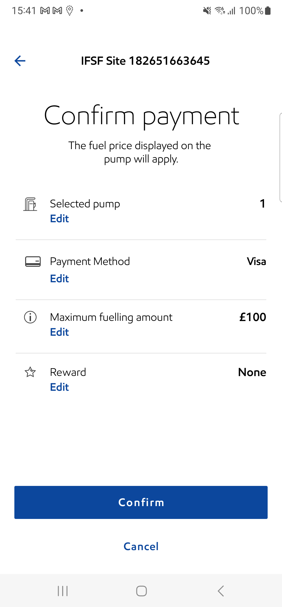PassVerify that user should be able to see the updated Confirm Pump numberGiven user is on NLID screenWhen user taps on start button in LIDAnd user selects pump number "1" to start fuellingAnd user selects the pump from 'Select your Pump' page and taps on continue buttonThen the user is navigated to Confirm payment screenWhen the user taps on edit pump number from the Confirm payment screenThen user validates the Select your Pump screen when cancel button is not presentAnd user selects the pump from 'Select your Pump' page and taps on continue buttonAnd the user validates the confirm payment screen and validates the pump number "1"FailVerify that system should untick the 'Save for next time' checkboxGiven user is on NLID screenWhen user taps on start button in LIDAnd user selects pump number "1" to start fuellingAnd user selects the pump from 'Select your Pump' page and taps on continue buttonThen the user is navigated to Confirm payment screenWhen the user taps on edit button in the Mfa sectionThen user verify the MFA screen without cancel button and "140" as already selected valuestepDefinitions.Hook.afterEachStep(io.cucumber.java.Scenario)eb065295-11b5-4ca9-895d-6d3eaaff66e1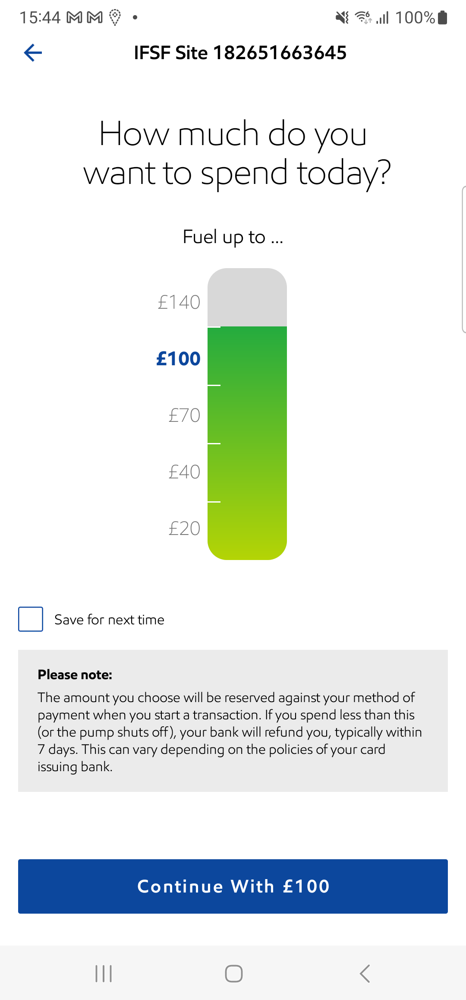And user tap on Continue button in MFA screenStep skippedThen the user is navigated to Confirm payment screenStep skippedPassVerify that user should allow the user to update the payment methodGiven user is on NLID screenWhen user taps on start button in LIDAnd user selects pump number "1" to start fuellingAnd user selects the pump from 'Select your Pump' page and taps on continue buttonAnd user tap on Continue button in MFA screenThen the user is navigated to Confirm payment screenAnd Click on Change payment linkThen verify if the user lands on Payment Details ScreenWhen the user taps on continue button in the Payment Details ScreenThen the user validates the confirm payment screen and validates the pump number "1"FailVerify that system should navigate the user back to the site check-in screen from the MFA screenGiven user is on NLID screenWhen user taps on start button in LIDAnd user selects pump number "1" to start fuellingAnd user selects the pump from 'Select your Pump' page and taps on continue buttonThen user verify the MFA screenWhen the user taps on back button in the MFA screenThen user validates the Select your Pump screen when cancel button is not presentstepDefinitions.Hook.afterEachStep(io.cucumber.java.Scenario)ddd60b4f-ab21-49f9-8dc0-4a1b29d8f539 And user selects the pump from 'Select your Pump' page and taps on continue buttonStep skippedAnd the user is navigated to the Redemption screenStep skippedAnd user tap on Continue button in MFA screenStep skippedAnd the user validates the confirm payment screen and validates the pump number "1"Step skippedFailVerify that System should display 100£ as the default MFA ruler unit and do not display the previous set MFA when User log out and log in to the same device after saving the MFA value for next time.Given user is on NLID screenWhen user taps on start button in LIDAnd user selects pump number "1" to start fuellingAnd user selects the pump from 'Select your Pump' page and taps on continue buttonWhen the user taps "140" in the ruler in the Mfa screen and validates the continue button is updatedAnd user tap on Save for next time checkbox in MFA screenAnd user tap on Continue button in MFA screenThen the user is navigated to Confirm payment screenWhen user kill and relaunch the appGiven user log out from the app if logged instepDefinitions.Hook.afterEachStep(io.cucumber.java.Scenario)4aa52d8e-c804-4a9a-9682-06124a2a651b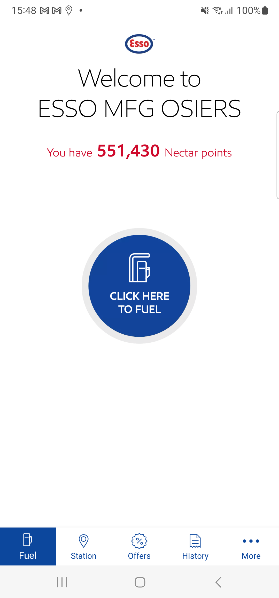When user clicks on Login IconStep skippedAnd I enter "FrictEssoPsword" in login detailsStep skippedAnd user taps login button in login screenStep skippedGiven user is on NLID screenStep skippedWhen user taps on start button in LIDStep skippedAnd user selects pump number "1" to start fuellingStep skippedAnd user selects the pump from 'Select your Pump' page and taps on continue buttonStep skippedThen user verify the MFA screenStep skippedFailVerify that system should allow the user to update the selected MFA unitGiven user is on NLID screenWhen user taps on start button in LIDAnd user selects pump number "1" to start fuellingAnd user selects the pump from 'Select your Pump' page and taps on continue buttonAnd user tap on Continue button in MFA screenstepDefinitions.Hook.afterEachStep(io.cucumber.java.Scenario)1b9bb388-493b-4bef-9a86-dcc45ca2696f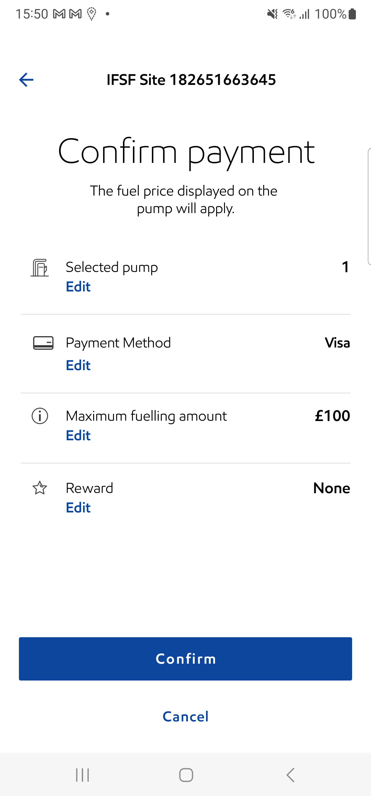Then the user is navigated to Confirm payment screenStep skippedWhen the user taps on edit button in the Mfa sectionStep skippedWhen the user taps "140" in the ruler in the Mfa screen and validates the continue button is updatedStep skippedWhen user tap on Continue button in MFA screenStep skippedThen the user validates the confirm payment screen and validates the pump number "1"Step skippedThen the user validates whether "140" is updated in the Confirm Payment screenStep skippedPassSystem to display Custom UI if the challenge flow is issued for the COF onboarding(Manual Registration)When user log out from the app if logged inWhen user taps on register button from Login screenThen user should be navigated to Manual Register screenThen enter First NameThen enter Last NameThen enter "chibisakkrava.d+" Email addressThen enter passwordAnd confirm passwordThen click the check box for acceptWhen click on continue button from register screenWhen user tap on Skip buttonThen the system should display Skip warning popupWhen user tap on Skip anywayThen app to dismiss the popup and navigate the user to LID after reviewAnd user taps on More button in tab barWhen user navigates to Account screenThen user tap on add card button in accountWhen user taps on Credit Debit card in Add Payment Method screenWhen user is on setup PIN screenWhen user enters four digit PINThen user tap on continue button in enter PIN screenThen tap on ok button and close location copy textThen user lands on Add debit/credit card screenThen enter name of the cardThen enter "4012 0000 0001 2003 001" card numberThen enter expiry dateThen enter CVVThen enter postal codeThen enter address line1Then enter Address line2Then enter cityThen check consent checkboxAnd tap on continue button in add payment screenThen validate if user is on modirum password screenPassDismiss the Identify Confirmation prompt as per �Requirement 1.e� if the user has tapped on the button(Manual Registration)When user log out from the app if logged inWhen user taps on register button from Login screenThen user should be navigated to Manual Register screenThen enter First NameThen enter Last NameThen enter "chibisakkrava.d+" Email addressThen enter passwordAnd confirm passwordThen click the check box for acceptWhen click on continue button from register screenWhen user tap on Skip buttonThen the system should display Skip warning popupWhen user tap on Skip anywayThen app to dismiss the popup and navigate the user to LID after reviewAnd user taps on More button in tab barWhen user navigates to Account screenThen user tap on add card button in accountWhen user taps on Credit Debit card in Add Payment Method screenWhen user is on setup PIN screenWhen user enters four digit PINThen user tap on continue button in enter PIN screenThen tap on ok button and close location copy textThen user lands on Add debit/credit card screenThen enter name of the cardThen enter "4012 0000 0001 2003 001" card numberThen enter expiry dateThen enter CVVThen enter postal codeThen enter address line1Then enter Address line2Then enter cityThen check consent checkboxAnd tap on continue button in add payment screenThen verify 3ds and tap on Got it buttonThen validate if user is on modirum password screenPassCheck whether system able to perform the 3DS SDK verification System to display error message pop up based on the error response from SDKWhen user log out from the app if logged inWhen user taps on register button from Login screenThen user should be navigated to Manual Register screenThen enter First NameThen enter Last NameThen enter "chibisakkrava.d+" Email addressThen enter passwordAnd confirm passwordThen click the check box for acceptWhen click on continue button from register screenWhen user tap on Skip buttonThen the system should display Skip warning popupWhen user tap on Skip anywayThen app to dismiss the popup and navigate the user to LID after reviewAnd user taps on More button in tab barWhen user navigates to Account screenThen user tap on add card button in accountWhen user taps on Credit Debit card in Add Payment Method screenWhen user is on setup PIN screenWhen user enters four digit PINThen user tap on continue button in enter PIN screenThen tap on ok button and close location copy textThen user lands on Add debit/credit card screenThen enter name of the cardThen enter "5520 9050 1002 2051" card numberThen enter expiry dateThen enter CVVThen enter postal codeThen enter address line1Then enter Address line2Then enter cityThen check consent checkboxAnd tap on continue button in add payment screenThen validate if user is on OTP password screenAnd tap on cancel button navigate to payment screenFailCheck whether system able to perform the 3DS SDK verification System to display error message pop up based on the error response from SDKWhen user log out from the app if logged inWhen user taps on register button from Login screenThen user should be navigated to Manual Register screenThen enter First NameThen enter Last NameThen enter "chibisakkrava.d+" Email addressThen enter passwordAnd confirm passwordThen click the check box for acceptWhen click on continue button from register screenWhen user tap on Skip buttonThen the system should display Skip warning popupWhen user tap on Skip anywayThen app to dismiss the popup and navigate the user to LID after reviewAnd user taps on More button in tab barstepDefinitions.Hook.afterEachStep(io.cucumber.java.Scenario)e634973b-1f55-43bb-a842-d61513086f7e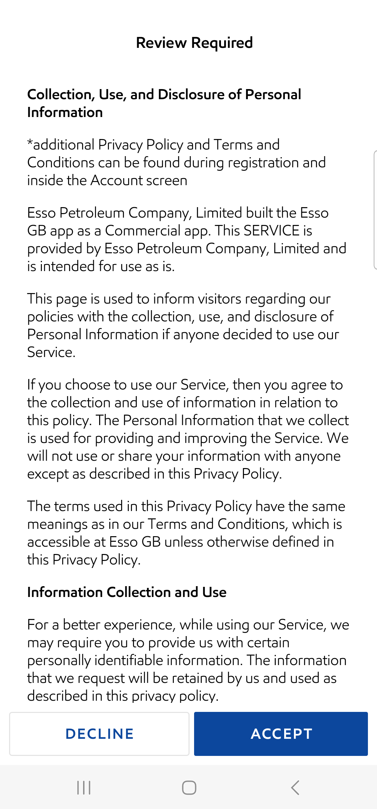When user navigates to Account screenStep skippedThen user tap on add card button in accountStep skippedWhen user taps on Credit Debit card in Add Payment Method screenStep skippedWhen user is on setup PIN screenStep skippedWhen user enters four digit PINStep skippedThen user tap on continue button in enter PIN screenStep skippedThen tap on ok button and close location copy textStep skippedThen user lands on Add debit/credit card screenStep skippedThen enter name of the cardStep skippedThen enter "5520 9050 1002 2051" card numberStep skippedThen enter expiry dateStep skippedThen enter CVVStep skippedThen enter postal codeStep skippedThen enter address line1Step skippedThen enter Address line2Step skippedThen enter cityStep skippedThen check consent checkboxStep skippedAnd tap on continue button in add payment screenStep skippedThen validate if user is on OTP password screenStep skippedAnd tap on cancel button navigate to payment screenStep skippedPassCheck whether User cancels the Challenge Scenario.When user log out from the app if logged inWhen user taps on register button from Login screenThen user should be navigated to Manual Register screenThen enter First NameThen enter Last NameThen enter "chibisakkrava.d+" Email addressThen enter passwordAnd confirm passwordThen click the check box for acceptWhen click on continue button from register screenWhen user tap on Skip buttonThen the system should display Skip warning popupWhen user tap on Skip anywayThen app to dismiss the popup and navigate the user to LID after reviewAnd user taps on More button in tab barWhen user navigates to Account screenThen user tap on add card button in accountWhen user taps on Credit Debit card in Add Payment Method screenWhen user is on setup PIN screenWhen user enters four digit PINThen user tap on continue button in enter PIN screenThen tap on ok button and close location copy textThen user lands on Add debit/credit card screenThen enter name of the cardThen enter "5520 9050 1002 2051" card numberThen enter expiry dateThen enter CVVThen enter postal codeThen enter address line1Then enter Address line2Then enter cityThen check consent checkboxAnd tap on continue button in add payment screenThen validate if user is on OTP password screenAnd tap on cancel button navigate to payment screenPassCheck whether User clicks on DONE again, based on 3DS SDK status, the app will display the challenge flow. (repeat the flow until the user complete the challenge flow or cancels the step or try with another cardGiven user is on NLID screenAnd user taps on More button in tab barWhen user navigates to Account screenThen user tap on add card button in accountWhen user taps on Credit Debit card in Add Payment Method screenThen user lands on Add debit/credit card screenThen enter name of the cardThen enter "5520 9050 1002 2051" card numberThen enter expiry dateThen enter CVVThen enter postal codeThen enter address line1Then enter Address line2Then enter cityThen check consent checkboxAnd tap on continue button in add payment screenThen validate if user is on OTP password screenAnd tap on cancel button navigate to payment screenThen all fields on Add debit card screen should be cleared
And user selects the pump from 'Select your Pump' page and taps on continue buttonStep skippedAnd the user is navigated to the Redemption screenStep skippedAnd user tap on Continue button in MFA screenStep skippedAnd the user validates the confirm payment screen and validates the pump number "1"Step skippedFailVerify that System should display 100£ as the default MFA ruler unit and do not display the previous set MFA when User log out and log in to the same device after saving the MFA value for next time.Given user is on NLID screenWhen user taps on start button in LIDAnd user selects pump number "1" to start fuellingAnd user selects the pump from 'Select your Pump' page and taps on continue buttonWhen the user taps "140" in the ruler in the Mfa screen and validates the continue button is updatedAnd user tap on Save for next time checkbox in MFA screenAnd user tap on Continue button in MFA screenThen the user is navigated to Confirm payment screenWhen user kill and relaunch the appGiven user log out from the app if logged instepDefinitions.Hook.afterEachStep(io.cucumber.java.Scenario)4aa52d8e-c804-4a9a-9682-06124a2a651b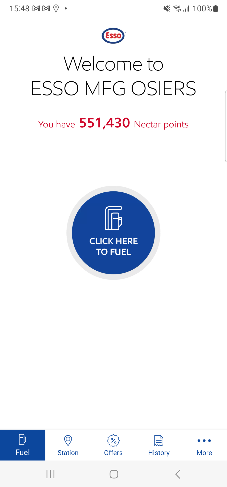When user clicks on Login IconStep skippedAnd I enter "FrictEssoPsword" in login detailsStep skippedAnd user taps login button in login screenStep skippedGiven user is on NLID screenStep skippedWhen user taps on start button in LIDStep skippedAnd user selects pump number "1" to start fuellingStep skippedAnd user selects the pump from 'Select your Pump' page and taps on continue buttonStep skippedThen user verify the MFA screenStep skippedFailVerify that system should allow the user to update the selected MFA unitGiven user is on NLID screenWhen user taps on start button in LIDAnd user selects pump number "1" to start fuellingAnd user selects the pump from 'Select your Pump' page and taps on continue buttonAnd user tap on Continue button in MFA screenstepDefinitions.Hook.afterEachStep(io.cucumber.java.Scenario)1b9bb388-493b-4bef-9a86-dcc45ca2696f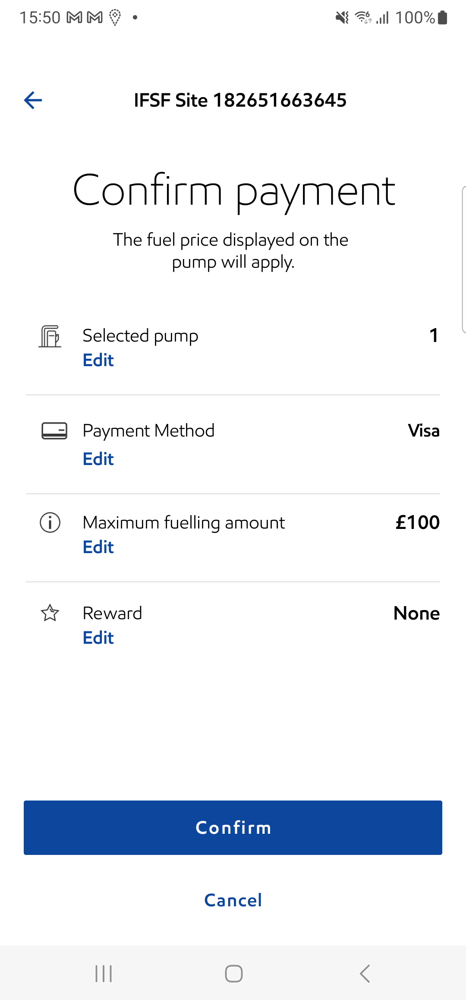Then the user is navigated to Confirm payment screenStep skippedWhen the user taps on edit button in the Mfa sectionStep skippedWhen the user taps "140" in the ruler in the Mfa screen and validates the continue button is updatedStep skippedWhen user tap on Continue button in MFA screenStep skippedThen the user validates the confirm payment screen and validates the pump number "1"Step skippedThen the user validates whether "140" is updated in the Confirm Payment screenStep skippedPassSystem to display Custom UI if the challenge flow is issued for the COF onboarding(Manual Registration)When user log out from the app if logged inWhen user taps on register button from Login screenThen user should be navigated to Manual Register screenThen enter First NameThen enter Last NameThen enter "chibisakkrava.d+" Email addressThen enter passwordAnd confirm passwordThen click the check box for acceptWhen click on continue button from register screenWhen user tap on Skip buttonThen the system should display Skip warning popupWhen user tap on Skip anywayThen app to dismiss the popup and navigate the user to LID after reviewAnd user taps on More button in tab barWhen user navigates to Account screenThen user tap on add card button in accountWhen user taps on Credit Debit card in Add Payment Method screenWhen user is on setup PIN screenWhen user enters four digit PINThen user tap on continue button in enter PIN screenThen tap on ok button and close location copy textThen user lands on Add debit/credit card screenThen enter name of the cardThen enter "4012 0000 0001 2003 001" card numberThen enter expiry dateThen enter CVVThen enter postal codeThen enter address line1Then enter Address line2Then enter cityThen check consent checkboxAnd tap on continue button in add payment screenThen validate if user is on modirum password screenPassDismiss the Identify Confirmation prompt as per �Requirement 1.e� if the user has tapped on the button(Manual Registration)When user log out from the app if logged inWhen user taps on register button from Login screenThen user should be navigated to Manual Register screenThen enter First NameThen enter Last NameThen enter "chibisakkrava.d+" Email addressThen enter passwordAnd confirm passwordThen click the check box for acceptWhen click on continue button from register screenWhen user tap on Skip buttonThen the system should display Skip warning popupWhen user tap on Skip anywayThen app to dismiss the popup and navigate the user to LID after reviewAnd user taps on More button in tab barWhen user navigates to Account screenThen user tap on add card button in accountWhen user taps on Credit Debit card in Add Payment Method screenWhen user is on setup PIN screenWhen user enters four digit PINThen user tap on continue button in enter PIN screenThen tap on ok button and close location copy textThen user lands on Add debit/credit card screenThen enter name of the cardThen enter "4012 0000 0001 2003 001" card numberThen enter expiry dateThen enter CVVThen enter postal codeThen enter address line1Then enter Address line2Then enter cityThen check consent checkboxAnd tap on continue button in add payment screenThen verify 3ds and tap on Got it buttonThen validate if user is on modirum password screenPassCheck whether system able to perform the 3DS SDK verification System to display error message pop up based on the error response from SDKWhen user log out from the app if logged inWhen user taps on register button from Login screenThen user should be navigated to Manual Register screenThen enter First NameThen enter Last NameThen enter "chibisakkrava.d+" Email addressThen enter passwordAnd confirm passwordThen click the check box for acceptWhen click on continue button from register screenWhen user tap on Skip buttonThen the system should display Skip warning popupWhen user tap on Skip anywayThen app to dismiss the popup and navigate the user to LID after reviewAnd user taps on More button in tab barWhen user navigates to Account screenThen user tap on add card button in accountWhen user taps on Credit Debit card in Add Payment Method screenWhen user is on setup PIN screenWhen user enters four digit PINThen user tap on continue button in enter PIN screenThen tap on ok button and close location copy textThen user lands on Add debit/credit card screenThen enter name of the cardThen enter "5520 9050 1002 2051" card numberThen enter expiry dateThen enter CVVThen enter postal codeThen enter address line1Then enter Address line2Then enter cityThen check consent checkboxAnd tap on continue button in add payment screenThen validate if user is on OTP password screenAnd tap on cancel button navigate to payment screenFailCheck whether system able to perform the 3DS SDK verification System to display error message pop up based on the error response from SDKWhen user log out from the app if logged inWhen user taps on register button from Login screenThen user should be navigated to Manual Register screenThen enter First NameThen enter Last NameThen enter "chibisakkrava.d+" Email addressThen enter passwordAnd confirm passwordThen click the check box for acceptWhen click on continue button from register screenWhen user tap on Skip buttonThen the system should display Skip warning popupWhen user tap on Skip anywayThen app to dismiss the popup and navigate the user to LID after reviewAnd user taps on More button in tab barstepDefinitions.Hook.afterEachStep(io.cucumber.java.Scenario)e634973b-1f55-43bb-a842-d61513086f7e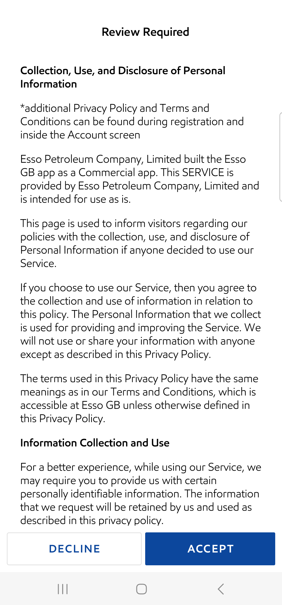When user navigates to Account screenStep skippedThen user tap on add card button in accountStep skippedWhen user taps on Credit Debit card in Add Payment Method screenStep skippedWhen user is on setup PIN screenStep skippedWhen user enters four digit PINStep skippedThen user tap on continue button in enter PIN screenStep skippedThen tap on ok button and close location copy textStep skippedThen user lands on Add debit/credit card screenStep skippedThen enter name of the cardStep skippedThen enter "5520 9050 1002 2051" card numberStep skippedThen enter expiry dateStep skippedThen enter CVVStep skippedThen enter postal codeStep skippedThen enter address line1Step skippedThen enter Address line2Step skippedThen enter cityStep skippedThen check consent checkboxStep skippedAnd tap on continue button in add payment screenStep skippedThen validate if user is on OTP password screenStep skippedAnd tap on cancel button navigate to payment screenStep skippedPassCheck whether User cancels the Challenge Scenario.When user log out from the app if logged inWhen user taps on register button from Login screenThen user should be navigated to Manual Register screenThen enter First NameThen enter Last NameThen enter "chibisakkrava.d+" Email addressThen enter passwordAnd confirm passwordThen click the check box for acceptWhen click on continue button from register screenWhen user tap on Skip buttonThen the system should display Skip warning popupWhen user tap on Skip anywayThen app to dismiss the popup and navigate the user to LID after reviewAnd user taps on More button in tab barWhen user navigates to Account screenThen user tap on add card button in accountWhen user taps on Credit Debit card in Add Payment Method screenWhen user is on setup PIN screenWhen user enters four digit PINThen user tap on continue button in enter PIN screenThen tap on ok button and close location copy textThen user lands on Add debit/credit card screenThen enter name of the cardThen enter "5520 9050 1002 2051" card numberThen enter expiry dateThen enter CVVThen enter postal codeThen enter address line1Then enter Address line2Then enter cityThen check consent checkboxAnd tap on continue button in add payment screenThen validate if user is on OTP password screenAnd tap on cancel button navigate to payment screenPassCheck whether User clicks on DONE again, based on 3DS SDK status, the app will display the challenge flow. (repeat the flow until the user complete the challenge flow or cancels the step or try with another cardGiven user is on NLID screenAnd user taps on More button in tab barWhen user navigates to Account screenThen user tap on add card button in accountWhen user taps on Credit Debit card in Add Payment Method screenThen user lands on Add debit/credit card screenThen enter name of the cardThen enter "5520 9050 1002 2051" card numberThen enter expiry dateThen enter CVVThen enter postal codeThen enter address line1Then enter Address line2Then enter cityThen check consent checkboxAnd tap on continue button in add payment screenThen validate if user is on OTP password screenAnd tap on cancel button navigate to payment screenThen all fields on Add debit card screen should be cleared -
FrictionlessFlow
4:16:09 pm / 02:38:51:122 Fail
FrictionlessFlow
06.21.2024 4:16:09 pm 06.21.2024 6:55:01 pm 02:38:51:122 · #test-id=1,126FailValidate invalid password popup error message "Due to security reasons you need to login again.Button: OK"Given user log out from the app if logged inAnd user clicks on Login IconWhen I enter "FrictEssoPsword" in login detailsAnd user taps login button in login screenAnd user is on NLID screenWhen user taps on fuel icon and start fuelling buttonAnd user selects the pump from 'Select your Pump' page and taps on continue buttonWhen user tap on Continue button in MFA screenstepDefinitions.Hook.afterEachStep(io.cucumber.java.Scenario)f2f383a5-9f67-4213-aff2-a4c9b453b324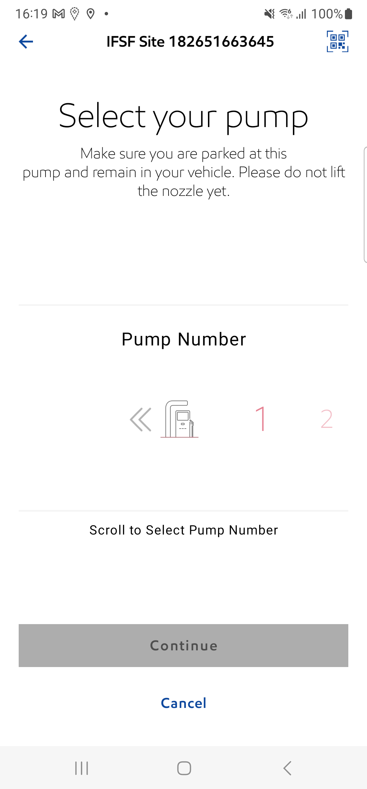Then the user is navigated to Confirm payment screenStep skippedAnd user confirms card paymentStep skippedThen user land on enter PIN screenStep skippedAnd user should enter wrong PIN three timesStep skippedThen Verify user is navigated to Enter Password screenStep skippedWhen user enter invalid password in enter password screenStep skippedThen user able to see invalid password popup messageStep skippedAnd Verify that User is navigate back to NLID screenStep skippedFailCheck Whether System to show inline error message when user leaves the field blank and clicks on continueWhen user log out from the app if logged inWhen user taps on register button from Login screenThen user should be navigated to Manual Register screenThen enter First NameThen enter Last NameThen enter "chibisakkrava.d+" Email addressThen enter passwordAnd confirm passwordThen click the check box for acceptWhen click on continue button from register screenWhen user tap on Skip buttonThen the system should display Skip warning popupWhen user tap on Skip anywayThen app to dismiss the popup and navigate the user to LID after reviewAnd user taps on More button in tab barstepDefinitions.Hook.afterEachStep(io.cucumber.java.Scenario)1bad141d-0ecd-45eb-8095-19096d358a48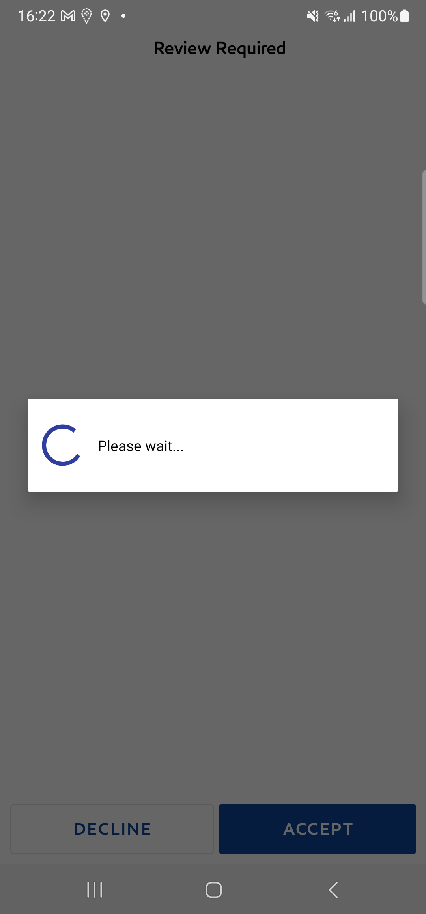When user navigates to Account screenStep skippedThen user tap on add card button in accountStep skippedWhen user taps on Credit Debit card in Add Payment Method screenStep skippedWhen user is on setup PIN screenStep skippedWhen user enters four digit PINStep skippedThen user tap on continue button in enter PIN screenStep skippedThen tap on ok button and close location copy textStep skippedThen user lands on Add debit/credit card screenStep skippedAnd user taps on card number fieldStep skippedThen check consent checkboxStep skippedAnd tap on continue button in add payment screenStep skippedThen user verifies the inline error message for card number fieldStep skippedFailCheck whether System to display CT as prompt when user tap on the ‘Edit’ button i. CT[Message: Are you sure you want to delete this card?, Button: CANCEL, DELETE]Given user is on NLID screenAnd user taps on More button in tab barWhen user navigates to Account screenThen user tap on add card button in accountWhen user taps on Credit Debit card in Add Payment Method screenThen enter name of the cardstepDefinitions.Hook.afterEachStep(io.cucumber.java.Scenario)1add2829-a7c0-4725-bde3-2cd5567af37c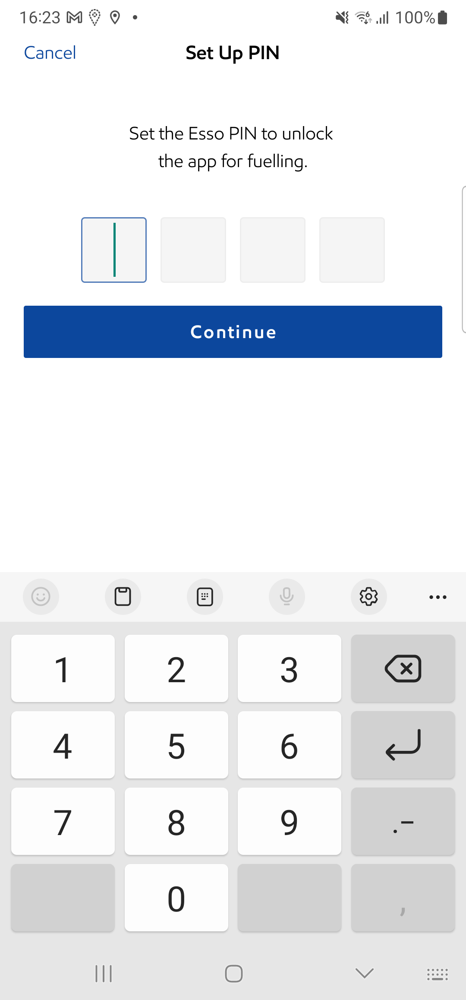Then enter "5232 0500 0019 0003" card numberStep skippedThen enter expiry dateStep skippedThen enter CVVStep skippedThen enter postal codeStep skippedThen enter address line1Step skippedThen enter Address line2Step skippedThen enter cityStep skippedThen check consent checkboxStep skippedThen user clicks on continue button in Card screenStep skippedWhen user tap done button to navigate verify screen "Payment method added successfully"Step skippedWhen user tap on payment method added successfully screen continue buttonStep skippedAnd user click the edit card button with no mobile and no paypalStep skippedAnd user should verify the last four digit of card numberStep skippedAnd user tap on Delete Card buttonStep skippedAnd user should verify the CT "Are you sure you want to delete this card?"Step skippedAnd user should verify cancel and delete buttonStep skippedFailCheck Whether System displays user able to enter maximum of fifty charactersGiven user is on NLID screenAnd user taps on More button in tab barWhen user navigates to Account screenThen user tap on add card button in accountWhen user taps on Credit Debit card in Add Payment Method screenThen user verifies the Billing address i icon in Card details screenstepDefinitions.Hook.afterEachStep(io.cucumber.java.Scenario)dea733aa-46c0-47c4-b18c-bf2b923dd507And user clicks on City fieldStep skippedThen user enters maximum of fifty characters above fifty user will not be able to enterStep skippedFailCheck Whether System displays the default input text for the City field under Billing Details section as'City'Given user is on NLID screenAnd user taps on More button in tab barWhen user navigates to Account screenThen user tap on add card button in accountWhen user taps on Credit Debit card in Add Payment Method screenThen user verifies the default input text for the City field under Billing Details SectionstepDefinitions.Hook.afterEachStep(io.cucumber.java.Scenario)147a9ba3-ffab-4991-b8a7-62967b5da4a5PassSystem to display the entered card number in the format XXXX XXXX XXXX XXXXAnd user log out from the app if logged inWhen user taps on register button from Login screenThen user should be navigated to Manual Register screenThen enter First NameThen enter Last NameThen enter "chibisakkrava.d+" Email addressThen enter passwordAnd confirm passwordThen click the check box for acceptWhen click on continue button from register screenWhen user tap on Skip buttonThen the system should display Skip warning popupWhen user tap on Skip anywayThen app to dismiss the popup and navigate the user to LID after reviewAnd user taps on More button in tab barWhen user navigates to Account screenThen user tap on add card button in accountWhen user taps on Credit Debit card in Add Payment Method screenAnd Enter pinThen user verifies the popup and clicks on ok buttonAnd verify elements displayed in Add Card ScreenAnd Enter name Card NameAnd Verify card number in valid formatPassCheck Whether System displays the united kingdom in Billing details screenAnd user log out from the app if logged inWhen user taps on register button from Login screenThen user should be navigated to Manual Register screenThen enter First NameThen enter Last NameThen enter Email address as "chibisakkrava.d+"Then enter passwordAnd confirm passwordThen click the check box for acceptWhen click on continue button from register screenWhen user tap on Skip buttonThen the system should display Skip warning popupWhen user tap on Skip anywayThen app to dismiss the popup and navigate the user to LID after reviewAnd user taps on the complete profileWhen user taps on add payment methodWhen user taps on Credit Debit card in Add Payment Method screenWhen user is on setup PIN screenWhen user enters four digit PINThen user tap on continue button in enter PIN screenThen tap on ok button and close location copy textAnd user scrolls to Country name under Billing Details SectionThen user verifies the Country name as 'United Kingdom' by defaultPassSystem to close the info overlay as user taps on ‘GOT IT’ buttonWhen user log out from the app if logged inWhen user taps on register button from Login screenThen user should be navigated to Manual Register screenThen enter First NameThen enter Last NameThen enter "chibisakkrava.d+" Email addressThen enter passwordAnd confirm passwordThen click the check box for acceptWhen click on continue button from register screenWhen user tap on Skip buttonThen the system should display Skip warning popupWhen user tap on Skip anywayThen app to dismiss the popup and navigate the user to LID after reviewAnd user taps on More button in tab barWhen user navigates to Account screenThen user tap on add card button in accountWhen user taps on Credit Debit card in Add Payment Method screenAnd Enter pinThen user verifies the popup and clicks on ok buttonAnd Click on i icon in the security fieldThen Click on Got it button on popup screenFailCheck Whether System displays the list of address in postcode lookup screenAnd user log out from the app if logged inWhen user taps on register button from Login screenThen user should be navigated to Manual Register screenThen enter First NameThen enter Last NameThen enter Email address as "chibisakkrava.d+"Then enter passwordAnd confirm passwordThen click the check box for acceptWhen click on continue button from register screenWhen user tap on Skip buttonThen the system should display Skip warning popupWhen user tap on Skip anywayThen app to dismiss the popup and navigate the user to LID after reviewAnd user taps on the complete profilestepDefinitions.Hook.afterEachStep(io.cucumber.java.Scenario)515c6d11-300d-4921-9b6e-6af896b51a07 When user taps on add payment methodStep skippedWhen user taps on Credit Debit card in Add Payment Method screenStep skippedThen user verifies the Set Up pin screen with numeric keypadStep skippedThen Enter pinStep skippedThen user verifies the popup and clicks on ok buttonStep skippedThen user verifies the Billing address i icon in Card details screenStep skippedAnd user clicks on postcode fieldStep skippedThen user verifies the search icon is enabledStep skippedAnd user enters the postcode in the billing Details screenStep skippedThen user clicks on enabled search iconStep skippedThen user verifies the screen with screen title and back icon and search clear iconsStep skippedAnd user verifies the list of address in postcode lookup screenStep skippedPassCheck Whether System displays the entered numbers in post code fieldWhen user log out from the app if logged inWhen user taps on register button from Login screenThen user should be navigated to Manual Register screenThen enter First NameThen enter Last NameThen enter Email address as "chibisakkrava.d+"Then enter passwordAnd confirm passwordThen click the check box for acceptWhen click on continue button from register screenWhen user tap on Skip buttonThen the system should display Skip warning popupWhen user tap on Skip anywayThen app to dismiss the popup and navigate the user to LID after reviewAnd user taps on the complete profileWhen user taps on add payment methodWhen user taps on Credit Debit card in Add Payment Method screenWhen user is on setup PIN screenWhen user enters four digit PINThen user tap on continue button in enter PIN screenThen tap on ok button and close location copy textThen user verifies the Billing address i icon in Card details screenAnd user clicks on postcode fieldWhen user enters the postcode in the billing Details screenThen verify whether the entered postcode is alphanumeric and also the postcode lengthFailCheck Whether System displays the native picker while clicking the Expiry month and dateWhen user log out from the app if logged inWhen user taps on register button from Login screenThen user should be navigated to Manual Register screenThen enter First NameThen enter Last NameThen enter "chibisakkrava.d+" Email addressThen enter passwordAnd confirm passwordThen click the check box for acceptWhen click on continue button from register screenWhen user tap on Skip buttonThen the system should display Skip warning popupWhen user tap on Skip anywayThen app to dismiss the popup and navigate the user to LID after reviewAnd user taps on the complete profilestepDefinitions.Hook.afterEachStep(io.cucumber.java.Scenario)6333e931-3f39-4e2e-ac0f-e6417426c2f0
When user taps on add payment methodStep skippedWhen user taps on Credit Debit card in Add Payment Method screenStep skippedThen user verifies the Set Up pin screen with numeric keypadStep skippedThen Enter pinStep skippedThen user verifies the popup and clicks on ok buttonStep skippedThen user verifies the Billing address i icon in Card details screenStep skippedAnd user clicks on postcode fieldStep skippedThen user verifies the search icon is enabledStep skippedAnd user enters the postcode in the billing Details screenStep skippedThen user clicks on enabled search iconStep skippedThen user verifies the screen with screen title and back icon and search clear iconsStep skippedAnd user verifies the list of address in postcode lookup screenStep skippedPassCheck Whether System displays the entered numbers in post code fieldWhen user log out from the app if logged inWhen user taps on register button from Login screenThen user should be navigated to Manual Register screenThen enter First NameThen enter Last NameThen enter Email address as "chibisakkrava.d+"Then enter passwordAnd confirm passwordThen click the check box for acceptWhen click on continue button from register screenWhen user tap on Skip buttonThen the system should display Skip warning popupWhen user tap on Skip anywayThen app to dismiss the popup and navigate the user to LID after reviewAnd user taps on the complete profileWhen user taps on add payment methodWhen user taps on Credit Debit card in Add Payment Method screenWhen user is on setup PIN screenWhen user enters four digit PINThen user tap on continue button in enter PIN screenThen tap on ok button and close location copy textThen user verifies the Billing address i icon in Card details screenAnd user clicks on postcode fieldWhen user enters the postcode in the billing Details screenThen verify whether the entered postcode is alphanumeric and also the postcode lengthFailCheck Whether System displays the native picker while clicking the Expiry month and dateWhen user log out from the app if logged inWhen user taps on register button from Login screenThen user should be navigated to Manual Register screenThen enter First NameThen enter Last NameThen enter "chibisakkrava.d+" Email addressThen enter passwordAnd confirm passwordThen click the check box for acceptWhen click on continue button from register screenWhen user tap on Skip buttonThen the system should display Skip warning popupWhen user tap on Skip anywayThen app to dismiss the popup and navigate the user to LID after reviewAnd user taps on the complete profilestepDefinitions.Hook.afterEachStep(io.cucumber.java.Scenario)6333e931-3f39-4e2e-ac0f-e6417426c2f0 When user taps on add payment methodStep skippedWhen user taps on Credit Debit card in Add Payment Method screenStep skippedThen user verifies the Set Up pin screen with numeric keypadStep skippedThen Enter pinStep skippedThen user verifies the popup and clicks on ok buttonStep skippedThen enter expiry dateStep skippedPassScenario: Check Whether System displays the popup message for i icon next to consent to app checkbox fieldAnd user log out from the app if logged inWhen user taps on register button from Login screenThen user should be navigated to Manual Register screenThen enter First NameThen enter Last NameThen enter Email address as "chibisakkrava.d+"Then enter passwordAnd confirm passwordThen click the check box for acceptWhen click on continue button from register screenWhen user tap on Skip buttonThen the system should display Skip warning popupWhen user tap on Skip anywayThen app to dismiss the popup and navigate the user to LID after reviewAnd user taps on the complete profileWhen user taps on add payment methodWhen user taps on Credit Debit card in Add Payment Method screenWhen user is on setup PIN screenWhen user enters four digit PINThen user tap on continue button in enter PIN screenThen tap on ok button and close location copy textThen enter name of the cardThen enter "5232 0500 0019 0003" card numberThen enter expiry dateThen enter CVVThen enter postal codeThen enter address line1Then enter Address line2Then enter cityThen user verifies and clicks the i icon next to consent checkboxPassCheck whether System to display CTXX as inline error message ●CTXX[Message: Wrong PIN. 2 Attempts left]And user log out from the app if logged inWhen user taps on register button from Login screenThen user should be navigated to Manual Register screenThen enter First NameThen enter Last NameThen enter "chibisakkrava.d+" Email addressThen enter passwordAnd confirm passwordThen click the check box for acceptWhen click on continue button from register screenWhen user tap on Skip buttonThen the system should display Skip warning popupWhen user tap on Skip anywayThen app to dismiss the popup and navigate the user to LID after reviewAnd user taps on More button in tab barWhen user navigates to Account screenWhen user able to see the text of set up Esso PINThen user tap on Setup Esso PIN linkAnd Enter pinThen user verifies the popup and clicks on ok buttonAnd user Tap Edit buttonThen user enter the wrong pin number and click on continue buttonThen user verifies the inline error message for entering wrong pinPassCheck Whether System displays the Address 2 input fields in Card details screen under Billing Details section as'Address2'When user log out from the app if logged inWhen user taps on register button from Login screenThen user should be navigated to Manual Register screenThen enter First NameThen enter Last NameThen enter Email address as "chibisakkrava.d+"Then enter passwordAnd confirm passwordThen click the check box for acceptWhen click on continue button from register screenWhen user tap on Skip buttonThen the system should display Skip warning popupWhen user tap on Skip anywayThen app to dismiss the popup and navigate the user to LID after reviewAnd user taps on the complete profileWhen user taps on add payment methodWhen user taps on Credit Debit card in Add Payment Method screenWhen user is on setup PIN screenWhen user enters four digit PINThen user tap on continue button in enter PIN screenThen tap on ok button and close location copy textThen user verifies the Billing address i icon in Card details screenThen user verifies the default input text for the Address field Line two under Billing Details SectionPassCheck the whether System to allow the user to add cards as a payment method.Given user is on NLID screenAnd user taps on More button in tab barWhen user navigates to Account screenThen user tap on add card button in accountWhen user taps on Credit Debit card in Add Payment Method screenThen user should verify title text on the payment screenThen enter name of the cardThen enter "5232 0500 0019 0003" card numberThen enter expiry dateThen enter CVVThen enter postal codeThen enter address line1Then enter Address line2Then enter cityThen check consent checkboxThen user clicks on continue button in Card screenWhen user tap done button to navigate verify screen "Payment method added successfully"When user tap on payment method added successfully screen continue buttonThen user verifies the success set Default payment popupAnd user verifies the account pageFailCheck whether the system displays icons for cards of all app supported credit cards will be displayed here.When user log out from the app if logged inWhen user taps on register button from Login screenThen user should be navigated to Manual Register screenThen enter First NameThen enter Last NameThen enter "chibisakkrava.d+" Email addressThen enter passwordAnd confirm passwordThen click the check box for acceptWhen click on continue button from register screenWhen user tap on Skip buttonThen the system should display Skip warning popupWhen user tap on Skip anywayThen app to dismiss the popup and navigate the user to LID after reviewAnd user taps on More button in tab barstepDefinitions.Hook.afterEachStep(io.cucumber.java.Scenario)56805c84-7ed0-4d6c-ae3f-019e7d77674a
When user taps on add payment methodStep skippedWhen user taps on Credit Debit card in Add Payment Method screenStep skippedThen user verifies the Set Up pin screen with numeric keypadStep skippedThen Enter pinStep skippedThen user verifies the popup and clicks on ok buttonStep skippedThen enter expiry dateStep skippedPassScenario: Check Whether System displays the popup message for i icon next to consent to app checkbox fieldAnd user log out from the app if logged inWhen user taps on register button from Login screenThen user should be navigated to Manual Register screenThen enter First NameThen enter Last NameThen enter Email address as "chibisakkrava.d+"Then enter passwordAnd confirm passwordThen click the check box for acceptWhen click on continue button from register screenWhen user tap on Skip buttonThen the system should display Skip warning popupWhen user tap on Skip anywayThen app to dismiss the popup and navigate the user to LID after reviewAnd user taps on the complete profileWhen user taps on add payment methodWhen user taps on Credit Debit card in Add Payment Method screenWhen user is on setup PIN screenWhen user enters four digit PINThen user tap on continue button in enter PIN screenThen tap on ok button and close location copy textThen enter name of the cardThen enter "5232 0500 0019 0003" card numberThen enter expiry dateThen enter CVVThen enter postal codeThen enter address line1Then enter Address line2Then enter cityThen user verifies and clicks the i icon next to consent checkboxPassCheck whether System to display CTXX as inline error message ●CTXX[Message: Wrong PIN. 2 Attempts left]And user log out from the app if logged inWhen user taps on register button from Login screenThen user should be navigated to Manual Register screenThen enter First NameThen enter Last NameThen enter "chibisakkrava.d+" Email addressThen enter passwordAnd confirm passwordThen click the check box for acceptWhen click on continue button from register screenWhen user tap on Skip buttonThen the system should display Skip warning popupWhen user tap on Skip anywayThen app to dismiss the popup and navigate the user to LID after reviewAnd user taps on More button in tab barWhen user navigates to Account screenWhen user able to see the text of set up Esso PINThen user tap on Setup Esso PIN linkAnd Enter pinThen user verifies the popup and clicks on ok buttonAnd user Tap Edit buttonThen user enter the wrong pin number and click on continue buttonThen user verifies the inline error message for entering wrong pinPassCheck Whether System displays the Address 2 input fields in Card details screen under Billing Details section as'Address2'When user log out from the app if logged inWhen user taps on register button from Login screenThen user should be navigated to Manual Register screenThen enter First NameThen enter Last NameThen enter Email address as "chibisakkrava.d+"Then enter passwordAnd confirm passwordThen click the check box for acceptWhen click on continue button from register screenWhen user tap on Skip buttonThen the system should display Skip warning popupWhen user tap on Skip anywayThen app to dismiss the popup and navigate the user to LID after reviewAnd user taps on the complete profileWhen user taps on add payment methodWhen user taps on Credit Debit card in Add Payment Method screenWhen user is on setup PIN screenWhen user enters four digit PINThen user tap on continue button in enter PIN screenThen tap on ok button and close location copy textThen user verifies the Billing address i icon in Card details screenThen user verifies the default input text for the Address field Line two under Billing Details SectionPassCheck the whether System to allow the user to add cards as a payment method.Given user is on NLID screenAnd user taps on More button in tab barWhen user navigates to Account screenThen user tap on add card button in accountWhen user taps on Credit Debit card in Add Payment Method screenThen user should verify title text on the payment screenThen enter name of the cardThen enter "5232 0500 0019 0003" card numberThen enter expiry dateThen enter CVVThen enter postal codeThen enter address line1Then enter Address line2Then enter cityThen check consent checkboxThen user clicks on continue button in Card screenWhen user tap done button to navigate verify screen "Payment method added successfully"When user tap on payment method added successfully screen continue buttonThen user verifies the success set Default payment popupAnd user verifies the account pageFailCheck whether the system displays icons for cards of all app supported credit cards will be displayed here.When user log out from the app if logged inWhen user taps on register button from Login screenThen user should be navigated to Manual Register screenThen enter First NameThen enter Last NameThen enter "chibisakkrava.d+" Email addressThen enter passwordAnd confirm passwordThen click the check box for acceptWhen click on continue button from register screenWhen user tap on Skip buttonThen the system should display Skip warning popupWhen user tap on Skip anywayThen app to dismiss the popup and navigate the user to LID after reviewAnd user taps on More button in tab barstepDefinitions.Hook.afterEachStep(io.cucumber.java.Scenario)56805c84-7ed0-4d6c-ae3f-019e7d77674a When user navigates to Account screenStep skippedThen user tap on add card button in accountStep skippedWhen user taps on Credit Debit card in Add Payment Method screenStep skippedWhen user enters four digit PINStep skippedThen user tap on continue button in enter PIN screenStep skippedThen tap on ok button and close location copy textStep skippedThen user lands on Add debit/credit card screenStep skippedWhen user enters the unsupported card number in the Card number fieldStep skippedThen verify whether the logo of the cards are greyed outStep skippedWhen user enters the first four digits of a valid card number in the Add number fieldStep skippedThen verify whether the logo of the entered card is activeStep skippedFailCheck Whether system allows the user to enter set the pin in numeric fieldWhen user log out from the app if logged inWhen user taps on register button from Login screenThen user should be navigated to Manual Register screenThen enter First NameThen enter Last NameThen enter "chibisakkrava.d+" Email addressThen enter passwordAnd confirm passwordThen click the check box for acceptWhen click on continue button from register screenWhen user tap on Skip buttonThen the system should display Skip warning popupWhen user tap on Skip anywayThen app to dismiss the popup and navigate the user to LID after reviewAnd user taps on More button in tab barstepDefinitions.Hook.afterEachStep(io.cucumber.java.Scenario)92323fed-5e4e-46b8-9083-fdaeaae6cdbb
When user navigates to Account screenStep skippedThen user tap on add card button in accountStep skippedWhen user taps on Credit Debit card in Add Payment Method screenStep skippedWhen user enters four digit PINStep skippedThen user tap on continue button in enter PIN screenStep skippedThen tap on ok button and close location copy textStep skippedThen user lands on Add debit/credit card screenStep skippedWhen user enters the unsupported card number in the Card number fieldStep skippedThen verify whether the logo of the cards are greyed outStep skippedWhen user enters the first four digits of a valid card number in the Add number fieldStep skippedThen verify whether the logo of the entered card is activeStep skippedFailCheck Whether system allows the user to enter set the pin in numeric fieldWhen user log out from the app if logged inWhen user taps on register button from Login screenThen user should be navigated to Manual Register screenThen enter First NameThen enter Last NameThen enter "chibisakkrava.d+" Email addressThen enter passwordAnd confirm passwordThen click the check box for acceptWhen click on continue button from register screenWhen user tap on Skip buttonThen the system should display Skip warning popupWhen user tap on Skip anywayThen app to dismiss the popup and navigate the user to LID after reviewAnd user taps on More button in tab barstepDefinitions.Hook.afterEachStep(io.cucumber.java.Scenario)92323fed-5e4e-46b8-9083-fdaeaae6cdbb When user navigates to Account screenStep skippedThen user tap on add card button in accountStep skippedWhen user taps on Credit Debit card in Add Payment Method screenStep skippedWhen user is on setup PIN screenStep skippedWhen user enters four digit PINStep skippedFailCheck Whether System displays the dot for completed pin in Payment MethodWhen user log out from the app if logged inWhen user taps on register button from Login screenThen user should be navigated to Manual Register screenThen enter First NameThen enter Last NameThen enter "chibisakkrava.d+" Email addressThen enter passwordAnd confirm passwordThen click the check box for acceptWhen click on continue button from register screenWhen user tap on Skip buttonThen the system should display Skip warning popupWhen user tap on Skip anywayThen app to dismiss the popup and navigate the user to LID after reviewAnd user taps on More button in tab barstepDefinitions.Hook.afterEachStep(io.cucumber.java.Scenario)29add3d3-b5cc-429e-af19-0d300032881f
When user navigates to Account screenStep skippedThen user tap on add card button in accountStep skippedWhen user taps on Credit Debit card in Add Payment Method screenStep skippedWhen user is on setup PIN screenStep skippedWhen user enters four digit PINStep skippedFailCheck Whether System displays the dot for completed pin in Payment MethodWhen user log out from the app if logged inWhen user taps on register button from Login screenThen user should be navigated to Manual Register screenThen enter First NameThen enter Last NameThen enter "chibisakkrava.d+" Email addressThen enter passwordAnd confirm passwordThen click the check box for acceptWhen click on continue button from register screenWhen user tap on Skip buttonThen the system should display Skip warning popupWhen user tap on Skip anywayThen app to dismiss the popup and navigate the user to LID after reviewAnd user taps on More button in tab barstepDefinitions.Hook.afterEachStep(io.cucumber.java.Scenario)29add3d3-b5cc-429e-af19-0d300032881f When user navigates to Account screenStep skippedThen user tap on add card button in accountStep skippedWhen user taps on Credit Debit card in Add Payment Method screenStep skippedWhen user is on setup PIN screenStep skippedAnd user sets the pin numberStep skippedThen user verifies the entered pin as dotStep skippedPassCheck System to display the following prompt when the card is successfully added a. Title: Message,Copy Text Message Card added successfully. Buttons:OK b. System to navigate user back to the account screenWhen user log out from the app if logged inWhen user taps on register button from Login screenThen user should be navigated to Manual Register screenThen enter First NameThen enter Last NameThen enter "chibisakkrava.d+" Email addressThen enter passwordAnd confirm passwordThen click the check box for acceptWhen click on continue button from register screenWhen user tap on Skip buttonThen the system should display Skip warning popupWhen user tap on Skip anywayThen app to dismiss the popup and navigate the user to LID after reviewAnd user taps on More button in tab barWhen user navigates to Account screenThen user tap on add card button in accountWhen user taps on Credit Debit card in Add Payment Method screenWhen user is on setup PIN screenWhen user enters four digit PINThen user tap on continue button in enter PIN screenThen tap on ok button and close location copy textThen user lands on Add debit/credit card screenThen enter name of the cardThen enter "5232 0500 0019 0003" card numberThen enter expiry dateThen enter CVVThen enter postal codeThen enter address line1Then enter Address line2Then enter cityThen check consent checkboxThen user clicks on continue button in Card screenWhen user tap done button to navigate verify screen "Payment method added successfully"FailCheck Whether system displays the set pin screen through AccountWhen user log out from the app if logged inWhen user taps on register button from Login screenThen user should be navigated to Manual Register screenThen enter First NameThen enter Last NameThen enter "chibisakkrava.d+" Email addressThen enter passwordAnd confirm passwordThen click the check box for acceptWhen click on continue button from register screenWhen user tap on Skip buttonThen the system should display Skip warning popupWhen user tap on Skip anywayThen app to dismiss the popup and navigate the user to LID after reviewAnd user taps on More button in tab barstepDefinitions.Hook.afterEachStep(io.cucumber.java.Scenario)64e01106-00d8-45ef-950f-ee4d744411cd
When user navigates to Account screenStep skippedThen user tap on add card button in accountStep skippedWhen user taps on Credit Debit card in Add Payment Method screenStep skippedWhen user is on setup PIN screenStep skippedAnd user sets the pin numberStep skippedThen user verifies the entered pin as dotStep skippedPassCheck System to display the following prompt when the card is successfully added a. Title: Message,Copy Text Message Card added successfully. Buttons:OK b. System to navigate user back to the account screenWhen user log out from the app if logged inWhen user taps on register button from Login screenThen user should be navigated to Manual Register screenThen enter First NameThen enter Last NameThen enter "chibisakkrava.d+" Email addressThen enter passwordAnd confirm passwordThen click the check box for acceptWhen click on continue button from register screenWhen user tap on Skip buttonThen the system should display Skip warning popupWhen user tap on Skip anywayThen app to dismiss the popup and navigate the user to LID after reviewAnd user taps on More button in tab barWhen user navigates to Account screenThen user tap on add card button in accountWhen user taps on Credit Debit card in Add Payment Method screenWhen user is on setup PIN screenWhen user enters four digit PINThen user tap on continue button in enter PIN screenThen tap on ok button and close location copy textThen user lands on Add debit/credit card screenThen enter name of the cardThen enter "5232 0500 0019 0003" card numberThen enter expiry dateThen enter CVVThen enter postal codeThen enter address line1Then enter Address line2Then enter cityThen check consent checkboxThen user clicks on continue button in Card screenWhen user tap done button to navigate verify screen "Payment method added successfully"FailCheck Whether system displays the set pin screen through AccountWhen user log out from the app if logged inWhen user taps on register button from Login screenThen user should be navigated to Manual Register screenThen enter First NameThen enter Last NameThen enter "chibisakkrava.d+" Email addressThen enter passwordAnd confirm passwordThen click the check box for acceptWhen click on continue button from register screenWhen user tap on Skip buttonThen the system should display Skip warning popupWhen user tap on Skip anywayThen app to dismiss the popup and navigate the user to LID after reviewAnd user taps on More button in tab barstepDefinitions.Hook.afterEachStep(io.cucumber.java.Scenario)64e01106-00d8-45ef-950f-ee4d744411cd When user navigates to Account screenStep skippedThen user tap on add card button in accountStep skippedWhen user taps on Credit Debit card in Add Payment Method screenStep skippedWhen user is on setup PIN screenStep skippedWhen user enters four digit PINStep skippedThen user tap on continue button in enter PIN screenStep skippedThen tap on ok button and close location copy textStep skippedThen user lands on Add debit/credit card screenStep skippedAnd tap cancel button in the Add card screen LIDStep skippedAnd tap cancel button in the Credit Debit card screenStep skippedAnd user clicks on more iconStep skippedWhen user navigates to Account screenStep skippedThen user clicks on esso pin editStep skippedAnd user sets the pin numberStep skippedThen user clicks on continueStep skippedThen user verifies the set new pin screenStep skippedFailCheck Whether System displays the unsupported card message in Billing details screen while entering wrong card numberWhen user log out from the app if logged inWhen user taps on register button from Login screenThen user should be navigated to Manual Register screenThen enter First NameThen enter Last NameThen enter "chibisakkrava.d+" Email addressThen enter passwordAnd confirm passwordThen click the check box for acceptWhen click on continue button from register screenWhen user tap on Skip buttonThen the system should display Skip warning popupWhen user tap on Skip anywayThen app to dismiss the popup and navigate the user to LID after reviewAnd user taps on More button in tab barWhen user navigates to Account screenThen user tap on add card button in accountWhen user taps on Credit Debit card in Add Payment Method screenWhen user is on setup PIN screenWhen user enters four digit PINThen user tap on continue button in enter PIN screenThen tap on ok button and close location copy textThen user lands on Add debit/credit card screenThen enter name of the cardThen enter "3123" card numberThen enter expiry dateThen enter CVVThen enter postal codeThen enter address line1Then enter Address line2Then enter cityThen check consent checkboxAnd tap on continue button in add payment screenThen user verifies the inline error msg for the invalid cardstepDefinitions.Hook.afterEachStep(io.cucumber.java.Scenario)3068f2aa-bc0c-4e47-b750-e50f95974500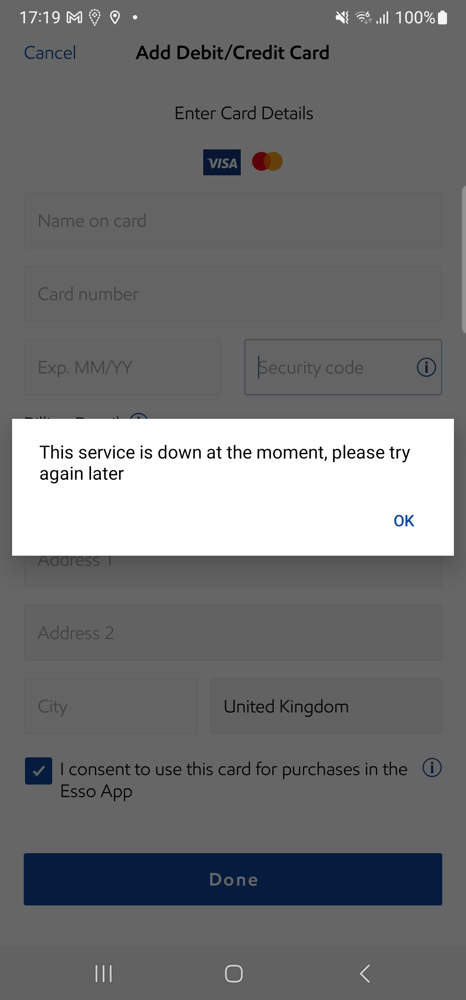PassCheck Whether System displays the entered card number in the Card number fieldWhen user log out from the app if logged inWhen user taps on register button from Login screenThen user should be navigated to Manual Register screenThen enter First NameThen enter Last NameThen enter "chibisakkrava.d+" Email addressThen enter passwordAnd confirm passwordThen click the check box for acceptWhen click on continue button from register screenWhen user tap on Skip buttonThen the system should display Skip warning popupWhen user tap on Skip anywayThen app to dismiss the popup and navigate the user to LID after reviewAnd user taps on More button in tab barWhen user navigates to Account screenThen user tap on add card button in accountWhen user taps on Credit Debit card in Add Payment Method screenWhen user is on setup PIN screenWhen user enters four digit PINThen user tap on continue button in enter PIN screenThen tap on ok button and close location copy textThen user lands on Add debit/credit card screenThen enter name of the cardThen enter "4012 0000 0601 2003 100" card numberThen verify whether the entered card number is displayedFailCheck whether System to validate the PINWhen user log out from the app if logged inWhen user taps on register button from Login screenThen user should be navigated to Manual Register screenThen enter First NameThen enter Last NameThen enter "chibisakkrava.d+" Email addressThen enter passwordAnd confirm passwordThen click the check box for acceptWhen click on continue button from register screenWhen user tap on Skip buttonThen the system should display Skip warning popupWhen user tap on Skip anywayThen app to dismiss the popup and navigate the user to LID after reviewAnd user taps on More button in tab barstepDefinitions.Hook.afterEachStep(io.cucumber.java.Scenario)63995059-c182-4ea1-94b1-e148c34729a5When user navigates to Account screenStep skippedWhen user able to see the text of set up Esso PINStep skippedThen user tap on Setup Esso PIN linkStep skippedThen user able to see the title Set up PINStep skippedThen user is on setup PIN screenStep skippedThen user should verify the text set the Esso PIN to unlock the app for fuellingStep skippedThen user clicks on continueStep skippedThen user verify the inline error messageStep skippedWhen user enters four digit PINStep skippedThen user tap on continue button in enter PIN screenStep skippedThen tap on ok button and close location copy textStep skippedPassCheck Whether System displays the set up pin through Account screenWhen user log out from the app if logged inWhen user taps on register button from Login screenThen user should be navigated to Manual Register screenThen enter First NameThen enter Last NameThen enter "chibisakkrava.d+" Email addressThen enter passwordAnd confirm passwordThen click the check box for acceptWhen click on continue button from register screenWhen user tap on Skip buttonThen the system should display Skip warning popupWhen user tap on Skip anywayThen app to dismiss the popup and navigate the user to LID after reviewAnd user taps on More button in tab barWhen user navigates to Account screenThen user tap on add card button in accountWhen user taps on Credit Debit card in Add Payment Method screenThen user able to see the title Set up PINThen user is on setup PIN screenThen user should verify the text set the Esso PIN to unlock the app for fuellingAnd Enter pinThen user verifies the popup and clicks on ok buttonPassCheck Whether System displays the Name on Card in Billing Details ScreenGiven user is on NLID screenAnd user taps on More button in tab barWhen user navigates to Account screenThen user tap on add card button in accountWhen user taps on Credit Debit card in Add Payment Method screenAnd verify elements displayed in Add Card ScreenAnd user enters the maximum characters in Card Name fieldThen verify whether the entered card name is displayedPassSystem to show inline error message when user does not enter ‘City’ and taps on Done : ”Please enter city”Given user is on NLID screenAnd user taps on More button in tab barWhen user navigates to Account screenThen user tap on add card button in accountWhen user taps on Credit Debit card in Add Payment Method screenThen enter expiry dateThen enter CVVThen enter postal codeThen enter address line1Then enter Address line2Then check consent checkboxAnd tap on continue button in add payment screenThen user should verify the inliner error "Please enter city"PassCheck whether System to allow user to add card on file link active.Given user is on NLID screenAnd user taps on More button in tab barWhen user navigates to Account screenThen user should verify the Add Card linkThen user tap on add card button in accountWhen user taps on Credit Debit card in Add Payment Method screenPassCheck Whether system ables to clear the Pin input field by clicking clear in keypadGiven user is on NLID screenAnd user taps on More button in tab barWhen user navigates to Account screenThen user click the edit pin button with no mobile numberThen user verifies the Set Up pin screen with numeric keypadAnd user sets the pin numberThen user verifies the entered pin as dotPassSystem to navigate user to Postcode Lookup screen, when clicked on search icon.Given user is on NLID screenAnd user taps on More button in tab barWhen user navigates to Account screenThen user tap on add card button in accountWhen user taps on Credit Debit card in Add Payment Method screenThen enter expiry dateThen enter CVVThen enter postal codeAnd tap on search iconThen verify user is navigated to postcode lookup screenThen user select postcode in the listThen user verifies the screen with screen title and back icon and search clear iconsAnd user verifies the list of address in postcode lookup screenPassSystem to navigate the user to Postcode Lookup’ search screen, if the user has entered the search criteria.Given user is on NLID screenAnd user taps on More button in tab barWhen user navigates to Account screenThen user tap on add card button in accountWhen user taps on Credit Debit card in Add Payment Method screenThen enter expiry dateThen enter CVVThen enter postal codeAnd tap on search iconThen verify user is navigated to postcode lookup screenPassCheck whether the User should see the following details for the‘Forgot Password’ Screen title: ‘Forgot Password’ ii. ‘Back’ buttoniii. CT screen label: In order to reset your password, an email will be sent to your address: (User email address) ‘SEND’ buttonGiven user is on NLID screenAnd user taps on More button in tab barWhen user navigates to Account screenThen user able to see the Esso PIN on Account ScreenThen user click the edit pin button with no mobile numberAnd User click the Forgot your PIN linkAnd User able to verify the CT labelThen user click the Forgot your pwd linkThen user should verify the title Forgot pwdThen user able to verify the forgot text and email addressThen user able to see the send buttonPassCheck Whether System System to display the Text Esso PIN on Accounts screen.And user log out from the app if logged inAnd user clicks on Login IconWhen I enter "regressioncredentials2" in login detailsAnd user taps login button in login screenGiven user is on NLID screenWhen user taps on More button in tab barWhen user navigates to Account screenAnd user verifies the Esso PIN under User Profile in Account ScreenPassCheck Whether System displays the Esso pin edit in Account screenGiven user is on NLID screenWhen user taps on More button in tab barWhen user navigates to Account screenAnd user verifies the Esso PIN under User Profile in Account ScreenThen verify whether the system displays the edit link near Esso PINThen User Tap Esso PIN Edit buttonWhen user enters four digit PINThen user tap on continue button in enter PIN screenThen verify the Edit Esso PIN ScreenPassSystem to show inline error messages if user has left the fields blank and taps on ‘Done’Given user is on NLID screenWhen user taps on More button in tab barWhen user navigates to Account screenThen user tap on add card button in accountWhen user taps on Credit Debit card in Add Payment Method screenAnd tap on continue button in add payment screenThen Verify the inline error message for Name On CardAnd Verify the inline error message for Card NumberAnd Verify the inline error message for Expiry DateAnd Verify the inline error message for Security CodeAnd Verify inline error message for post codeAnd Verify inline error message for Address from LIDAnd Verify the inline error message for city from LIDFailCheck whether System should allow the user to edit the card on file detailsGiven user is on NLID screenAnd user taps on More button in tab barWhen user navigates to Account screenAnd User Tap Edit card button with mobile numberThen verify whether the card details are prepopulated in the Edit payment screenAnd edit any of the fields under Edit Payment screenstepDefinitions.Hook.afterEachStep(io.cucumber.java.Scenario)bf4eb1e0-ee32-4c08-a523-e3512aca1b9e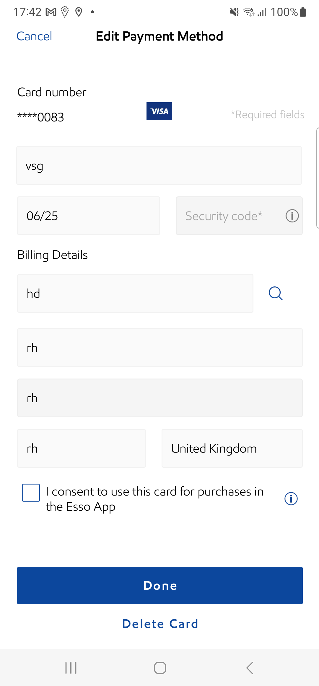And user scrolls down to Consent checkbox sectionStep skippedThen check consent checkboxStep skippedWhen tap on continue button in add payment screenStep skippedThen user verifies the updated pop up and clicks on ok butttonStep skippedFailCheck Whether System the email sent popup in forgot your password screenGiven user is on NLID screenWhen user taps on More button in tab barWhen user navigates to Account screenAnd user click the edit pin button with no mobile numberThen user verifies the Set Up pin screen with numeric keypadAnd user taps on forgot password in PINThen user verifies the forgot password screen with enter password btn cancel btn and continue btnAnd user taps on forget password linkThen user clicks on send button to re loginThen user verifies the popup message for relogin the ApplicationstepDefinitions.Hook.afterEachStep(io.cucumber.java.Scenario)982443fe-4386-4f1f-9e91-616c17dfb66e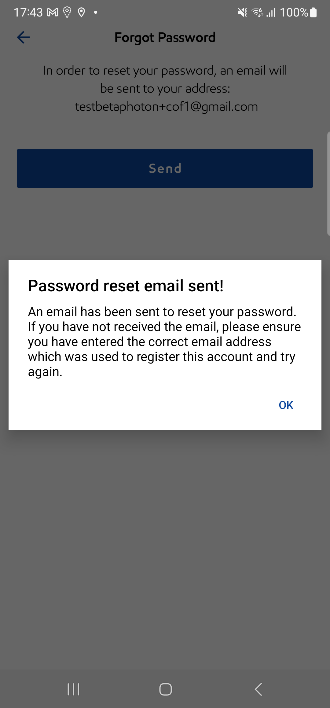And Verify that User is navigate back to NLID screenStep skippedPassCheck whether the system displays ‘select’ button as ‘Disabled’ until, user has made any selection from the search resultsWhen user log out from the app if logged inWhen user taps on register button from Login screenThen user should be navigated to Manual Register screenThen enter First NameThen enter Last NameThen enter "chibisakkrava.d+" Email addressThen enter passwordAnd confirm passwordThen click the check box for acceptWhen click on continue button from register screenWhen user tap on Skip buttonThen the system should display Skip warning popupWhen user tap on Skip anywayThen app to dismiss the popup and navigate the user to LID after reviewAnd user taps on More button in tab barWhen user navigates to Account screenThen user tap on add card button in accountWhen user taps on Credit Debit card in Add Payment Method screenWhen user is on setup PIN screenWhen user enters four digit PINThen user tap on continue button in enter PIN screenThen tap on ok button and close location copy textThen user lands on Add debit/credit card screenThen enter postal codeThen user verifies the search icon is enabledAnd user enters the postcode in the billing Details screenThen user clicks on enabled search iconThen user verifies if the select button as disabled until user has made any selectionFailCheck Whether System displays the tick mark for the selected address in postcode lookup screenWhen user log out from the app if logged inWhen user taps on register button from Login screenThen user should be navigated to Manual Register screenThen enter First NameThen enter Last NameThen enter "chibisakkrava.d+" Email addressThen enter passwordAnd confirm passwordThen click the check box for acceptWhen click on continue button from register screenWhen user tap on Skip buttonThen the system should display Skip warning popupWhen user tap on Skip anywayThen app to dismiss the popup and navigate the user to LID after reviewAnd user taps on More button in tab barstepDefinitions.Hook.afterEachStep(io.cucumber.java.Scenario)9e35f66d-05c8-48dc-89c6-b43361d999fd
When user navigates to Account screenStep skippedThen user tap on add card button in accountStep skippedWhen user taps on Credit Debit card in Add Payment Method screenStep skippedWhen user is on setup PIN screenStep skippedWhen user enters four digit PINStep skippedThen user tap on continue button in enter PIN screenStep skippedThen tap on ok button and close location copy textStep skippedThen user lands on Add debit/credit card screenStep skippedAnd tap cancel button in the Add card screen LIDStep skippedAnd tap cancel button in the Credit Debit card screenStep skippedAnd user clicks on more iconStep skippedWhen user navigates to Account screenStep skippedThen user clicks on esso pin editStep skippedAnd user sets the pin numberStep skippedThen user clicks on continueStep skippedThen user verifies the set new pin screenStep skippedFailCheck Whether System displays the unsupported card message in Billing details screen while entering wrong card numberWhen user log out from the app if logged inWhen user taps on register button from Login screenThen user should be navigated to Manual Register screenThen enter First NameThen enter Last NameThen enter "chibisakkrava.d+" Email addressThen enter passwordAnd confirm passwordThen click the check box for acceptWhen click on continue button from register screenWhen user tap on Skip buttonThen the system should display Skip warning popupWhen user tap on Skip anywayThen app to dismiss the popup and navigate the user to LID after reviewAnd user taps on More button in tab barWhen user navigates to Account screenThen user tap on add card button in accountWhen user taps on Credit Debit card in Add Payment Method screenWhen user is on setup PIN screenWhen user enters four digit PINThen user tap on continue button in enter PIN screenThen tap on ok button and close location copy textThen user lands on Add debit/credit card screenThen enter name of the cardThen enter "3123" card numberThen enter expiry dateThen enter CVVThen enter postal codeThen enter address line1Then enter Address line2Then enter cityThen check consent checkboxAnd tap on continue button in add payment screenThen user verifies the inline error msg for the invalid cardstepDefinitions.Hook.afterEachStep(io.cucumber.java.Scenario)3068f2aa-bc0c-4e47-b750-e50f95974500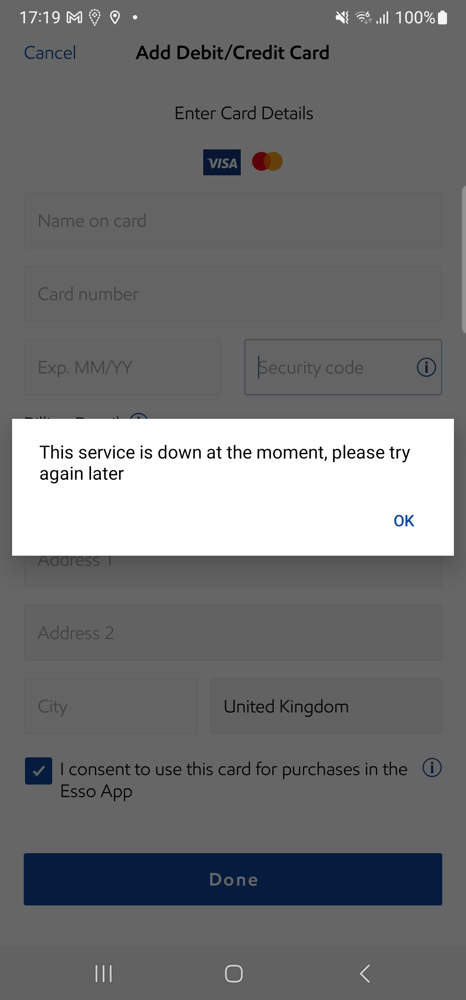PassCheck Whether System displays the entered card number in the Card number fieldWhen user log out from the app if logged inWhen user taps on register button from Login screenThen user should be navigated to Manual Register screenThen enter First NameThen enter Last NameThen enter "chibisakkrava.d+" Email addressThen enter passwordAnd confirm passwordThen click the check box for acceptWhen click on continue button from register screenWhen user tap on Skip buttonThen the system should display Skip warning popupWhen user tap on Skip anywayThen app to dismiss the popup and navigate the user to LID after reviewAnd user taps on More button in tab barWhen user navigates to Account screenThen user tap on add card button in accountWhen user taps on Credit Debit card in Add Payment Method screenWhen user is on setup PIN screenWhen user enters four digit PINThen user tap on continue button in enter PIN screenThen tap on ok button and close location copy textThen user lands on Add debit/credit card screenThen enter name of the cardThen enter "4012 0000 0601 2003 100" card numberThen verify whether the entered card number is displayedFailCheck whether System to validate the PINWhen user log out from the app if logged inWhen user taps on register button from Login screenThen user should be navigated to Manual Register screenThen enter First NameThen enter Last NameThen enter "chibisakkrava.d+" Email addressThen enter passwordAnd confirm passwordThen click the check box for acceptWhen click on continue button from register screenWhen user tap on Skip buttonThen the system should display Skip warning popupWhen user tap on Skip anywayThen app to dismiss the popup and navigate the user to LID after reviewAnd user taps on More button in tab barstepDefinitions.Hook.afterEachStep(io.cucumber.java.Scenario)63995059-c182-4ea1-94b1-e148c34729a5When user navigates to Account screenStep skippedWhen user able to see the text of set up Esso PINStep skippedThen user tap on Setup Esso PIN linkStep skippedThen user able to see the title Set up PINStep skippedThen user is on setup PIN screenStep skippedThen user should verify the text set the Esso PIN to unlock the app for fuellingStep skippedThen user clicks on continueStep skippedThen user verify the inline error messageStep skippedWhen user enters four digit PINStep skippedThen user tap on continue button in enter PIN screenStep skippedThen tap on ok button and close location copy textStep skippedPassCheck Whether System displays the set up pin through Account screenWhen user log out from the app if logged inWhen user taps on register button from Login screenThen user should be navigated to Manual Register screenThen enter First NameThen enter Last NameThen enter "chibisakkrava.d+" Email addressThen enter passwordAnd confirm passwordThen click the check box for acceptWhen click on continue button from register screenWhen user tap on Skip buttonThen the system should display Skip warning popupWhen user tap on Skip anywayThen app to dismiss the popup and navigate the user to LID after reviewAnd user taps on More button in tab barWhen user navigates to Account screenThen user tap on add card button in accountWhen user taps on Credit Debit card in Add Payment Method screenThen user able to see the title Set up PINThen user is on setup PIN screenThen user should verify the text set the Esso PIN to unlock the app for fuellingAnd Enter pinThen user verifies the popup and clicks on ok buttonPassCheck Whether System displays the Name on Card in Billing Details ScreenGiven user is on NLID screenAnd user taps on More button in tab barWhen user navigates to Account screenThen user tap on add card button in accountWhen user taps on Credit Debit card in Add Payment Method screenAnd verify elements displayed in Add Card ScreenAnd user enters the maximum characters in Card Name fieldThen verify whether the entered card name is displayedPassSystem to show inline error message when user does not enter ‘City’ and taps on Done : ”Please enter city”Given user is on NLID screenAnd user taps on More button in tab barWhen user navigates to Account screenThen user tap on add card button in accountWhen user taps on Credit Debit card in Add Payment Method screenThen enter expiry dateThen enter CVVThen enter postal codeThen enter address line1Then enter Address line2Then check consent checkboxAnd tap on continue button in add payment screenThen user should verify the inliner error "Please enter city"PassCheck whether System to allow user to add card on file link active.Given user is on NLID screenAnd user taps on More button in tab barWhen user navigates to Account screenThen user should verify the Add Card linkThen user tap on add card button in accountWhen user taps on Credit Debit card in Add Payment Method screenPassCheck Whether system ables to clear the Pin input field by clicking clear in keypadGiven user is on NLID screenAnd user taps on More button in tab barWhen user navigates to Account screenThen user click the edit pin button with no mobile numberThen user verifies the Set Up pin screen with numeric keypadAnd user sets the pin numberThen user verifies the entered pin as dotPassSystem to navigate user to Postcode Lookup screen, when clicked on search icon.Given user is on NLID screenAnd user taps on More button in tab barWhen user navigates to Account screenThen user tap on add card button in accountWhen user taps on Credit Debit card in Add Payment Method screenThen enter expiry dateThen enter CVVThen enter postal codeAnd tap on search iconThen verify user is navigated to postcode lookup screenThen user select postcode in the listThen user verifies the screen with screen title and back icon and search clear iconsAnd user verifies the list of address in postcode lookup screenPassSystem to navigate the user to Postcode Lookup’ search screen, if the user has entered the search criteria.Given user is on NLID screenAnd user taps on More button in tab barWhen user navigates to Account screenThen user tap on add card button in accountWhen user taps on Credit Debit card in Add Payment Method screenThen enter expiry dateThen enter CVVThen enter postal codeAnd tap on search iconThen verify user is navigated to postcode lookup screenPassCheck whether the User should see the following details for the‘Forgot Password’ Screen title: ‘Forgot Password’ ii. ‘Back’ buttoniii. CT screen label: In order to reset your password, an email will be sent to your address: (User email address) ‘SEND’ buttonGiven user is on NLID screenAnd user taps on More button in tab barWhen user navigates to Account screenThen user able to see the Esso PIN on Account ScreenThen user click the edit pin button with no mobile numberAnd User click the Forgot your PIN linkAnd User able to verify the CT labelThen user click the Forgot your pwd linkThen user should verify the title Forgot pwdThen user able to verify the forgot text and email addressThen user able to see the send buttonPassCheck Whether System System to display the Text Esso PIN on Accounts screen.And user log out from the app if logged inAnd user clicks on Login IconWhen I enter "regressioncredentials2" in login detailsAnd user taps login button in login screenGiven user is on NLID screenWhen user taps on More button in tab barWhen user navigates to Account screenAnd user verifies the Esso PIN under User Profile in Account ScreenPassCheck Whether System displays the Esso pin edit in Account screenGiven user is on NLID screenWhen user taps on More button in tab barWhen user navigates to Account screenAnd user verifies the Esso PIN under User Profile in Account ScreenThen verify whether the system displays the edit link near Esso PINThen User Tap Esso PIN Edit buttonWhen user enters four digit PINThen user tap on continue button in enter PIN screenThen verify the Edit Esso PIN ScreenPassSystem to show inline error messages if user has left the fields blank and taps on ‘Done’Given user is on NLID screenWhen user taps on More button in tab barWhen user navigates to Account screenThen user tap on add card button in accountWhen user taps on Credit Debit card in Add Payment Method screenAnd tap on continue button in add payment screenThen Verify the inline error message for Name On CardAnd Verify the inline error message for Card NumberAnd Verify the inline error message for Expiry DateAnd Verify the inline error message for Security CodeAnd Verify inline error message for post codeAnd Verify inline error message for Address from LIDAnd Verify the inline error message for city from LIDFailCheck whether System should allow the user to edit the card on file detailsGiven user is on NLID screenAnd user taps on More button in tab barWhen user navigates to Account screenAnd User Tap Edit card button with mobile numberThen verify whether the card details are prepopulated in the Edit payment screenAnd edit any of the fields under Edit Payment screenstepDefinitions.Hook.afterEachStep(io.cucumber.java.Scenario)bf4eb1e0-ee32-4c08-a523-e3512aca1b9e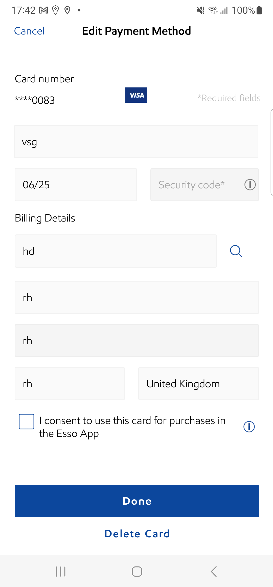And user scrolls down to Consent checkbox sectionStep skippedThen check consent checkboxStep skippedWhen tap on continue button in add payment screenStep skippedThen user verifies the updated pop up and clicks on ok butttonStep skippedFailCheck Whether System the email sent popup in forgot your password screenGiven user is on NLID screenWhen user taps on More button in tab barWhen user navigates to Account screenAnd user click the edit pin button with no mobile numberThen user verifies the Set Up pin screen with numeric keypadAnd user taps on forgot password in PINThen user verifies the forgot password screen with enter password btn cancel btn and continue btnAnd user taps on forget password linkThen user clicks on send button to re loginThen user verifies the popup message for relogin the ApplicationstepDefinitions.Hook.afterEachStep(io.cucumber.java.Scenario)982443fe-4386-4f1f-9e91-616c17dfb66e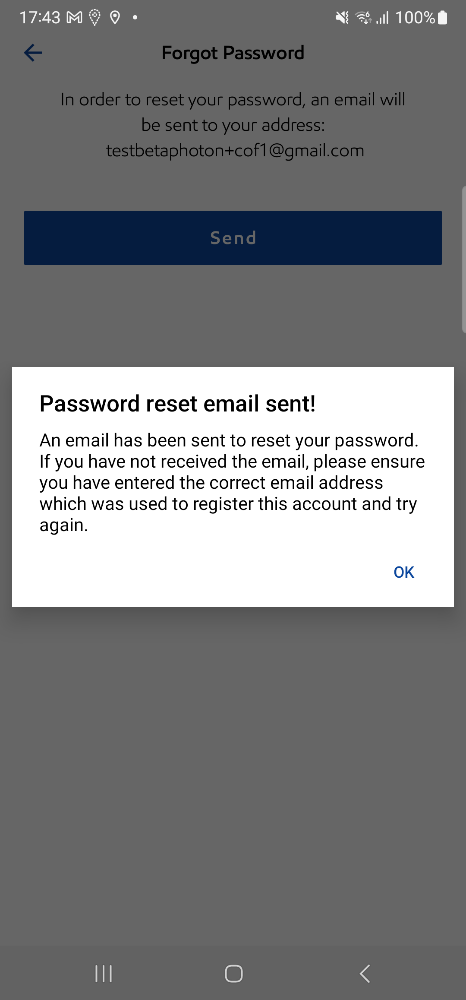And Verify that User is navigate back to NLID screenStep skippedPassCheck whether the system displays ‘select’ button as ‘Disabled’ until, user has made any selection from the search resultsWhen user log out from the app if logged inWhen user taps on register button from Login screenThen user should be navigated to Manual Register screenThen enter First NameThen enter Last NameThen enter "chibisakkrava.d+" Email addressThen enter passwordAnd confirm passwordThen click the check box for acceptWhen click on continue button from register screenWhen user tap on Skip buttonThen the system should display Skip warning popupWhen user tap on Skip anywayThen app to dismiss the popup and navigate the user to LID after reviewAnd user taps on More button in tab barWhen user navigates to Account screenThen user tap on add card button in accountWhen user taps on Credit Debit card in Add Payment Method screenWhen user is on setup PIN screenWhen user enters four digit PINThen user tap on continue button in enter PIN screenThen tap on ok button and close location copy textThen user lands on Add debit/credit card screenThen enter postal codeThen user verifies the search icon is enabledAnd user enters the postcode in the billing Details screenThen user clicks on enabled search iconThen user verifies if the select button as disabled until user has made any selectionFailCheck Whether System displays the tick mark for the selected address in postcode lookup screenWhen user log out from the app if logged inWhen user taps on register button from Login screenThen user should be navigated to Manual Register screenThen enter First NameThen enter Last NameThen enter "chibisakkrava.d+" Email addressThen enter passwordAnd confirm passwordThen click the check box for acceptWhen click on continue button from register screenWhen user tap on Skip buttonThen the system should display Skip warning popupWhen user tap on Skip anywayThen app to dismiss the popup and navigate the user to LID after reviewAnd user taps on More button in tab barstepDefinitions.Hook.afterEachStep(io.cucumber.java.Scenario)9e35f66d-05c8-48dc-89c6-b43361d999fd When user navigates to Account screenStep skippedThen user tap on add card button in accountStep skippedWhen user taps on Credit Debit card in Add Payment Method screenStep skippedWhen user is on setup PIN screenStep skippedWhen user enters four digit PINStep skippedThen user tap on continue button in enter PIN screenStep skippedThen tap on ok button and close location copy textStep skippedThen user lands on Add debit/credit card screenStep skippedThen enter postal codeStep skippedThen user verifies the search icon is enabledStep skippedThen user clicks on enabled search iconStep skippedAnd user clicks any one address in the belowStep skippedThen user verifies the tick mark in the selected AddressStep skippedFailCheck Whether System displays the entered text in postcode lookup screen is cleared by clicking clear iconWhen user log out from the app if logged inWhen user taps on register button from Login screenThen user should be navigated to Manual Register screenThen enter First NameThen enter Last NameThen enter "chibisakkrava.d+" Email addressThen enter passwordAnd confirm passwordThen click the check box for acceptWhen click on continue button from register screenWhen user tap on Skip buttonThen the system should display Skip warning popupWhen user tap on Skip anywayThen app to dismiss the popup and navigate the user to LID after reviewAnd user taps on More button in tab barstepDefinitions.Hook.afterEachStep(io.cucumber.java.Scenario)c9e6db46-4209-4c0e-a6f4-e91eda5fe356
When user navigates to Account screenStep skippedThen user tap on add card button in accountStep skippedWhen user taps on Credit Debit card in Add Payment Method screenStep skippedWhen user is on setup PIN screenStep skippedWhen user enters four digit PINStep skippedThen user tap on continue button in enter PIN screenStep skippedThen tap on ok button and close location copy textStep skippedThen user lands on Add debit/credit card screenStep skippedThen enter postal codeStep skippedThen user verifies the search icon is enabledStep skippedThen user clicks on enabled search iconStep skippedAnd user clicks any one address in the belowStep skippedThen user verifies the tick mark in the selected AddressStep skippedFailCheck Whether System displays the entered text in postcode lookup screen is cleared by clicking clear iconWhen user log out from the app if logged inWhen user taps on register button from Login screenThen user should be navigated to Manual Register screenThen enter First NameThen enter Last NameThen enter "chibisakkrava.d+" Email addressThen enter passwordAnd confirm passwordThen click the check box for acceptWhen click on continue button from register screenWhen user tap on Skip buttonThen the system should display Skip warning popupWhen user tap on Skip anywayThen app to dismiss the popup and navigate the user to LID after reviewAnd user taps on More button in tab barstepDefinitions.Hook.afterEachStep(io.cucumber.java.Scenario)c9e6db46-4209-4c0e-a6f4-e91eda5fe356 When user navigates to Account screenStep skippedThen user tap on add card button in accountStep skippedWhen user taps on Credit Debit card in Add Payment Method screenStep skippedWhen user is on setup PIN screenStep skippedWhen user enters four digit PINStep skippedThen user tap on continue button in enter PIN screenStep skippedThen tap on ok button and close location copy textStep skippedThen user lands on Add debit/credit card screenStep skippedThen enter postal codeStep skippedThen user verifies the search icon is enabledStep skippedThen user clicks on enabled search iconStep skippedAnd user clicks on clear icon in the postcode lookup screenStep skippedThen verify the search text is clearedStep skippedFailCheck Whether System displays the inline Error message for Name on the card field in Billing Details ScreenWhen user log out from the app if logged inWhen user taps on register button from Login screenThen user should be navigated to Manual Register screenThen enter First NameThen enter Last NameThen enter "chibisakkrava.d+" Email addressThen enter passwordAnd confirm passwordThen click the check box for acceptWhen click on continue button from register screenWhen user tap on Skip buttonThen the system should display Skip warning popupWhen user tap on Skip anywayThen app to dismiss the popup and navigate the user to LID after reviewAnd user taps on More button in tab barstepDefinitions.Hook.afterEachStep(io.cucumber.java.Scenario)fe6dab9c-4ae6-47e5-9b59-08f3dd3f03f8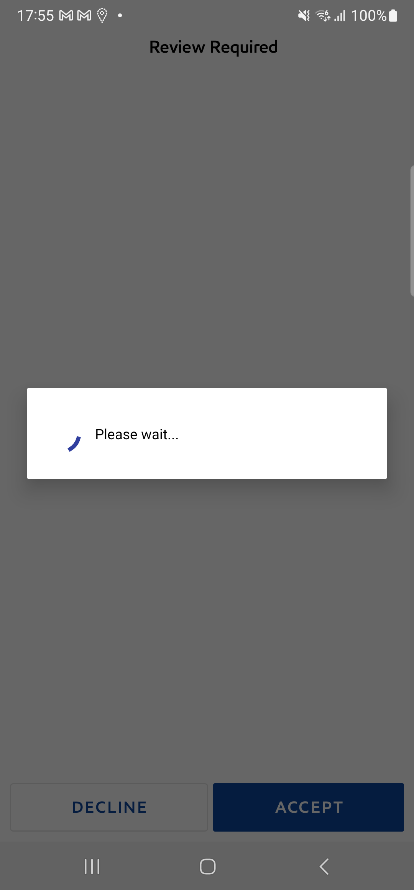When user navigates to Account screenStep skippedThen user tap on add card button in accountStep skippedWhen user taps on Credit Debit card in Add Payment Method screenStep skippedWhen user is on setup PIN screenStep skippedWhen user enters four digit PINStep skippedThen user tap on continue button in enter PIN screenStep skippedThen tap on ok button and close location copy textStep skippedThen user lands on Add debit/credit card screenStep skippedThen enter "5520 9050 1002 2051" card numberStep skippedThen enter expiry dateStep skippedThen enter CVVStep skippedThen enter postal codeStep skippedThen enter address line1Step skippedThen enter Address line2Step skippedThen enter cityStep skippedThen check consent checkboxStep skippedAnd tap on continue button in add payment screenStep skippedAnd user verifies the inline error message for name on the card fieldStep skippedFailCheck whether the System performs displays the address when user has selected an option and tapped on ‘select’ button.When user log out from the app if logged instepDefinitions.Hook.afterEachStep(io.cucumber.java.Scenario)d0bc60d2-a20b-4f6e-9a7b-6cba4bade444
When user navigates to Account screenStep skippedThen user tap on add card button in accountStep skippedWhen user taps on Credit Debit card in Add Payment Method screenStep skippedWhen user is on setup PIN screenStep skippedWhen user enters four digit PINStep skippedThen user tap on continue button in enter PIN screenStep skippedThen tap on ok button and close location copy textStep skippedThen user lands on Add debit/credit card screenStep skippedThen enter postal codeStep skippedThen user verifies the search icon is enabledStep skippedThen user clicks on enabled search iconStep skippedAnd user clicks on clear icon in the postcode lookup screenStep skippedThen verify the search text is clearedStep skippedFailCheck Whether System displays the inline Error message for Name on the card field in Billing Details ScreenWhen user log out from the app if logged inWhen user taps on register button from Login screenThen user should be navigated to Manual Register screenThen enter First NameThen enter Last NameThen enter "chibisakkrava.d+" Email addressThen enter passwordAnd confirm passwordThen click the check box for acceptWhen click on continue button from register screenWhen user tap on Skip buttonThen the system should display Skip warning popupWhen user tap on Skip anywayThen app to dismiss the popup and navigate the user to LID after reviewAnd user taps on More button in tab barstepDefinitions.Hook.afterEachStep(io.cucumber.java.Scenario)fe6dab9c-4ae6-47e5-9b59-08f3dd3f03f8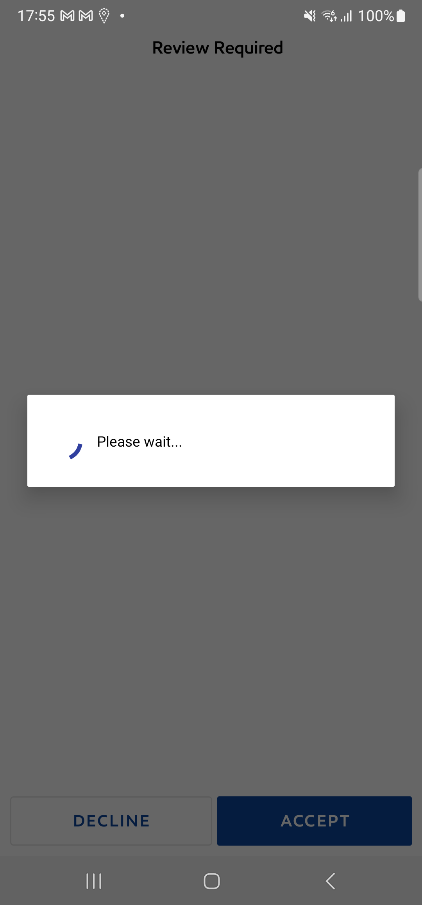When user navigates to Account screenStep skippedThen user tap on add card button in accountStep skippedWhen user taps on Credit Debit card in Add Payment Method screenStep skippedWhen user is on setup PIN screenStep skippedWhen user enters four digit PINStep skippedThen user tap on continue button in enter PIN screenStep skippedThen tap on ok button and close location copy textStep skippedThen user lands on Add debit/credit card screenStep skippedThen enter "5520 9050 1002 2051" card numberStep skippedThen enter expiry dateStep skippedThen enter CVVStep skippedThen enter postal codeStep skippedThen enter address line1Step skippedThen enter Address line2Step skippedThen enter cityStep skippedThen check consent checkboxStep skippedAnd tap on continue button in add payment screenStep skippedAnd user verifies the inline error message for name on the card fieldStep skippedFailCheck whether the System performs displays the address when user has selected an option and tapped on ‘select’ button.When user log out from the app if logged instepDefinitions.Hook.afterEachStep(io.cucumber.java.Scenario)d0bc60d2-a20b-4f6e-9a7b-6cba4bade444 When user taps on register button from Login screenStep skippedThen user should be navigated to Manual Register screenStep skippedThen enter First NameStep skippedThen enter Last NameStep skippedThen enter "chibisakkrava.d+" Email addressStep skippedThen enter passwordStep skippedAnd confirm passwordStep skippedThen click the check box for acceptStep skippedWhen click on continue button from register screenStep skippedWhen user tap on Skip buttonStep skippedThen the system should display Skip warning popupStep skippedWhen user tap on Skip anywayStep skippedThen app to dismiss the popup and navigate the user to LID after reviewStep skippedAnd user taps on More button in tab barStep skippedWhen user navigates to Account screenStep skippedThen user tap on add card button in accountStep skippedWhen user taps on Credit Debit card in Add Payment Method screenStep skippedWhen user is on setup PIN screenStep skippedWhen user enters four digit PINStep skippedThen user tap on continue button in enter PIN screenStep skippedThen tap on ok button and close location copy textStep skippedThen user lands on Add debit/credit card screenStep skippedThen enter postal codeStep skippedThen user verifies the search icon is enabledStep skippedThen user clicks on enabled search iconStep skippedAnd user clicks any one address in the belowStep skippedThen user verifies the tick mark in the selected AddressStep skippedThen user taps select optionStep skippedThen check if the address is auto filled in the address fields in billing sectionStep skippedFailVerify if System navigate the user to logged-in dashboard from the Add Nectar Card screen after 300 seconds of inactivityWhen user log out from the app if logged inAnd user clicks on Login IconWhen I enter "FrictEssoPsword" in login detailsAnd user taps login button in login screenAnd user taps on More button in tab barWhen user navigates to Account screenAnd delete added nectar card if existsWhen user taps on fuel icon and navigate to LID screenWhen user taps on start button in LIDstepDefinitions.Hook.afterEachStep(io.cucumber.java.Scenario)c655cee8-6cb4-48e3-a35e-8f6f0cbfa2f8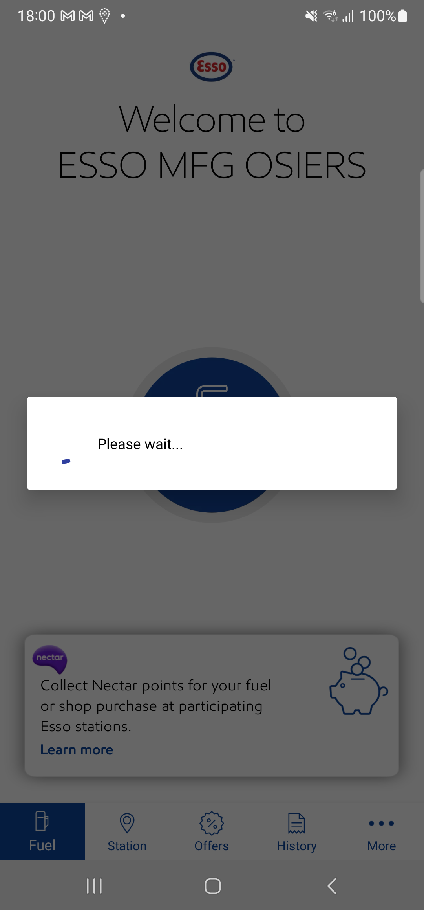And user is navigated to Select your pump screenStep skippedAnd user selects pump number "1" to start fuellingStep skippedAnd user selects the pump from 'Select your Pump' page and taps on continue buttonStep skippedAnd user verify the MFA screenStep skippedWhen user tap on Continue button in MFA screenStep skippedThen the user is navigated to Confirm payment screenStep skippedAnd Click on Change payment linkStep skippedAnd user verifies Payment details screen before adding nectar cardStep skippedAnd user adds the Nectar card details by clicking the Add nectar card in Payment details screenStep skippedThen user is navigated to add nectar screenStep skippedThen Verify user navigated back to LID screenStep skippedFailVerify if System navigate the user to logged-in dashboard from the Change Payment Details screen after 300 seconds of inactivityGiven user is on NLID screenWhen user taps on start button in LIDAnd user is navigated to Select your pump screenAnd user selects pump number "1" to start fuellingAnd user selects the pump from 'Select your Pump' page and taps on continue buttonAnd user verify the MFA screenWhen user tap on Continue button in MFA screenThen the user is navigated to Confirm payment screenAnd Click on Change payment linkAnd user verifies Payment details screen before adding nectar cardAnd user adds the Nectar card details by clicking the Add nectar card in Payment details screenThen user is navigated to add nectar screenAnd user taps on scan barcodeThen Verify user navigated back to LID screenstepDefinitions.Hook.afterEachStep(io.cucumber.java.Scenario)efa6ed08-78c7-4b85-8ad0-91530bd822de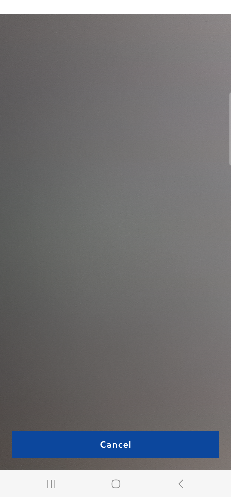PassCheck whether the system to navigate the user to Enter PIN and user should see following details for Enter PIN screenGiven user is on NLID screenWhen user taps on start button in LIDAnd user is navigated to Select your pump screenAnd user selects pump number "1" to start fuellingAnd user selects the pump from 'Select your Pump' page and taps on continue buttonWhen user tap on Continue button in MFA screenThen the user is navigated to Confirm payment screenAnd user confirms card paymentAnd user able to see the cancel button in the enter pinAnd user enter the Enter PIN numberThen user able to see the screen label for Enter your Esso PIN to Authorize PaymentAnd User click the Forgot your PIN linkPassCheck whether system to navigate user back to LID screen tapping on ‘Cancel’ buttonGiven user is on NLID screenWhen user taps on start button in LIDAnd user is navigated to Select your pump screenAnd user selects pump number "1" to start fuellingAnd user selects the pump from 'Select your Pump' page and taps on continue buttonWhen user tap on Continue button in MFA screenThen the user is navigated to Confirm payment screenAnd user confirms card paymentThen user land on enter PIN screenAnd user able to see the cancel button in the enter pinThen user should verify navigate to Enter password ScreenAnd user tap the cancel buttonThen the user is navigated to Confirm payment screenPasswhether the system to navigate the user to Enter Password screen andGiven user is on NLID screenWhen user taps on start button in LIDAnd user is navigated to Select your pump screenAnd user selects pump number "1" to start fuellingAnd user selects the pump from 'Select your Pump' page and taps on continue buttonAnd user verify the MFA screenWhen user tap on Continue button in MFA screenThen the user is navigated to Confirm payment screenAnd user confirms card paymentThen user land on enter PIN screenThen user click forgot buttonAnd user able see the Enter password textAnd user able to view the passwordPassCheck whether System to display ‘Edit’ button if card is addedGiven user is on NLID screenAnd user clicks on more iconThen user clicks on AccountAnd verify the card numberAnd verify the card number is maskedAnd user enter the edit buttonAnd user able to see the edit payment methodAnd tap cancel button in the Add card screen LIDFailCheck whether system to navigate user to ‘Forgot Password’ screen when user tap on ‘Forgot your password?’ linkGiven user is on NLID screenWhen user taps on start button in LIDAnd user is navigated to Select your pump screenAnd user selects pump number "1" to start fuellingAnd user selects the pump from 'Select your Pump' page and taps on continue buttonWhen user tap on Continue button in MFA screenThen the user is navigated to Confirm payment screenAnd user confirms card paymentThen user click forgot buttonAnd user able see the Enter password textWhen user click the Forgot your pwd linkThen user should verify the CT label and clicks on send buttonAnd user verifies the popup message for relogin the ApplicationstepDefinitions.Hook.afterEachStep(io.cucumber.java.Scenario)920f4c50-8e05-4fc3-9fc8-0ceff1f48996Then user verifies the app redirects back to NLIDStep skippedPassCheck Whether System displays Visa and MasterCard while clicking i iconGiven user log out from the app if logged inWhen user taps on register button from Login screenThen user should be navigated to Manual Register screenThen enter First NameThen enter Last NameThen enter Email address as "Shruthi.s1"Then enter passwordAnd confirm passwordThen click the check box for acceptWhen click on continue button from register screenWhen user tap on Skip buttonThen the system should display Skip warning popupWhen user tap on Skip anywayThen app to dismiss the popup and navigate the user to LID after reviewAnd user taps on the complete profileThen user taps on add payment methodWhen user taps on Credit Debit card in Add Payment Method screenThen user verifies the Set Up pin screen with numeric keypadAnd Enter pinThen user verifies the popup and clicks on ok buttonAnd user clicks on i icon in security codeThen user verifies the Visa and MasterCard in pop upAnd user is able to dismiss the pop upPassCheck Whether System displays the inline error messgae for Security code in card details screenGiven user is on NLID screenAnd user taps on the complete profileThen user taps on add payment methodWhen user taps on Credit Debit card in Add Payment Method screenAnd user enters the card details except "security code"Then user clicks on continue button in Card screen without "security code"Then user verifies the inline error message for security codePassCheck Whether System displays the inline error message for expiry date in Credit Debit card screenGiven user is on NLID screenAnd user taps on the complete profileThen user taps on add payment methodWhen user taps on Credit Debit card in Add Payment Method screenAnd user enters the card details except "expiry date"Then user clicks on continue button in Card screen without "expiry date"Then user verifies the inline error message for expiry datePassCheck whether system to navigate user to ‘Forgot Password’ screen when user tap on ‘Forgot your password?’ linkGiven user log out from the app if logged inWhen user clicks on Login IconWhen I enter "FrictEssoPsword" in login detailsAnd user taps login button in login screenAnd user is on NLID screenAnd user taps on More button in tab barAnd user navigates to Account screenAnd user click the edit pin button with no mobile numberAnd User click the Forgot your PIN linkAnd User able to verify the CT labelThen user should verify the cancel buttonThen user click the Forgot your pwd linkThen user should verify the title Forgot pwdThen user verify the back buttonPassCheck whether User should see only the last 4 digits of the cardAnd user is on NLID screenAnd user taps on More button in tab barWhen user navigates to Account screenThen user should verify the card last four digitFailCheck whether System to display the logo of the cardGiven user is on NLID screenAnd user taps on More button in tab barWhen user navigates to Account screenThen user should verify the card last four digitThen user should able to see the logo of the cardstepDefinitions.Hook.afterEachStep(io.cucumber.java.Scenario)5f9af34f-8b1c-4c87-b0e1-06e35b056860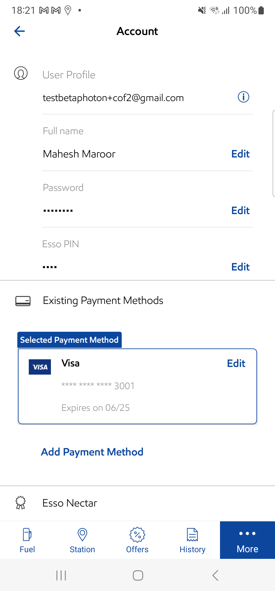FailCheck whether system to send reset password email and user should see a promptAnd user is on NLID screenWhen user taps on start button in LIDAnd user is navigated to Select your pump screenAnd user selects pump number "1" to start fuellingAnd user selects the pump from 'Select your Pump' page and taps on continue buttonWhen user tap on Continue button in MFA screenThen the user is navigated to Confirm payment screenAnd user confirms card paymentWhen user taps on Forgot your pin linkThen Verify user is navigated to Enter Password screenWhen user taps on forget password linkThen verify user is navigated to Forgot Password screenWhen user taps on send button in Forgot Password ScreenThen verify the prompt message and tap on Ok buttonstepDefinitions.Hook.afterEachStep(io.cucumber.java.Scenario)cc7ccd7f-8498-4c89-9178-55499ee828aeThen user verifies the app redirects back to NLIDStep skippedPassSystem to display ‘Search’ as an iconGiven user log out from the app if logged inWhen user taps on register button from Login screenThen user should be navigated to Manual Register screenThen enter First NameThen enter Last NameThen enter "chibisakkrava.d+" Email addressThen enter passwordAnd confirm passwordThen click the check box for acceptWhen click on continue button from register screenWhen user tap on Skip buttonThen the system should display Skip warning popupWhen user tap on Skip anywayThen app to dismiss the popup and navigate the user to LID after reviewGiven user is on NLID screenAnd user taps on More button in tab barWhen user navigates to Account screenThen user tap on add card button in accountWhen user taps on Credit Debit card in Add Payment Method screenAnd Enter pinThen user verifies the popup and clicks on ok buttonAnd user able to see and verify the search iconPassVerify whether the inline error message for postcode fieldGiven user is on NLID screenAnd user taps on More button in tab barWhen user navigates to Account screenThen user tap on add card button in accountWhen user taps on Credit Debit card in Add Payment Method screenAnd user enters the card details except "post code"Then user clicks on continue button in Card screenThen user should able to view inline error message without enter the postcodePassCheck Whether System displays a popup when the consent checkbox is not clicked in the Add Debit/Credit Card ScreenGiven user is on NLID screenAnd user taps on the complete profileWhen user taps on add payment methodWhen user taps on Credit Debit card in Add Payment Method screenAnd user enters the card details except "consent checkbox"And user scrolls down to Consent checkbox sectionThen user clicks on continue button in Card screen without "consent checkbox"Then user verifies the popup message for checkboxAnd user clicks on ok in the popup messagePassCheck Whether system displays the input field for postcode and i icon in card details screenGiven user is on NLID screenAnd user taps on the complete profileThen user taps on add payment methodWhen user taps on Credit Debit card in Add Payment Method screenAnd user clicks on postcode fieldThen user verifies the postcode field as input fieldPassCheck Whether System displays Enter password screen while clicking Forgot your pinGiven user is on NLID screenAnd user taps on More button in tab barThen user clicks on AccountThen user click the edit pin button with no mobile numberAnd user taps on forgot password in PINThen user verifies the forgot password screen with enter password btn cancel btn and continue btnPassCheck Whether System displays the name on card field text or input field in Add Debit/Credit card screenGiven user is on NLID screenAnd user taps on the complete profileWhen user taps on add payment methodWhen user taps on Credit Debit card in Add Payment Method screenThen user verifies the Billing address i icon in Card details screenThen user verifies the default input text for the Card Name under Billing Details SectionPassCheck Whether System displays the copy text next to the i info iconGiven user is on NLID screenAnd user taps on the complete profileWhen user taps on add payment methodWhen user taps on Credit Debit card in Add Payment Method screenAnd user verifies the Billing address i icon in Card details screenWhen user taps on the consent info iconAnd verify whether the system displays the consent copy text msgPassCheck Whether System displays the entered text in first Address line Billing details screenGiven user is on NLID screenAnd user taps on the complete profileThen user taps on add payment methodWhen user taps on Credit Debit card in Add Payment Method screenThen user verifies the Billing address i icon in Card details screenAnd user taps on First Address field and verifies keypadThen user enters the fifty characters in Address fieldAnd the field should display the fifty characters in first address fieldPassCheck Whether System able to enter fifty characters in second Address fieldGiven user is on NLID screenAnd user taps on the complete profileThen user taps on add payment methodWhen user taps on Credit Debit card in Add Payment Method screenThen user verifies the Billing address i icon in Card details screenAnd user taps on second Address FieldThen user enters the fifty characters in second Address FieldAnd the field should display the fifty characters in second address fieldPassCheck Whether System displays the default input text for the Address Line 1 field under Billing Details section as'Address1'Given user is on NLID screenAnd user taps on the complete profileWhen user taps on add payment methodWhen user taps on Credit Debit card in Add Payment Method screenThen user verifies the default text in the first Address FieldPassCheck Whether System displays an inline error message if the Address is not entered and submittedGiven user is on NLID screenAnd user taps on the complete profileWhen user taps on add payment methodWhen user taps on Credit Debit card in Add Payment Method screenAnd user enters the card details except "billing address"And user clicks on continue button in Card screenAnd user verifies the inline error message for Address FieldPasssystem to display ‘Billing Details’ as section headerGiven user is on NLID screenAnd user taps on More button in tab barWhen user navigates to Account screenThen user tap on add card button in accountWhen user taps on Credit Debit card in Add Payment Method screenThen user verifies the Billing address in the screenPassCheck Whether System displays the Billing address i icon in Card details screenGiven user is on NLID screenAnd user taps on the complete profileWhen user taps on add payment methodWhen user taps on Credit Debit card in Add Payment Method screenThen user verifies the Billing address i icon in Card details screenPassCheck Whether System displays the Checkbox for consent and Touch ID authorization in the Billing Details fieldGiven user is on NLID screenAnd user taps on the complete profileWhen user taps on add payment methodWhen user taps on Credit Debit card in Add Payment Method screenThen enter name of the cardThen enter "5232 0500 0019 0003" card numberThen enter expiry dateThen enter CVVThen enter postal codeThen enter address line1Then enter Address line2Then enter cityThen user verifies the Check box for consent and AuthorizationPassCheck whether the system displays the Checkbox and the Copy textGiven user is on NLID screenAnd user taps on the complete profileWhen user taps on add payment methodWhen user taps on Credit Debit card in Add Payment Method screenThen enter name of the cardThen enter "5232 0500 0019 0003" card numberThen enter expiry dateThen enter CVVThen enter postal codeThen enter address line1Then enter Address line2Then enter cityThen check consent checkboxThen check consent checkbox and verifies the copy text displayedPassCheck Whether System displays the checkbox for consent to use the card in Billing Details ScreenGiven user is on NLID screenAnd user taps on the complete profileThen user taps on add payment methodWhen user taps on Credit Debit card in Add Payment Method screenThen user verifies the Billing address i icon in Card details screenThen enter name of the cardThen enter "5232 0500 0019 0003" card numberThen enter expiry dateThen enter CVVThen enter postal codeThen enter address line1Then enter Address line2Then enter cityThen user verifies and clicks the i icon next to consent checkboxAnd verify whether the system displays the consent copy text msgPassInability of the system to display past month and year as expiry date in the pickerGiven user is on NLID screenAnd user taps on the complete profileThen user taps on add payment methodWhen user taps on Credit Debit card in Add Payment Method screenAnd click on Card Exp Date field in Add Card screenThen Verify the Current Date and Current month are displayedPassCheck Whether System enables the search icon for the postcode after entering the number in post codeGiven user is on NLID screenAnd user taps on the complete profileWhen user taps on add payment methodWhen user taps on Credit Debit card in Add Payment Method screenThen user verifies the Billing address i icon in Card details screenAnd user clicks on postcode fieldAnd user enters the postcode in the billing Details screenThen user verifies the search icon is enabledPassCheck Whether System to disable ‘Search’ option if user has not entered any value in 'Postcode’ fieldGiven user is on NLID screenAnd user taps on the complete profileWhen user taps on add payment methodWhen user taps on Credit Debit card in Add Payment Method screenAnd user clicks on postcode fieldThen user verifies the search icon is disabledPassCheck Whether System displays the screen with screen title and back icon and search clear iconsGiven user is on NLID screenAnd user taps on the complete profileWhen user taps on add payment methodWhen user taps on Credit Debit card in Add Payment Method screenThen user verifies the Billing address i icon in Card details screenAnd user clicks on postcode fieldThen user verifies the search icon is enabledAnd user enters the postcode in the billing Details screenThen user clicks on enabled search iconThen user verifies the screen with screen title and back icon and search clear iconsFailCheck whether System to display CT as a prompt Message: Esso PIN added successfully., Button: OKWhen user log out from the app if logged inWhen user taps on register button from Login screenThen user should be navigated to Manual Register screenThen enter First NameThen enter Last NameThen enter "chibisakkrava.d+" Email addressThen enter passwordAnd confirm passwordThen click the check box for acceptWhen click on continue button from register screenWhen user tap on Skip buttonstepDefinitions.Hook.afterEachStep(io.cucumber.java.Scenario)c61b4240-37f5-4823-98b9-6d0bf4fc99da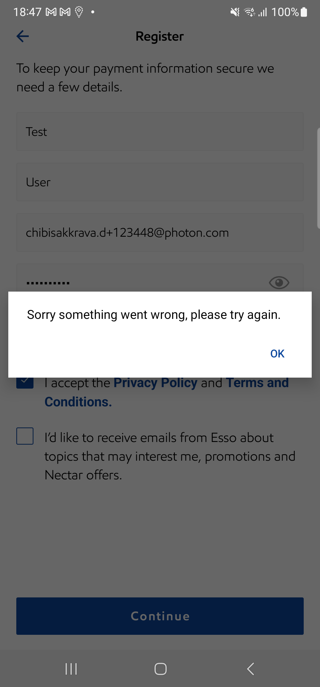Then the system should display Skip warning popupStep skippedWhen user tap on Skip anywayStep skippedThen app to dismiss the popup and navigate the user to LID after reviewStep skippedAnd user taps on More button in tab barStep skippedWhen user navigates to Account screenStep skippedThen verify Esso PIN section on accounts pageStep skippedThen user taps on Set up Esso PIN linkStep skippedWhen user is on setup PIN screenStep skippedWhen user enters four digit PINStep skippedThen user tap on continue button in enter PIN screenStep skippedThen user verifies the popup and clicks on ok buttonStep skippedFailApp should perform 3DS verification for Card Onboarding confirmationWhen user log out from the app if logged inWhen user taps on register button from Login screenThen user should be navigated to Manual Register screenThen enter First NameThen enter Last NameThen enter "roshini.narayanan+" Email addressThen enter passwordAnd confirm passwordThen click the check box for acceptWhen click on continue button from register screenWhen user tap on Skip buttonThen the system should display Skip warning popupWhen user tap on Skip anywayThen app to dismiss the popup and navigate the user to LID after reviewAnd user taps on More button in tab barWhen user navigates to Account screenThen user tap on add card button in accountWhen user taps on Credit Debit card in Add Payment Method screenWhen user is on setup PIN screenWhen user enters four digit PINThen user tap on continue button in enter PIN screenThen tap on ok button and close location copy textThen user lands on Add debit/credit card screenThen enter name of the cardThen enter "5520 9050 1002 2051" card numberThen enter expiry dateThen enter CVVThen enter postal codeThen enter address line1Then enter Address line2Then enter cityThen check consent checkboxAnd tap on continue button in add payment screenThen validate identity confirmation titleThen validate if user is on OTP password screenstepDefinitions.Hook.afterEachStep(io.cucumber.java.Scenario)f19f8783-620a-41c1-a6ab-9e9f1c140bdd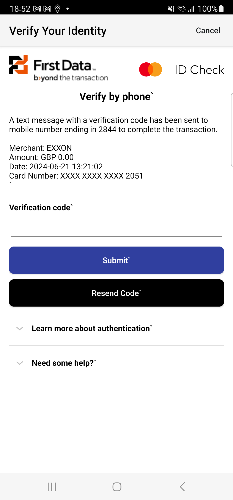PassCheck Whether System displays the keypad for set pin screenGiven user log out from the app if logged inWhen user taps on register button from Login screenThen user should be navigated to Manual Register screenThen enter First NameThen enter Last NameThen enter Email address as "Shruthi.s1"Then enter passwordAnd confirm passwordThen click the check box for acceptWhen click on continue button from register screenWhen user tap on Skip buttonThen the system should display Skip warning popupWhen user tap on Skip anywayThen app to dismiss the popup and navigate the user to LID after reviewGiven user is on NLID screenAnd user taps on the complete profileThen user taps on add payment methodWhen user taps on Credit Debit card in Add Payment Method screenThen user verifies the Set Up pin screen with numeric keypadAnd user sets the pin for firstThen user verifies the first pin displayed as dot
When user taps on register button from Login screenStep skippedThen user should be navigated to Manual Register screenStep skippedThen enter First NameStep skippedThen enter Last NameStep skippedThen enter "chibisakkrava.d+" Email addressStep skippedThen enter passwordStep skippedAnd confirm passwordStep skippedThen click the check box for acceptStep skippedWhen click on continue button from register screenStep skippedWhen user tap on Skip buttonStep skippedThen the system should display Skip warning popupStep skippedWhen user tap on Skip anywayStep skippedThen app to dismiss the popup and navigate the user to LID after reviewStep skippedAnd user taps on More button in tab barStep skippedWhen user navigates to Account screenStep skippedThen user tap on add card button in accountStep skippedWhen user taps on Credit Debit card in Add Payment Method screenStep skippedWhen user is on setup PIN screenStep skippedWhen user enters four digit PINStep skippedThen user tap on continue button in enter PIN screenStep skippedThen tap on ok button and close location copy textStep skippedThen user lands on Add debit/credit card screenStep skippedThen enter postal codeStep skippedThen user verifies the search icon is enabledStep skippedThen user clicks on enabled search iconStep skippedAnd user clicks any one address in the belowStep skippedThen user verifies the tick mark in the selected AddressStep skippedThen user taps select optionStep skippedThen check if the address is auto filled in the address fields in billing sectionStep skippedFailVerify if System navigate the user to logged-in dashboard from the Add Nectar Card screen after 300 seconds of inactivityWhen user log out from the app if logged inAnd user clicks on Login IconWhen I enter "FrictEssoPsword" in login detailsAnd user taps login button in login screenAnd user taps on More button in tab barWhen user navigates to Account screenAnd delete added nectar card if existsWhen user taps on fuel icon and navigate to LID screenWhen user taps on start button in LIDstepDefinitions.Hook.afterEachStep(io.cucumber.java.Scenario)c655cee8-6cb4-48e3-a35e-8f6f0cbfa2f8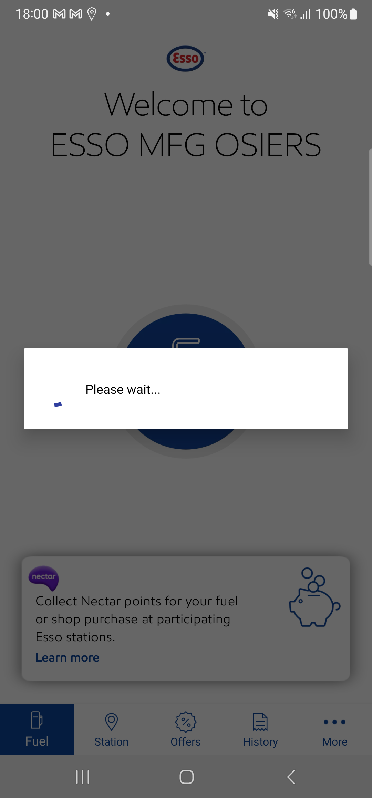And user is navigated to Select your pump screenStep skippedAnd user selects pump number "1" to start fuellingStep skippedAnd user selects the pump from 'Select your Pump' page and taps on continue buttonStep skippedAnd user verify the MFA screenStep skippedWhen user tap on Continue button in MFA screenStep skippedThen the user is navigated to Confirm payment screenStep skippedAnd Click on Change payment linkStep skippedAnd user verifies Payment details screen before adding nectar cardStep skippedAnd user adds the Nectar card details by clicking the Add nectar card in Payment details screenStep skippedThen user is navigated to add nectar screenStep skippedThen Verify user navigated back to LID screenStep skippedFailVerify if System navigate the user to logged-in dashboard from the Change Payment Details screen after 300 seconds of inactivityGiven user is on NLID screenWhen user taps on start button in LIDAnd user is navigated to Select your pump screenAnd user selects pump number "1" to start fuellingAnd user selects the pump from 'Select your Pump' page and taps on continue buttonAnd user verify the MFA screenWhen user tap on Continue button in MFA screenThen the user is navigated to Confirm payment screenAnd Click on Change payment linkAnd user verifies Payment details screen before adding nectar cardAnd user adds the Nectar card details by clicking the Add nectar card in Payment details screenThen user is navigated to add nectar screenAnd user taps on scan barcodeThen Verify user navigated back to LID screenstepDefinitions.Hook.afterEachStep(io.cucumber.java.Scenario)efa6ed08-78c7-4b85-8ad0-91530bd822de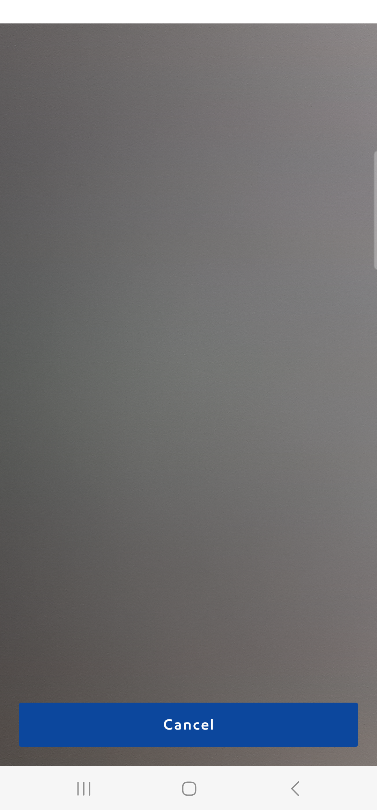PassCheck whether the system to navigate the user to Enter PIN and user should see following details for Enter PIN screenGiven user is on NLID screenWhen user taps on start button in LIDAnd user is navigated to Select your pump screenAnd user selects pump number "1" to start fuellingAnd user selects the pump from 'Select your Pump' page and taps on continue buttonWhen user tap on Continue button in MFA screenThen the user is navigated to Confirm payment screenAnd user confirms card paymentAnd user able to see the cancel button in the enter pinAnd user enter the Enter PIN numberThen user able to see the screen label for Enter your Esso PIN to Authorize PaymentAnd User click the Forgot your PIN linkPassCheck whether system to navigate user back to LID screen tapping on ‘Cancel’ buttonGiven user is on NLID screenWhen user taps on start button in LIDAnd user is navigated to Select your pump screenAnd user selects pump number "1" to start fuellingAnd user selects the pump from 'Select your Pump' page and taps on continue buttonWhen user tap on Continue button in MFA screenThen the user is navigated to Confirm payment screenAnd user confirms card paymentThen user land on enter PIN screenAnd user able to see the cancel button in the enter pinThen user should verify navigate to Enter password ScreenAnd user tap the cancel buttonThen the user is navigated to Confirm payment screenPasswhether the system to navigate the user to Enter Password screen andGiven user is on NLID screenWhen user taps on start button in LIDAnd user is navigated to Select your pump screenAnd user selects pump number "1" to start fuellingAnd user selects the pump from 'Select your Pump' page and taps on continue buttonAnd user verify the MFA screenWhen user tap on Continue button in MFA screenThen the user is navigated to Confirm payment screenAnd user confirms card paymentThen user land on enter PIN screenThen user click forgot buttonAnd user able see the Enter password textAnd user able to view the passwordPassCheck whether System to display ‘Edit’ button if card is addedGiven user is on NLID screenAnd user clicks on more iconThen user clicks on AccountAnd verify the card numberAnd verify the card number is maskedAnd user enter the edit buttonAnd user able to see the edit payment methodAnd tap cancel button in the Add card screen LIDFailCheck whether system to navigate user to ‘Forgot Password’ screen when user tap on ‘Forgot your password?’ linkGiven user is on NLID screenWhen user taps on start button in LIDAnd user is navigated to Select your pump screenAnd user selects pump number "1" to start fuellingAnd user selects the pump from 'Select your Pump' page and taps on continue buttonWhen user tap on Continue button in MFA screenThen the user is navigated to Confirm payment screenAnd user confirms card paymentThen user click forgot buttonAnd user able see the Enter password textWhen user click the Forgot your pwd linkThen user should verify the CT label and clicks on send buttonAnd user verifies the popup message for relogin the ApplicationstepDefinitions.Hook.afterEachStep(io.cucumber.java.Scenario)920f4c50-8e05-4fc3-9fc8-0ceff1f48996Then user verifies the app redirects back to NLIDStep skippedPassCheck Whether System displays Visa and MasterCard while clicking i iconGiven user log out from the app if logged inWhen user taps on register button from Login screenThen user should be navigated to Manual Register screenThen enter First NameThen enter Last NameThen enter Email address as "Shruthi.s1"Then enter passwordAnd confirm passwordThen click the check box for acceptWhen click on continue button from register screenWhen user tap on Skip buttonThen the system should display Skip warning popupWhen user tap on Skip anywayThen app to dismiss the popup and navigate the user to LID after reviewAnd user taps on the complete profileThen user taps on add payment methodWhen user taps on Credit Debit card in Add Payment Method screenThen user verifies the Set Up pin screen with numeric keypadAnd Enter pinThen user verifies the popup and clicks on ok buttonAnd user clicks on i icon in security codeThen user verifies the Visa and MasterCard in pop upAnd user is able to dismiss the pop upPassCheck Whether System displays the inline error messgae for Security code in card details screenGiven user is on NLID screenAnd user taps on the complete profileThen user taps on add payment methodWhen user taps on Credit Debit card in Add Payment Method screenAnd user enters the card details except "security code"Then user clicks on continue button in Card screen without "security code"Then user verifies the inline error message for security codePassCheck Whether System displays the inline error message for expiry date in Credit Debit card screenGiven user is on NLID screenAnd user taps on the complete profileThen user taps on add payment methodWhen user taps on Credit Debit card in Add Payment Method screenAnd user enters the card details except "expiry date"Then user clicks on continue button in Card screen without "expiry date"Then user verifies the inline error message for expiry datePassCheck whether system to navigate user to ‘Forgot Password’ screen when user tap on ‘Forgot your password?’ linkGiven user log out from the app if logged inWhen user clicks on Login IconWhen I enter "FrictEssoPsword" in login detailsAnd user taps login button in login screenAnd user is on NLID screenAnd user taps on More button in tab barAnd user navigates to Account screenAnd user click the edit pin button with no mobile numberAnd User click the Forgot your PIN linkAnd User able to verify the CT labelThen user should verify the cancel buttonThen user click the Forgot your pwd linkThen user should verify the title Forgot pwdThen user verify the back buttonPassCheck whether User should see only the last 4 digits of the cardAnd user is on NLID screenAnd user taps on More button in tab barWhen user navigates to Account screenThen user should verify the card last four digitFailCheck whether System to display the logo of the cardGiven user is on NLID screenAnd user taps on More button in tab barWhen user navigates to Account screenThen user should verify the card last four digitThen user should able to see the logo of the cardstepDefinitions.Hook.afterEachStep(io.cucumber.java.Scenario)5f9af34f-8b1c-4c87-b0e1-06e35b056860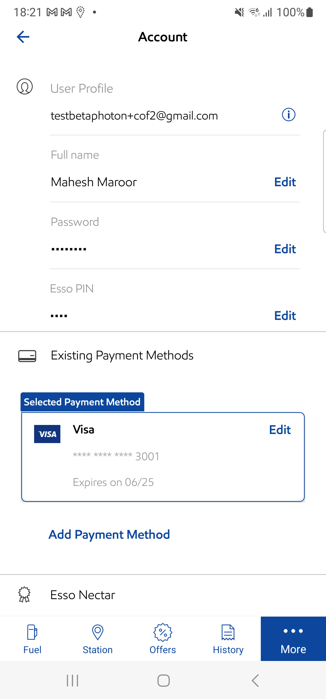FailCheck whether system to send reset password email and user should see a promptAnd user is on NLID screenWhen user taps on start button in LIDAnd user is navigated to Select your pump screenAnd user selects pump number "1" to start fuellingAnd user selects the pump from 'Select your Pump' page and taps on continue buttonWhen user tap on Continue button in MFA screenThen the user is navigated to Confirm payment screenAnd user confirms card paymentWhen user taps on Forgot your pin linkThen Verify user is navigated to Enter Password screenWhen user taps on forget password linkThen verify user is navigated to Forgot Password screenWhen user taps on send button in Forgot Password ScreenThen verify the prompt message and tap on Ok buttonstepDefinitions.Hook.afterEachStep(io.cucumber.java.Scenario)cc7ccd7f-8498-4c89-9178-55499ee828aeThen user verifies the app redirects back to NLIDStep skippedPassSystem to display ‘Search’ as an iconGiven user log out from the app if logged inWhen user taps on register button from Login screenThen user should be navigated to Manual Register screenThen enter First NameThen enter Last NameThen enter "chibisakkrava.d+" Email addressThen enter passwordAnd confirm passwordThen click the check box for acceptWhen click on continue button from register screenWhen user tap on Skip buttonThen the system should display Skip warning popupWhen user tap on Skip anywayThen app to dismiss the popup and navigate the user to LID after reviewGiven user is on NLID screenAnd user taps on More button in tab barWhen user navigates to Account screenThen user tap on add card button in accountWhen user taps on Credit Debit card in Add Payment Method screenAnd Enter pinThen user verifies the popup and clicks on ok buttonAnd user able to see and verify the search iconPassVerify whether the inline error message for postcode fieldGiven user is on NLID screenAnd user taps on More button in tab barWhen user navigates to Account screenThen user tap on add card button in accountWhen user taps on Credit Debit card in Add Payment Method screenAnd user enters the card details except "post code"Then user clicks on continue button in Card screenThen user should able to view inline error message without enter the postcodePassCheck Whether System displays a popup when the consent checkbox is not clicked in the Add Debit/Credit Card ScreenGiven user is on NLID screenAnd user taps on the complete profileWhen user taps on add payment methodWhen user taps on Credit Debit card in Add Payment Method screenAnd user enters the card details except "consent checkbox"And user scrolls down to Consent checkbox sectionThen user clicks on continue button in Card screen without "consent checkbox"Then user verifies the popup message for checkboxAnd user clicks on ok in the popup messagePassCheck Whether system displays the input field for postcode and i icon in card details screenGiven user is on NLID screenAnd user taps on the complete profileThen user taps on add payment methodWhen user taps on Credit Debit card in Add Payment Method screenAnd user clicks on postcode fieldThen user verifies the postcode field as input fieldPassCheck Whether System displays Enter password screen while clicking Forgot your pinGiven user is on NLID screenAnd user taps on More button in tab barThen user clicks on AccountThen user click the edit pin button with no mobile numberAnd user taps on forgot password in PINThen user verifies the forgot password screen with enter password btn cancel btn and continue btnPassCheck Whether System displays the name on card field text or input field in Add Debit/Credit card screenGiven user is on NLID screenAnd user taps on the complete profileWhen user taps on add payment methodWhen user taps on Credit Debit card in Add Payment Method screenThen user verifies the Billing address i icon in Card details screenThen user verifies the default input text for the Card Name under Billing Details SectionPassCheck Whether System displays the copy text next to the i info iconGiven user is on NLID screenAnd user taps on the complete profileWhen user taps on add payment methodWhen user taps on Credit Debit card in Add Payment Method screenAnd user verifies the Billing address i icon in Card details screenWhen user taps on the consent info iconAnd verify whether the system displays the consent copy text msgPassCheck Whether System displays the entered text in first Address line Billing details screenGiven user is on NLID screenAnd user taps on the complete profileThen user taps on add payment methodWhen user taps on Credit Debit card in Add Payment Method screenThen user verifies the Billing address i icon in Card details screenAnd user taps on First Address field and verifies keypadThen user enters the fifty characters in Address fieldAnd the field should display the fifty characters in first address fieldPassCheck Whether System able to enter fifty characters in second Address fieldGiven user is on NLID screenAnd user taps on the complete profileThen user taps on add payment methodWhen user taps on Credit Debit card in Add Payment Method screenThen user verifies the Billing address i icon in Card details screenAnd user taps on second Address FieldThen user enters the fifty characters in second Address FieldAnd the field should display the fifty characters in second address fieldPassCheck Whether System displays the default input text for the Address Line 1 field under Billing Details section as'Address1'Given user is on NLID screenAnd user taps on the complete profileWhen user taps on add payment methodWhen user taps on Credit Debit card in Add Payment Method screenThen user verifies the default text in the first Address FieldPassCheck Whether System displays an inline error message if the Address is not entered and submittedGiven user is on NLID screenAnd user taps on the complete profileWhen user taps on add payment methodWhen user taps on Credit Debit card in Add Payment Method screenAnd user enters the card details except "billing address"And user clicks on continue button in Card screenAnd user verifies the inline error message for Address FieldPasssystem to display ‘Billing Details’ as section headerGiven user is on NLID screenAnd user taps on More button in tab barWhen user navigates to Account screenThen user tap on add card button in accountWhen user taps on Credit Debit card in Add Payment Method screenThen user verifies the Billing address in the screenPassCheck Whether System displays the Billing address i icon in Card details screenGiven user is on NLID screenAnd user taps on the complete profileWhen user taps on add payment methodWhen user taps on Credit Debit card in Add Payment Method screenThen user verifies the Billing address i icon in Card details screenPassCheck Whether System displays the Checkbox for consent and Touch ID authorization in the Billing Details fieldGiven user is on NLID screenAnd user taps on the complete profileWhen user taps on add payment methodWhen user taps on Credit Debit card in Add Payment Method screenThen enter name of the cardThen enter "5232 0500 0019 0003" card numberThen enter expiry dateThen enter CVVThen enter postal codeThen enter address line1Then enter Address line2Then enter cityThen user verifies the Check box for consent and AuthorizationPassCheck whether the system displays the Checkbox and the Copy textGiven user is on NLID screenAnd user taps on the complete profileWhen user taps on add payment methodWhen user taps on Credit Debit card in Add Payment Method screenThen enter name of the cardThen enter "5232 0500 0019 0003" card numberThen enter expiry dateThen enter CVVThen enter postal codeThen enter address line1Then enter Address line2Then enter cityThen check consent checkboxThen check consent checkbox and verifies the copy text displayedPassCheck Whether System displays the checkbox for consent to use the card in Billing Details ScreenGiven user is on NLID screenAnd user taps on the complete profileThen user taps on add payment methodWhen user taps on Credit Debit card in Add Payment Method screenThen user verifies the Billing address i icon in Card details screenThen enter name of the cardThen enter "5232 0500 0019 0003" card numberThen enter expiry dateThen enter CVVThen enter postal codeThen enter address line1Then enter Address line2Then enter cityThen user verifies and clicks the i icon next to consent checkboxAnd verify whether the system displays the consent copy text msgPassInability of the system to display past month and year as expiry date in the pickerGiven user is on NLID screenAnd user taps on the complete profileThen user taps on add payment methodWhen user taps on Credit Debit card in Add Payment Method screenAnd click on Card Exp Date field in Add Card screenThen Verify the Current Date and Current month are displayedPassCheck Whether System enables the search icon for the postcode after entering the number in post codeGiven user is on NLID screenAnd user taps on the complete profileWhen user taps on add payment methodWhen user taps on Credit Debit card in Add Payment Method screenThen user verifies the Billing address i icon in Card details screenAnd user clicks on postcode fieldAnd user enters the postcode in the billing Details screenThen user verifies the search icon is enabledPassCheck Whether System to disable ‘Search’ option if user has not entered any value in 'Postcode’ fieldGiven user is on NLID screenAnd user taps on the complete profileWhen user taps on add payment methodWhen user taps on Credit Debit card in Add Payment Method screenAnd user clicks on postcode fieldThen user verifies the search icon is disabledPassCheck Whether System displays the screen with screen title and back icon and search clear iconsGiven user is on NLID screenAnd user taps on the complete profileWhen user taps on add payment methodWhen user taps on Credit Debit card in Add Payment Method screenThen user verifies the Billing address i icon in Card details screenAnd user clicks on postcode fieldThen user verifies the search icon is enabledAnd user enters the postcode in the billing Details screenThen user clicks on enabled search iconThen user verifies the screen with screen title and back icon and search clear iconsFailCheck whether System to display CT as a prompt Message: Esso PIN added successfully., Button: OKWhen user log out from the app if logged inWhen user taps on register button from Login screenThen user should be navigated to Manual Register screenThen enter First NameThen enter Last NameThen enter "chibisakkrava.d+" Email addressThen enter passwordAnd confirm passwordThen click the check box for acceptWhen click on continue button from register screenWhen user tap on Skip buttonstepDefinitions.Hook.afterEachStep(io.cucumber.java.Scenario)c61b4240-37f5-4823-98b9-6d0bf4fc99da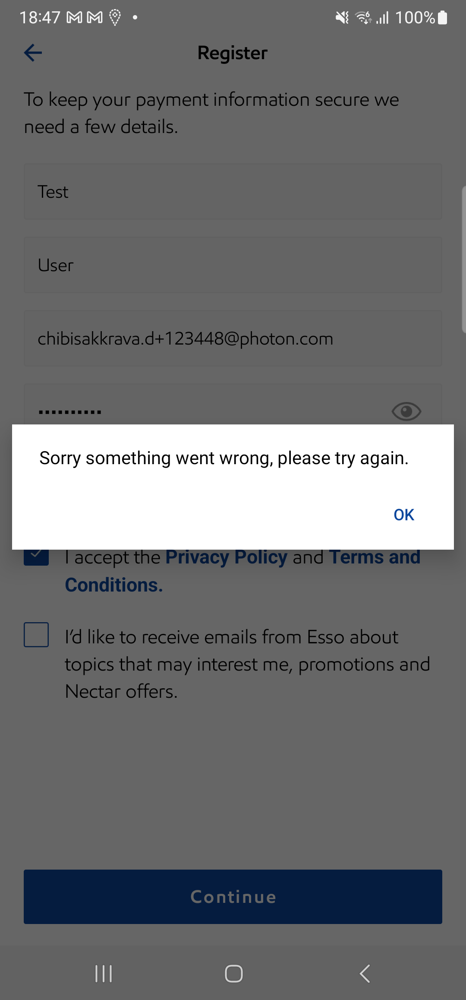Then the system should display Skip warning popupStep skippedWhen user tap on Skip anywayStep skippedThen app to dismiss the popup and navigate the user to LID after reviewStep skippedAnd user taps on More button in tab barStep skippedWhen user navigates to Account screenStep skippedThen verify Esso PIN section on accounts pageStep skippedThen user taps on Set up Esso PIN linkStep skippedWhen user is on setup PIN screenStep skippedWhen user enters four digit PINStep skippedThen user tap on continue button in enter PIN screenStep skippedThen user verifies the popup and clicks on ok buttonStep skippedFailApp should perform 3DS verification for Card Onboarding confirmationWhen user log out from the app if logged inWhen user taps on register button from Login screenThen user should be navigated to Manual Register screenThen enter First NameThen enter Last NameThen enter "roshini.narayanan+" Email addressThen enter passwordAnd confirm passwordThen click the check box for acceptWhen click on continue button from register screenWhen user tap on Skip buttonThen the system should display Skip warning popupWhen user tap on Skip anywayThen app to dismiss the popup and navigate the user to LID after reviewAnd user taps on More button in tab barWhen user navigates to Account screenThen user tap on add card button in accountWhen user taps on Credit Debit card in Add Payment Method screenWhen user is on setup PIN screenWhen user enters four digit PINThen user tap on continue button in enter PIN screenThen tap on ok button and close location copy textThen user lands on Add debit/credit card screenThen enter name of the cardThen enter "5520 9050 1002 2051" card numberThen enter expiry dateThen enter CVVThen enter postal codeThen enter address line1Then enter Address line2Then enter cityThen check consent checkboxAnd tap on continue button in add payment screenThen validate identity confirmation titleThen validate if user is on OTP password screenstepDefinitions.Hook.afterEachStep(io.cucumber.java.Scenario)f19f8783-620a-41c1-a6ab-9e9f1c140bdd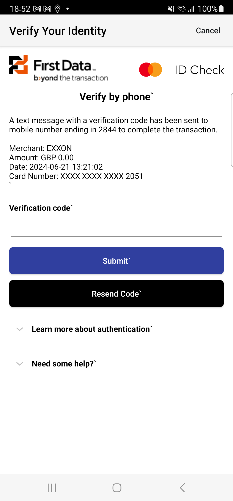PassCheck Whether System displays the keypad for set pin screenGiven user log out from the app if logged inWhen user taps on register button from Login screenThen user should be navigated to Manual Register screenThen enter First NameThen enter Last NameThen enter Email address as "Shruthi.s1"Then enter passwordAnd confirm passwordThen click the check box for acceptWhen click on continue button from register screenWhen user tap on Skip buttonThen the system should display Skip warning popupWhen user tap on Skip anywayThen app to dismiss the popup and navigate the user to LID after reviewGiven user is on NLID screenAnd user taps on the complete profileThen user taps on add payment methodWhen user taps on Credit Debit card in Add Payment Method screenThen user verifies the Set Up pin screen with numeric keypadAnd user sets the pin for firstThen user verifies the first pin displayed as dot -
PayOutside
6:55:01 pm / 00:30:59:951 Fail
PayOutside
06.21.2024 6:55:01 pm 06.21.2024 7:26:01 pm 00:30:59:951 · #test-id=3,851FailSprint 2 - Payoutside : Verify Transaction Complete screen for "Added nectar card.. " messageGiven user log out from the app if logged inAnd user clicks on Login IconWhen I enter "FrictEssoPsword" in login detailsAnd user taps login button in login screenAnd user is on NLID screenAnd user taps on More button in tab barWhen user navigates to Account screenAnd delete added nectar card if existsWhen user taps on fuel icon and start fuelling buttonstepDefinitions.Hook.afterEachStep(io.cucumber.java.Scenario)5181adb8-c6a1-4133-bc0e-9d49235ca2f4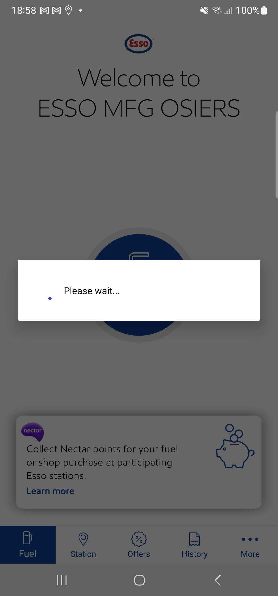And user is navigated to Select your pump screenStep skippedAnd user selects pump number "1" to start fuellingStep skippedAnd user selects the pump from 'Select your Pump' page and taps on continue buttonStep skippedWhen user tap on Continue button in MFA screenStep skippedThen the user is navigated to Confirm payment screenStep skippedAnd user confirms card paymentStep skippedThen user land on enter PIN screenStep skippedWhen user enters four digit PINStep skippedThen user tap on continue button in enter PIN screenStep skippedWhen user lands on card verification screenStep skippedAnd enter valid password and click on submit buttonStep skippedThen user is navigated to start fueling now screenStep skippedAnd then to now fuelingStep skippedAnd user verify the Transaction Complete screenStep skippedThen validate add nectar card button displayed in transaction complete screenStep skippedAnd user adds the Nectar card details by clicking the Add nectar card in Transaction Complete screenStep skippedThen user is navigated to add nectar screenStep skippedAnd enter nectar card value "NectarCardAddAndVerify" and tap on next buttonStep skippedWhen user clicks on Verify Later button under 'Card Added successfully' alertStep skippedThen verify if the user is in the Transaction Complete Screen with the context to verify the nectar cardStep skippedThen user tap on Done button in Transaction Complete screenStep skippedAnd close the thank you screen if displayedStep skippedFailTransaction Complete Screen Displays Verify your Nectar card to get exclusive Esso rewards when Card is not verified and card is verifiedAnd user is on NLID screenWhen user taps on start button in LIDAnd user is navigated to Select your pump screenAnd user selects pump number "2" to start fuellingAnd user selects the pump from 'Select your Pump' page and taps on continue buttonWhen user tap on Continue button in MFA screenThen the user is navigated to Confirm payment screenAnd user confirms card paymentThen user land on enter PIN screenWhen user enters four digit PINThen user tap on continue button in enter PIN screenWhen user lands on authorize payment screenWhen user lands on card verification screenAnd enter valid password and click on submit buttonThen user is navigated to start fueling now screenAnd then to now fuelingAnd user verify the Transaction Complete screenAnd validate verify nectar card link displayed in transaction complete screenstepDefinitions.Hook.afterEachStep(io.cucumber.java.Scenario)64a07f5e-bf14-43aa-a171-28724c5527af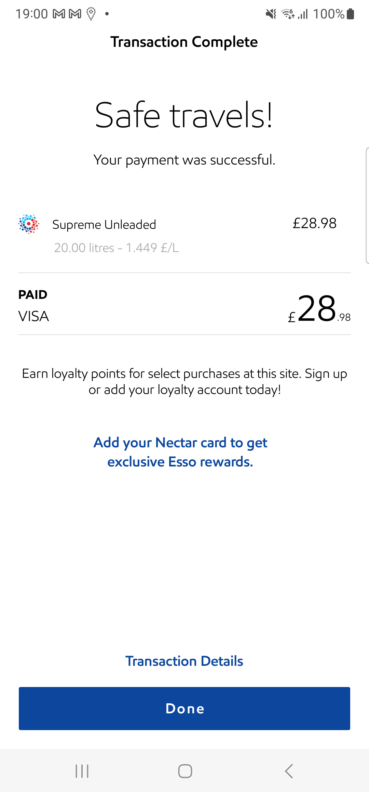And tap on the Verify Nectar Card link in Transaction complete ScreenStep skippedThen enter "NectarCardAddAndVerify" Nectar card number and password from Transaciton complete screenStep skippedThen verify if the user is in the Transaction Complete Screen with the context to see rewardsStep skippedThen user tap on Done button in Transaction Complete screenStep skippedAnd close the thank you screen if displayedStep skippedPassComplete the Fuelling transaction with Nectar card is verified and verify the Transaction complete screenAnd user is on NLID screenWhen user taps on start button in LIDAnd user is navigated to Select your pump screenAnd user selects pump number "3" to start fuellingAnd user selects the pump from 'Select your Pump' page and taps on continue buttonWhen user tap on Continue button in MFA screenThen the user is navigated to Confirm payment screenAnd user confirms card paymentThen user land on enter PIN screenWhen user enters four digit PINThen user tap on continue button in enter PIN screenWhen user lands on authorize payment screenWhen user lands on card verification screenAnd enter valid password and click on submit buttonThen user is navigated to start fueling now screenAnd then to now fuelingAnd user verify the Transaction Complete screenThen user tap done in the Transaction Complete screenAnd close the thank you screen if displayedPassComplete the Fuelling transaction and verify the Transaction Details screenAnd user is on NLID screenWhen user taps on start button in LIDAnd user is navigated to Select your pump screenAnd user selects pump number "4" to start fuellingAnd user selects the pump from 'Select your Pump' page and taps on continue buttonWhen user tap on Continue button in MFA screenThen the user is navigated to Confirm payment screenAnd user confirms card paymentThen user land on enter PIN screenWhen user enters four digit PINThen user tap on continue button in enter PIN screenWhen user lands on authorize payment screenWhen user lands on card verification screenAnd enter valid password and click on submit buttonThen user is navigated to start fueling now screenAnd then to now fuelingAnd user verify the Transaction Complete screenAnd user taps on the Transaction Details screenAnd Verify all the fields are present in Transaction Details screenPassVerify whether the user is able to see the view link in Transaction Details screenWhen user is on NLID screenWhen user taps on start button in LIDAnd user is navigated to Select your pump screenAnd user selects pump number "5" to start fuellingAnd user selects the pump from 'Select your Pump' page and taps on continue buttonAnd user verify the MFA screenAnd user tap on Continue button in MFA screenThen the user is navigated to Confirm payment screenAnd user confirms card paymentThen user land on enter PIN screenWhen user enters four digit PINThen user tap on continue button in enter PIN screenWhen user lands on authorize payment screenWhen user lands on card verification screenAnd enter valid password and click on submit buttonThen user is navigated to start fueling now screenAnd then to now fuelingThen user checks the details in the transaction summary screenThen Tap on Transaction Details link in Transaction Complete ScreenThen the system displays the view link for receiptAnd the user should view the receipt after clicking view in Transaction Details screenPassVerify whether the system displays the copy text msgWhen user is on NLID screenWhen user taps on More button in tab barAnd user navigates to Account screenThen user should opt out for receipts by email checkboxThen user should validate the receipt checkbox copy text for not opting to receive emailsWhen the system displays the confirmation popup for not receiving mailsThen tap on ok button and close receipt checkbox copy textFailVerify whether the system is able to make service call and display authorization screenWhen user is on NLID screenWhen user taps on start button in LIDAnd user is navigated to Select your pump screenAnd user selects pump number "6" to start fuellingAnd user selects the pump from 'Select your Pump' page and taps on continue buttonAnd user verify the MFA screenWhen user tap on Continue button in MFA screenThen the user is navigated to Confirm payment screenThen user verify the confirms the payment screenAnd user confirms card paymentThen user land on enter PIN screenWhen user enters four digit PINThen user tap on continue button in enter PIN screenWhen user lands on authorize payment screenWhen user lands on card verification screenAnd enter valid password and click on submit buttonThen user is navigated to start fueling now screenAnd then to now fuelingThen user tap on Done button in Transaction Complete screenstepDefinitions.Hook.afterEachStep(io.cucumber.java.Scenario)5d5f51c1-46d9-40a7-9fc6-a3c1207a531c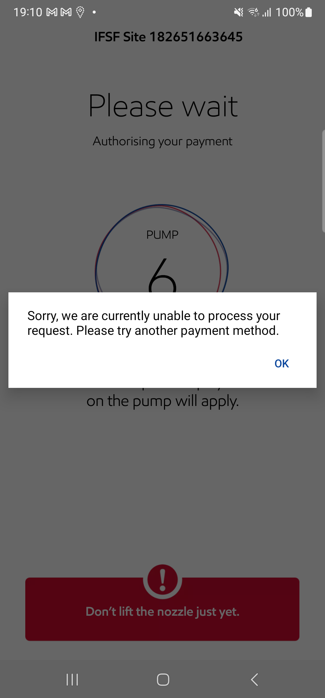PassVerify whether the system is able to display loader while authorization is in progressWhen user is on NLID screenWhen user taps on start button in LIDAnd user is navigated to Select your pump screenAnd user selects pump number "7" to start fuellingAnd user selects the pump from 'Select your Pump' page and taps on continue buttonAnd user verify the MFA screenWhen user tap on Continue button in MFA screenThen the user is navigated to Confirm payment screenThen user verify the confirms the payment screenAnd user confirms card paymentThen user land on enter PIN screenWhen user enters four digit PINThen user tap on continue button in enter PIN screenWhen user lands on authorize payment screenFailSprint 2 Pay outside : Complete the fuelling transaction without verifying nectar card and Verify the Transaction complete screenGiven user is on NLID screenAnd user taps on More button in tab barWhen user navigates to Account screenAnd delete added nectar card if existsAnd navigate to the Nectar card sectionAnd user taps on Add nectar card in Account screenThen user is navigated to add nectar screenAnd enter nectar card value "NectarCardAddAndVerify" and tap on next buttonThen user tap on verify laterAnd navigate to the Nectar card section from account screenAnd user taps on More button in tab barWhen user tap on LID screenAnd close the modal popupWhen user taps on start button in LIDAnd user is navigated to Select your pump screenAnd user selects pump number "3" to start fuellingAnd user selects the pump from 'Select your Pump' page and taps on continue buttonWhen user tap on Continue button in MFA screenThen the user is navigated to Confirm payment screenAnd user confirms card paymentThen user land on enter PIN screenWhen user enters four digit PINThen user tap on continue button in enter PIN screenWhen user lands on authorize payment screenWhen user lands on card verification screenAnd enter valid password and click on submit buttonThen user is navigated to start fueling now screenAnd then to now fuelingAnd user verify the Transaction Complete screenAnd validate verify nectar card link displayed in transaction complete screenAnd tap on the Verify Nectar Card link in Transaction complete ScreenThen enter "NectarCardAddAndVerify" Nectar card number and password from Transaciton complete screenstepDefinitions.Hook.afterEachStep(io.cucumber.java.Scenario)57b72349-26d4-41b3-b90b-4c5e60ae032c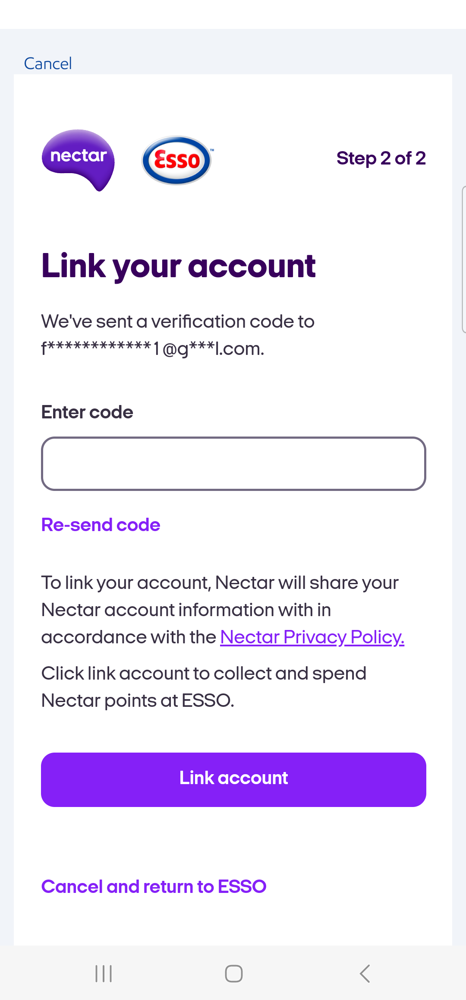Then verify if the user is in the Transaction Complete Screen with the context to see rewardsStep skippedPassManual user - The app should display not display last 4 digits of the card number used in a COF(Master card) transaction on the Transaction complete screenGiven user is on NLID screenWhen user taps on start button in LIDAnd user is navigated to Select your pump screenAnd user selects pump number "1" to start fuellingAnd user selects the pump from 'Select your Pump' page and taps on continue buttonWhen user tap on Continue button in MFA screenThen the user is navigated to Confirm payment screenAnd user confirms card paymentThen user land on enter PIN screenWhen user enters four digit PINThen user tap on continue button in enter PIN screenWhen user lands on card verification screenAnd enter valid password and click on submit buttonThen user is navigated to start fueling now screenAnd then to now fuelingThen user verify the Transaction Complete screenAnd user verifies the card number with asterisk is not present in the Transaction Complete screenPassVerify if the user is able to see the updated LID variation with the Add Payment Method’ button (Manual Login user)Given user is on NLID screenAnd user taps on More button in tab barWhen user navigates to Account screenThen user clicks on edit in the added payment method without phone and other paymentThen user taps delete in the Edit Payment Method screenThen user taps on delete button in the Delete popup msgThen app to dismiss the popup when the user taps on OK buttonAnd user verifies the account pageAnd user taps on fuel icon and navigate to LID screenThen validtes the add payment button present in Lid screenPassVerify if the user is able to see the updated LID variation with the Add Payment Method’ button (Manual Login user)Given user log out from the app if logged inAnd user clicks on Login IconWhen I enter "FrictEssoPsword" in login detailsAnd user taps login button in login screenAnd user is on NLID screenGiven user is on NLID screenThen validtes the add payment button present in Lid screenFailManual user - The app should display the last 4 digits of the card number used in a COF(Visa) transaction on the Transaction Details screenAnd user navigated to NLID ScreenWhen user taps on start button in LIDstepDefinitions.Hook.afterEachStep(io.cucumber.java.Scenario)7b179d02-9d94-46c4-a155-eb97d5a9811c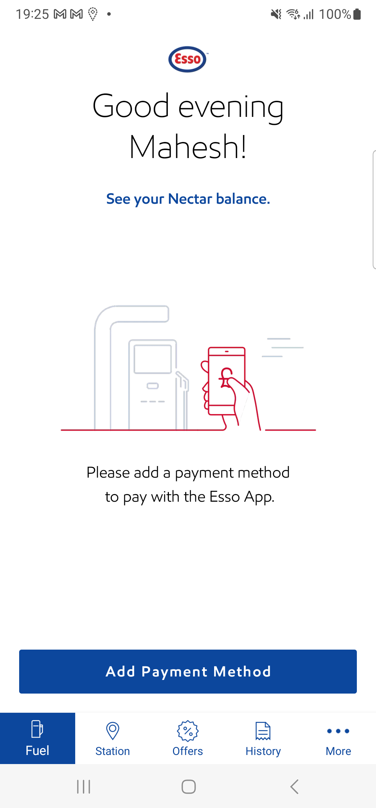And user is navigated to Select your pump screenStep skippedAnd user selects pump number "2" to start fuellingStep skippedAnd user selects the pump from 'Select your Pump' page and taps on continue buttonStep skippedWhen user tap on Continue button in MFA screenStep skippedThen the user is navigated to Confirm payment screenStep skippedAnd user confirms card paymentStep skippedThen user land on enter PIN screenStep skippedWhen user enters four digit PINStep skippedThen user tap on continue button in enter PIN screenStep skippedWhen user lands on authorize payment screenStep skippedThen user verify the Transaction Complete screenStep skippedAnd Tap on Transaction Details link in Transaction Complete ScreenStep skippedThen user verifies that the "VISA" payment method "0014" is present with asterisksStep skipped
-
org.openqa.selenium.NoSuchElementException
3 tests
org.openqa.selenium.NoSuchElementException
3 failedStatus Timestamp TestName Fail 16:25:46 pm Then user verifies the default input text for the City field under Billing Details Section FrictionlessFlow.Check Whether System displays the default input text for the City field under Billing Details section as'City'.Then user verifies the default input text for the City field under Billing Details SectionFail 18:01:36 pm Then Verify user navigated back to LID screen FrictionlessFlow.Verify if System navigate the user to logged-in dashboard from the Change Payment Details screen after 300 seconds of inactivity.Then Verify user navigated back to LID screenFail 19:16:43 pm Then enter "NectarCardAddAndVerify" Nectar card number and password from Transaciton complete screen PayOutside.Sprint 2 Pay outside : Complete the fuelling transaction without verifying nectar card and Verify the Transaction complete screen.Then enter "NectarCardAddAndVerify" Nectar card number and password from Transaciton complete screen -
org.openqa.selenium.TimeoutException
1 tests
org.openqa.selenium.TimeoutException
1 failedStatus Timestamp TestName Fail 17:42:21 pm And edit any of the fields under Edit Payment screen FrictionlessFlow.Check whether System should allow the user to edit the card on file details.And edit any of the fields under Edit Payment screen -
java.lang.AssertionError
32 tests
java.lang.AssertionError
32 failedStatus Timestamp TestName Fail 15:41:51 pm Then the user validates whether "140" is updated in the Confirm Payment screen COFChallengeFlow.Verify that system should not display the MFA screen when user has already selected the checkbox for 'Save for next time'.Then the user validates whether "140" is updated in the Confirm Payment screenFail 15:44:25 pm Then user verify the MFA screen without cancel button and "140" as already selected value COFChallengeFlow.Verify that system should untick the 'Save for next time' checkbox.Then user verify the MFA screen without cancel button and "140" as already selected valueFail 15:46:49 pm Then user validates the Select your Pump screen when cancel button is not present COFChallengeFlow.Verify that system should navigate the user back to the site check-in screen from the MFA screen.Then user validates the Select your Pump screen when cancel button is not presentFail 15:48:42 pm Given user log out from the app if logged in COFChallengeFlow.Verify that System should display 100£ as the default MFA ruler unit and do not display the previous set MFA when User log out and log in to the same device after saving the MFA value for next time..Given user log out from the app if logged inFail 15:49:49 pm And user tap on Continue button in MFA screen COFChallengeFlow.Verify that system should allow the user to update the selected MFA unit.And user tap on Continue button in MFA screenFail 16:07:00 pm And user taps on More button in tab bar COFChallengeFlow.Check whether system able to perform the 3DS SDK verification System to display error message pop up based on the error response from SDK.And user taps on More button in tab barFail 16:19:23 pm When user tap on Continue button in MFA screen FrictionlessFlow.Validate invalid password popup error message "Due to security reasons you need to login again.Button: OK".When user tap on Continue button in MFA screenFail 16:22:20 pm And user taps on More button in tab bar FrictionlessFlow.Check Whether System to show inline error message when user leaves the field blank and clicks on continue.And user taps on More button in tab barFail 16:23:30 pm Then enter name of the card FrictionlessFlow.Check whether System to display CT as prompt when user tap on the ‘Edit’ button i. CT[Message: Are you sure you want to delete this card?, Button: CANCEL, DELETE].Then enter name of the cardFail 16:24:45 pm Then user verifies the Billing address i icon in Card details screen FrictionlessFlow.Check Whether System displays user able to enter maximum of fifty characters.Then user verifies the Billing address i icon in Card details screenFail 16:37:47 pm And user taps on the complete profile FrictionlessFlow.Check Whether System displays the list of address in postcode lookup screen.And user taps on the complete profileFail 16:44:05 pm And user taps on the complete profile FrictionlessFlow.Check Whether System displays the native picker while clicking the Expiry month and date.And user taps on the complete profileFail 16:59:31 pm And user taps on More button in tab bar FrictionlessFlow.Check whether the system displays icons for cards of all app supported credit cards will be displayed here..And user taps on More button in tab barFail 17:02:46 pm And user taps on More button in tab bar FrictionlessFlow.Check Whether system allows the user to enter set the pin in numeric field.And user taps on More button in tab barFail 17:06:01 pm And user taps on More button in tab bar FrictionlessFlow.Check Whether System displays the dot for completed pin in Payment Method.And user taps on More button in tab barFail 17:13:38 pm And user taps on More button in tab bar FrictionlessFlow.Check Whether system displays the set pin screen through Account.And user taps on More button in tab barFail 17:18:38 pm Then user verifies the inline error msg for the invalid card FrictionlessFlow.Check Whether System displays the unsupported card message in Billing details screen while entering wrong card number.Then user verifies the inline error msg for the invalid cardFail 17:24:54 pm And user taps on More button in tab bar FrictionlessFlow.Check whether System to validate the PIN.And user taps on More button in tab barFail 17:43:39 pm Then user verifies the popup message for relogin the Application FrictionlessFlow.Check Whether System the email sent popup in forgot your password screen.Then user verifies the popup message for relogin the ApplicationFail 17:48:47 pm And user taps on More button in tab bar FrictionlessFlow.Check Whether System displays the tick mark for the selected address in postcode lookup screen.And user taps on More button in tab barFail 17:52:06 pm And user taps on More button in tab bar FrictionlessFlow.Check Whether System displays the entered text in postcode lookup screen is cleared by clicking clear icon.And user taps on More button in tab barFail 17:55:26 pm And user taps on More button in tab bar FrictionlessFlow.Check Whether System displays the inline Error message for Name on the card field in Billing Details Screen.And user taps on More button in tab barFail 17:55:42 pm When user log out from the app if logged in FrictionlessFlow.Check whether the System performs displays the address when user has selected an option and tapped on ‘select’ button..When user log out from the app if logged inFail 17:59:53 pm When user taps on start button in LID FrictionlessFlow.Verify if System navigate the user to logged-in dashboard from the Add Nectar Card screen after 300 seconds of inactivity.When user taps on start button in LIDFail 18:13:10 pm And user verifies the popup message for relogin the Application FrictionlessFlow.Check whether system to navigate user to ‘Forgot Password’ screen when user tap on ‘Forgot your password?’ link.And user verifies the popup message for relogin the ApplicationFail 18:21:42 pm Then user should able to see the logo of the card FrictionlessFlow.Check whether System to display the logo of the card.Then user should able to see the logo of the cardFail 18:23:08 pm Then verify the prompt message and tap on Ok button FrictionlessFlow.Check whether system to send reset password email and user should see a prompt.Then verify the prompt message and tap on Ok buttonFail 18:46:49 pm When user tap on Skip button FrictionlessFlow.Check whether System to display CT as a prompt Message: Esso PIN added successfully., Button: OK.When user tap on Skip buttonFail 18:57:41 pm When user taps on fuel icon and start fuelling button PayOutside.Sprint 2 - Payoutside : Verify Transaction Complete screen for "Added nectar card.. " message.When user taps on fuel icon and start fuelling buttonFail 19:00:25 pm And validate verify nectar card link displayed in transaction complete screen PayOutside.Transaction Complete Screen Displays Verify your Nectar card to get exclusive Esso rewards when Card is not verified and card is verified.And validate verify nectar card link displayed in transaction complete screenFail 19:09:48 pm Then user tap on Done button in Transaction Complete screen PayOutside.Verify whether the system is able to make service call and display authorization screen.Then user tap on Done button in Transaction Complete screenFail 19:25:30 pm When user taps on start button in LID PayOutside.Manual user - The app should display the last 4 digits of the card number used in a COF(Visa) transaction on the Transaction Details screen.When user taps on start button in LID -
org.openqa.selenium.WebDriverException
1 tests
org.openqa.selenium.WebDriverException
1 failedStatus Timestamp TestName Fail 18:51:05 pm Then validate if user is on OTP password screen FrictionlessFlow.App should perform 3DS verification for Card Onboarding confirmation.Then validate if user is on OTP password screen
-
@P11270-12866
1 tests
@P11270-12866
1 failedStatus Timestamp TestName Fail 18:21:02 pm Check whether System to display the logo of the card FrictionlessFlow.Check whether System to display the logo of the card -
@P11270-10105
1 tests
@P11270-10105
1 passedStatus Timestamp TestName Pass 19:10:50 pm Verify whether the system is able to display loader while authorization is in progress PayOutside.Verify whether the system is able to display loader while authorization is in progress -
@P11270-12852
1 tests
@P11270-12852
1 passedStatus Timestamp TestName Pass 18:25:50 pm Verify whether the inline error message for postcode field FrictionlessFlow.Verify whether the inline error message for postcode field -
@P11270-12824
1 tests
@P11270-12824
1 failedStatus Timestamp TestName Fail 16:24:03 pm Check Whether System displays user able to enter maximum of fifty characters FrictionlessFlow.Check Whether System displays user able to enter maximum of fifty characters -
@P11270-12882
1 tests
@P11270-12882
1 passedStatus Timestamp TestName Pass 16:45:07 pm Scenario: Check Whether System displays the popup message for i icon next to consent to app checkbox field FrictionlessFlow.Scenario: Check Whether System displays the popup message for i icon next to consent to app checkbox field -
@P11270-12902
1 tests
@P11270-12902
1 passedStatus Timestamp TestName Pass 18:17:37 pm Check whether system to navigate user to ‘Forgot Password’ screen when user tap on ‘Forgot your password?’ link FrictionlessFlow.Check whether system to navigate user to ‘Forgot Password’ screen when user tap on ‘Forgot your password?’ link -
@P11270-16259
1 tests
@P11270-16259
1 failedStatus Timestamp TestName Fail 17:41:36 pm Check whether System should allow the user to edit the card on file details FrictionlessFlow.Check whether System should allow the user to edit the card on file details -
@P11270-12879
1 tests
@P11270-12879
1 passedStatus Timestamp TestName Pass 18:29:01 pm Check Whether System displays Enter password screen while clicking Forgot your pin FrictionlessFlow.Check Whether System displays Enter password screen while clicking Forgot your pin -
@P11270-12870
1 tests
@P11270-12870
1 passedStatus Timestamp TestName Pass 15:22:38 pm Display the Identify Confirmation prompt as per ‘Requirement 1.e’ for 5 seconds [Note: 5 seconds should be configurable] (Fueling Flow) COFChallengeFlow.Display the Identify Confirmation prompt as per ‘Requirement 1.e’ for 5 seconds [Note: 5 seconds should be configurable] (Fueling Flow) -
@P11270-23840
1 tests
@P11270-23840
1 failedStatus Timestamp TestName Fail 15:43:32 pm Verify that system should untick the 'Save for next time' checkbox COFChallengeFlow.Verify that system should untick the 'Save for next time' checkbox -
@P11270-23842
1 tests
@P11270-23842
1 failedStatus Timestamp TestName Fail 15:45:53 pm Verify that system should navigate the user back to the site check-in screen from the MFA screen COFChallengeFlow.Verify that system should navigate the user back to the site check-in screen from the MFA screen -
@P11270-43195
1 tests
@P11270-43195
1 passedStatus Timestamp TestName Pass 19:18:14 pm Manual user - The app should display not display last 4 digits of the card number used in a COF(Master card) transaction on the Transaction complete screen PayOutside.Manual user - The app should display not display last 4 digits of the card number used in a COF(Master card) transaction on the Transaction complete screen -
@P11270-12818
1 tests
@P11270-12818
1 passedStatus Timestamp TestName Pass 17:31:36 pm Check whether System to allow user to add card on file link active. FrictionlessFlow.Check whether System to allow user to add card on file link active. -
@P11270-10104
1 tests
@P11270-10104
1 failedStatus Timestamp TestName Fail 19:08:00 pm Verify whether the system is able to make service call and display authorization screen PayOutside.Verify whether the system is able to make service call and display authorization screen -
@P11270-12821
1 tests
@P11270-12821
1 passedStatus Timestamp TestName Pass 17:33:27 pm System to navigate user to Postcode Lookup screen, when clicked on search icon. FrictionlessFlow.System to navigate user to Postcode Lookup screen, when clicked on search icon. -
@P11270-12861
1 tests
@P11270-12861
1 passedStatus Timestamp TestName Pass 18:36:09 pm Check Whether System displays the Billing address i icon in Card details screen FrictionlessFlow.Check Whether System displays the Billing address i icon in Card details screen -
@P11270-23845
1 tests
@P11270-23845
1 passedStatus Timestamp TestName Pass 15:44:34 pm Verify that user should allow the user to update the payment method COFChallengeFlow.Verify that user should allow the user to update the payment method -
@P11270-36754
1 tests
@P11270-36754
1 passedStatus Timestamp TestName Pass 15:13:44 pm Verify that the application should not display a ‘Cancel’ button on the pump selection screen. (selected pump -Edit) COFChallengeFlow.Verify that the application should not display a ‘Cancel’ button on the pump selection screen. (selected pump -Edit) -
@P11270-13141
1 tests
@P11270-13141
1 passedStatus Timestamp TestName Pass 19:00:31 pm Complete the Fuelling transaction with Nectar card is verified and verify the Transaction complete screen PayOutside.Complete the Fuelling transaction with Nectar card is verified and verify the Transaction complete screen -
@Sprint2319_20
1 tests
@Sprint2319_20
1 failedStatus Timestamp TestName Fail 15:47:26 pm Verify that System should display 100£ as the default MFA ruler unit and do not display the previous set MFA when User log out and log in to the same device after saving the MFA value for next time. COFChallengeFlow.Verify that System should display 100£ as the default MFA ruler unit and do not display the previous set MFA when User log out and log in to the same device after saving the MFA value for next time. -
@P11270-12838
1 tests
@P11270-12838
1 passedStatus Timestamp TestName Pass 18:43:08 pm Check Whether System to disable ‘Search’ option if user has not entered any value in 'Postcode’ field FrictionlessFlow.Check Whether System to disable ‘Search’ option if user has not entered any value in 'Postcode’ field -
@P11270-12840
1 tests
@P11270-12840
1 passedStatus Timestamp TestName Pass 17:37:11 pm Check Whether System System to display the Text Esso PIN on Accounts screen. FrictionlessFlow.Check Whether System System to display the Text Esso PIN on Accounts screen. -
@P11270-12887
1 tests
@P11270-12887
1 passedStatus Timestamp TestName Pass 15:21:15 pm System to display ‘Custom UI’ if the challenge flow is issued for the COF based fuelling-authorization request(Fueling Flow) COFChallengeFlow.System to display ‘Custom UI’ if the challenge flow is issued for the COF based fuelling-authorization request(Fueling Flow) -
@P11270-12911
1 tests
@P11270-12911
1 passedStatus Timestamp TestName Pass 18:16:38 pm Check Whether System displays the inline error message for expiry date in Credit Debit card screen FrictionlessFlow.Check Whether System displays the inline error message for expiry date in Credit Debit card screen -
@P11270-12907
1 tests
@P11270-12907
1 passedStatus Timestamp TestName Pass 18:15:40 pm Check Whether System displays the inline error messgae for Security code in card details screen FrictionlessFlow.Check Whether System displays the inline error messgae for Security code in card details screen -
@P11270-12912
1 tests
@P11270-12912
1 failedStatus Timestamp TestName Fail 16:16:09 pm Validate invalid password popup error message "Due to security reasons you need to login again.Button: OK" FrictionlessFlow.Validate invalid password popup error message "Due to security reasons you need to login again.Button: OK" -
@P11270-12835
1 tests
@P11270-12835
1 failedStatus Timestamp TestName Fail 17:53:08 pm Check Whether System displays the inline Error message for Name on the card field in Billing Details Screen FrictionlessFlow.Check Whether System displays the inline Error message for Name on the card field in Billing Details Screen -
@iOSRegressionSet1
106 tests
@iOSRegressionSet1
76 passed 30 failedStatus Timestamp TestName Pass 15:08:12 pm Check whether system able to perform the 3DS SDK verification on selecting the COF for the payment method on successfully verifying the PIN, TouchID, FaceId COFChallengeFlow.Check whether system able to perform the 3DS SDK verification on selecting the COF for the payment method on successfully verifying the PIN, TouchID, FaceIdPass 15:11:54 pm Check whether when user is on �Verify your Password� screen and entered password is incorrect then 3DS SDK response is declined and navigate user to the �Transaction Declined� screen COFChallengeFlow.Check whether when user is on �Verify your Password� screen and entered password is incorrect then 3DS SDK response is declined and navigate user to the �Transaction Declined� screenPass 15:13:44 pm Verify that the application should not display a ‘Cancel’ button on the pump selection screen. (selected pump -Edit) COFChallengeFlow.Verify that the application should not display a ‘Cancel’ button on the pump selection screen. (selected pump -Edit)Pass 15:15:12 pm Verify that the application should not display a ‘Cancel’ button on the Payment Details screen. (Payment Method -Edit) COFChallengeFlow.Verify that the application should not display a ‘Cancel’ button on the Payment Details screen. (Payment Method -Edit)Pass 15:16:39 pm Verify that the application should not display a ‘Cancel’ button on the Maximum Fuelling Amount screen. (MFA -Edit) COFChallengeFlow.Verify that the application should not display a ‘Cancel’ button on the Maximum Fuelling Amount screen. (MFA -Edit)Pass 15:17:48 pm Check whether user is navigating to start fueling screen when entered password is correct and 3DS SDK response is success COFChallengeFlow.Check whether user is navigating to start fueling screen when entered password is correct and 3DS SDK response is successPass 15:19:41 pm Check whether user able to navigate user to the 3DS SDK driven screen and allowing user to enter the password,when user has set-up password at the payment method level COFChallengeFlow.Check whether user able to navigate user to the 3DS SDK driven screen and allowing user to enter the password,when user has set-up password at the payment method levelPass 15:21:15 pm System to display ‘Custom UI’ if the challenge flow is issued for the COF based fuelling-authorization request(Fueling Flow) COFChallengeFlow.System to display ‘Custom UI’ if the challenge flow is issued for the COF based fuelling-authorization request(Fueling Flow)Pass 15:22:38 pm Display the Identify Confirmation prompt as per ‘Requirement 1.e’ for 5 seconds [Note: 5 seconds should be configurable] (Fueling Flow) COFChallengeFlow.Display the Identify Confirmation prompt as per ‘Requirement 1.e’ for 5 seconds [Note: 5 seconds should be configurable] (Fueling Flow)Pass 15:24:00 pm Check whether system able to perform the 3DS SDK verification on selecting the COF for payment method on successfully verifying the PIN, TouchID, FaceId COFChallengeFlow.Check whether system able to perform the 3DS SDK verification on selecting the COF for payment method on successfully verifying the PIN, TouchID, FaceIdPass 15:25:37 pm Check whether user able to navigate user to the 3DS SDK driven screen and allowing user to enter the password,when user has set-up password at the payment method level COFChallengeFlow.Check whether user able to navigate user to the 3DS SDK driven screen and allowing user to enter the password,when user has set-up password at the payment method levelPass 15:26:53 pm Check whether user is navigating to start fueling screen when entered password is correct and 3DS SDK response is success COFChallengeFlow.Check whether user is navigating to start fueling screen when entered password is correct and 3DS SDK response is successPass 15:28:52 pm Check whether user able to see webpage controlled by 3DS SDK, when the user has successfully authenticated the transaction, then 3DS SDK has responded back with the success response (A-Res) and 3DS SDK responded back with Challenge-response COFChallengeFlow.Check whether user able to see webpage controlled by 3DS SDK, when the user has successfully authenticated the transaction, then 3DS SDK has responded back with the success response (A-Res) and 3DS SDK responded back with Challenge-responsePass 15:30:25 pm Dismiss the Fraud Prevention prompt as per Requirement if the user has tapped on the button(Fueling Flow) COFChallengeFlow.Dismiss the Fraud Prevention prompt as per Requirement if the user has tapped on the button(Fueling Flow)Pass 15:31:55 pm Check whether user able to see webpage controlled by 3DS SDK, when user has successfully authenticated the transaction,then 3DS SDK has responded back with the success response (A-Res) and 3DS SDK responded back with Challenge response COFChallengeFlow.Check whether user able to see webpage controlled by 3DS SDK, when user has successfully authenticated the transaction,then 3DS SDK has responded back with the success response (A-Res) and 3DS SDK responded back with Challenge responsePass 15:33:28 pm Check whether system to navigate user to ‘Start-Fuelling now’ screen as per current functionality post approved response COFChallengeFlow.Check whether system to navigate user to ‘Start-Fuelling now’ screen as per current functionality post approved responsePass 15:35:26 pm Verify weather System is displaying the mentioned details on the Maximum Fuelling Amount screen as per requirement. COFChallengeFlow.Verify weather System is displaying the mentioned details on the Maximum Fuelling Amount screen as per requirement.Pass 15:36:28 pm Verify that system should not display the 'Cancel' button on the Payment details screen COFChallengeFlow.Verify that system should not display the 'Cancel' button on the Payment details screenPass 15:37:57 pm Verify the user should able to navigate the logged-in dashboard from Thank You screen. COFChallengeFlow.Verify the user should able to navigate the logged-in dashboard from Thank You screen.Fail 15:40:52 pm Verify that system should not display the MFA screen when user has already selected the checkbox for 'Save for next time' COFChallengeFlow.Verify that system should not display the MFA screen when user has already selected the checkbox for 'Save for next time'Pass 15:41:57 pm Verify that user should be able to see the updated Confirm Pump number COFChallengeFlow.Verify that user should be able to see the updated Confirm Pump numberFail 15:43:32 pm Verify that system should untick the 'Save for next time' checkbox COFChallengeFlow.Verify that system should untick the 'Save for next time' checkboxPass 15:44:34 pm Verify that user should allow the user to update the payment method COFChallengeFlow.Verify that user should allow the user to update the payment methodFail 15:45:53 pm Verify that system should navigate the user back to the site check-in screen from the MFA screen COFChallengeFlow.Verify that system should navigate the user back to the site check-in screen from the MFA screenFail 15:47:26 pm Verify that System should display 100£ as the default MFA ruler unit and do not display the previous set MFA when User log out and log in to the same device after saving the MFA value for next time. COFChallengeFlow.Verify that System should display 100£ as the default MFA ruler unit and do not display the previous set MFA when User log out and log in to the same device after saving the MFA value for next time.Fail 15:48:56 pm Verify that system should allow the user to update the selected MFA unit COFChallengeFlow.Verify that system should allow the user to update the selected MFA unitPass 15:50:08 pm System to display Custom UI if the challenge flow is issued for the COF onboarding(Manual Registration) COFChallengeFlow.System to display Custom UI if the challenge flow is issued for the COF onboarding(Manual Registration)Pass 15:55:06 pm Dismiss the Identify Confirmation prompt as per �Requirement 1.e� if the user has tapped on the button(Manual Registration) COFChallengeFlow.Dismiss the Identify Confirmation prompt as per �Requirement 1.e� if the user has tapped on the button(Manual Registration)Pass 15:59:22 pm Check whether system able to perform the 3DS SDK verification System to display error message pop up based on the error response from SDK COFChallengeFlow.Check whether system able to perform the 3DS SDK verification System to display error message pop up based on the error response from SDKFail 16:04:33 pm Check whether system able to perform the 3DS SDK verification System to display error message pop up based on the error response from SDK COFChallengeFlow.Check whether system able to perform the 3DS SDK verification System to display error message pop up based on the error response from SDKPass 16:08:00 pm Check whether User cancels the Challenge Scenario. COFChallengeFlow.Check whether User cancels the Challenge Scenario.Pass 16:13:12 pm Check whether User clicks on DONE again, based on 3DS SDK status, the app will display the challenge flow. (repeat the flow until the user complete the challenge flow or cancels the step or try with another card COFChallengeFlow.Check whether User clicks on DONE again, based on 3DS SDK status, the app will display the challenge flow. (repeat the flow until the user complete the challenge flow or cancels the step or try with another cardFail 16:16:09 pm Validate invalid password popup error message "Due to security reasons you need to login again.Button: OK" FrictionlessFlow.Validate invalid password popup error message "Due to security reasons you need to login again.Button: OK"Fail 16:19:42 pm Check Whether System to show inline error message when user leaves the field blank and clicks on continue FrictionlessFlow.Check Whether System to show inline error message when user leaves the field blank and clicks on continueFail 16:22:31 pm Check whether System to display CT as prompt when user tap on the ‘Edit’ button i. CT[Message: Are you sure you want to delete this card?, Button: CANCEL, DELETE] FrictionlessFlow.Check whether System to display CT as prompt when user tap on the ‘Edit’ button i. CT[Message: Are you sure you want to delete this card?, Button: CANCEL, DELETE]Fail 16:24:03 pm Check Whether System displays user able to enter maximum of fifty characters FrictionlessFlow.Check Whether System displays user able to enter maximum of fifty charactersFail 16:25:05 pm Check Whether System displays the default input text for the City field under Billing Details section as'City' FrictionlessFlow.Check Whether System displays the default input text for the City field under Billing Details section as'City'Pass 16:26:06 pm System to display the entered card number in the format XXXX XXXX XXXX XXXX FrictionlessFlow.System to display the entered card number in the format XXXX XXXX XXXX XXXXPass 16:29:26 pm Check Whether System displays the united kingdom in Billing details screen FrictionlessFlow.Check Whether System displays the united kingdom in Billing details screenPass 16:32:19 pm System to close the info overlay as user taps on ‘GOT IT’ button FrictionlessFlow.System to close the info overlay as user taps on ‘GOT IT’ buttonFail 16:35:30 pm Check Whether System displays the list of address in postcode lookup screen FrictionlessFlow.Check Whether System displays the list of address in postcode lookup screenPass 16:38:46 pm Check Whether System displays the entered numbers in post code field FrictionlessFlow.Check Whether System displays the entered numbers in post code fieldFail 16:41:50 pm Check Whether System displays the native picker while clicking the Expiry month and date FrictionlessFlow.Check Whether System displays the native picker while clicking the Expiry month and datePass 16:45:07 pm Scenario: Check Whether System displays the popup message for i icon next to consent to app checkbox field FrictionlessFlow.Scenario: Check Whether System displays the popup message for i icon next to consent to app checkbox fieldPass 16:48:50 pm Check whether System to display CTXX as inline error message ●CTXX[Message: Wrong PIN. 2 Attempts left] FrictionlessFlow.Check whether System to display CTXX as inline error message ●CTXX[Message: Wrong PIN. 2 Attempts left]Pass 16:52:06 pm Check Whether System displays the Address 2 input fields in Card details screen under Billing Details section as'Address2' FrictionlessFlow.Check Whether System displays the Address 2 input fields in Card details screen under Billing Details section as'Address2'Pass 16:55:07 pm Check the whether System to allow the user to add cards as a payment method. FrictionlessFlow.Check the whether System to allow the user to add cards as a payment method.Fail 17:00:30 pm Check Whether system allows the user to enter set the pin in numeric field FrictionlessFlow.Check Whether system allows the user to enter set the pin in numeric fieldPass 17:07:04 pm Check System to display the following prompt when the card is successfully added a. Title: Message,Copy Text Message Card added successfully. Buttons:OK b. System to navigate user back to the account screen FrictionlessFlow.Check System to display the following prompt when the card is successfully added a. Title: Message,Copy Text Message Card added successfully. Buttons:OK b. System to navigate user back to the account screenFail 17:11:20 pm Check Whether system displays the set pin screen through Account FrictionlessFlow.Check Whether system displays the set pin screen through AccountFail 17:14:41 pm Check Whether System displays the unsupported card message in Billing details screen while entering wrong card number FrictionlessFlow.Check Whether System displays the unsupported card message in Billing details screen while entering wrong card numberPass 17:19:14 pm Check Whether System displays the entered card number in the Card number field FrictionlessFlow.Check Whether System displays the entered card number in the Card number fieldFail 17:22:33 pm Check whether System to validate the PIN FrictionlessFlow.Check whether System to validate the PINPass 17:25:57 pm Check Whether System displays the set up pin through Account screen FrictionlessFlow.Check Whether System displays the set up pin through Account screenPass 17:29:12 pm Check Whether System displays the Name on Card in Billing Details Screen FrictionlessFlow.Check Whether System displays the Name on Card in Billing Details ScreenPass 17:30:08 pm System to show inline error message when user does not enter ‘City’ and taps on Done : ”Please enter city” FrictionlessFlow.System to show inline error message when user does not enter ‘City’ and taps on Done : ”Please enter city”Pass 17:31:36 pm Check whether System to allow user to add card on file link active. FrictionlessFlow.Check whether System to allow user to add card on file link active.Pass 17:33:27 pm System to navigate user to Postcode Lookup screen, when clicked on search icon. FrictionlessFlow.System to navigate user to Postcode Lookup screen, when clicked on search icon.Pass 17:34:51 pm System to navigate the user to Postcode Lookup’ search screen, if the user has entered the search criteria. FrictionlessFlow.System to navigate the user to Postcode Lookup’ search screen, if the user has entered the search criteria.Pass 17:36:01 pm Check whether the User should see the following details for the‘Forgot Password’ Screen title: ‘Forgot Password’ ii. ‘Back’ buttoniii. CT screen label: In order to reset your password, an email will be sent to your address: (User email address) ‘SEND’ button FrictionlessFlow.Check whether the User should see the following details for the‘Forgot Password’ Screen title: ‘Forgot Password’ ii. ‘Back’ buttoniii. CT screen label: In order to reset your password, an email will be sent to your address: (User email address) ‘SEND’ buttonPass 17:37:11 pm Check Whether System System to display the Text Esso PIN on Accounts screen. FrictionlessFlow.Check Whether System System to display the Text Esso PIN on Accounts screen.Pass 17:39:37 pm Check Whether System displays the Esso pin edit in Account screen FrictionlessFlow.Check Whether System displays the Esso pin edit in Account screenPass 17:40:35 pm System to show inline error messages if user has left the fields blank and taps on ‘Done’ FrictionlessFlow.System to show inline error messages if user has left the fields blank and taps on ‘Done’Fail 17:41:36 pm Check whether System should allow the user to edit the card on file details FrictionlessFlow.Check whether System should allow the user to edit the card on file detailsFail 17:42:38 pm Check Whether System the email sent popup in forgot your password screen FrictionlessFlow.Check Whether System the email sent popup in forgot your password screenPass 17:43:48 pm Check whether the system displays ‘select’ button as ‘Disabled’ until, user has made any selection from the search results FrictionlessFlow.Check whether the system displays ‘select’ button as ‘Disabled’ until, user has made any selection from the search resultsFail 17:46:29 pm Check Whether System displays the tick mark for the selected address in postcode lookup screen FrictionlessFlow.Check Whether System displays the tick mark for the selected address in postcode lookup screenFail 17:49:49 pm Check Whether System displays the entered text in postcode lookup screen is cleared by clicking clear icon FrictionlessFlow.Check Whether System displays the entered text in postcode lookup screen is cleared by clicking clear iconFail 17:53:08 pm Check Whether System displays the inline Error message for Name on the card field in Billing Details Screen FrictionlessFlow.Check Whether System displays the inline Error message for Name on the card field in Billing Details ScreenFail 17:55:36 pm Check whether the System performs displays the address when user has selected an option and tapped on ‘select’ button. FrictionlessFlow.Check whether the System performs displays the address when user has selected an option and tapped on ‘select’ button.Fail 17:57:15 pm Verify if System navigate the user to logged-in dashboard from the Add Nectar Card screen after 300 seconds of inactivity FrictionlessFlow.Verify if System navigate the user to logged-in dashboard from the Add Nectar Card screen after 300 seconds of inactivityFail 18:00:23 pm Verify if System navigate the user to logged-in dashboard from the Change Payment Details screen after 300 seconds of inactivity FrictionlessFlow.Verify if System navigate the user to logged-in dashboard from the Change Payment Details screen after 300 seconds of inactivityPass 18:07:10 pm Check whether the system to navigate the user to Enter PIN and user should see following details for Enter PIN screen FrictionlessFlow.Check whether the system to navigate the user to Enter PIN and user should see following details for Enter PIN screenPass 18:08:43 pm Check whether system to navigate user back to LID screen tapping on ‘Cancel’ button FrictionlessFlow.Check whether system to navigate user back to LID screen tapping on ‘Cancel’ buttonPass 18:10:01 pm whether the system to navigate the user to Enter Password screen and FrictionlessFlow.whether the system to navigate the user to Enter Password screen andPass 18:11:23 pm Check whether System to display ‘Edit’ button if card is added FrictionlessFlow.Check whether System to display ‘Edit’ button if card is addedFail 18:12:00 pm Check whether system to navigate user to ‘Forgot Password’ screen when user tap on ‘Forgot your password?’ link FrictionlessFlow.Check whether system to navigate user to ‘Forgot Password’ screen when user tap on ‘Forgot your password?’ linkPass 18:13:19 pm Check Whether System displays Visa and MasterCard while clicking i icon FrictionlessFlow.Check Whether System displays Visa and MasterCard while clicking i iconPass 18:15:40 pm Check Whether System displays the inline error messgae for Security code in card details screen FrictionlessFlow.Check Whether System displays the inline error messgae for Security code in card details screenPass 18:16:38 pm Check Whether System displays the inline error message for expiry date in Credit Debit card screen FrictionlessFlow.Check Whether System displays the inline error message for expiry date in Credit Debit card screenPass 18:17:37 pm Check whether system to navigate user to ‘Forgot Password’ screen when user tap on ‘Forgot your password?’ link FrictionlessFlow.Check whether system to navigate user to ‘Forgot Password’ screen when user tap on ‘Forgot your password?’ linkPass 18:20:16 pm Check whether User should see only the last 4 digits of the card FrictionlessFlow.Check whether User should see only the last 4 digits of the cardFail 18:21:02 pm Check whether System to display the logo of the card FrictionlessFlow.Check whether System to display the logo of the cardFail 18:21:55 pm Check whether system to send reset password email and user should see a prompt FrictionlessFlow.Check whether system to send reset password email and user should see a promptPass 18:23:16 pm System to display ‘Search’ as an icon FrictionlessFlow.System to display ‘Search’ as an iconPass 18:25:50 pm Verify whether the inline error message for postcode field FrictionlessFlow.Verify whether the inline error message for postcode fieldPass 18:27:25 pm Check Whether System displays a popup when the consent checkbox is not clicked in the Add Debit/Credit Card Screen FrictionlessFlow.Check Whether System displays a popup when the consent checkbox is not clicked in the Add Debit/Credit Card ScreenPass 18:28:30 pm Check Whether system displays the input field for postcode and i icon in card details screen FrictionlessFlow.Check Whether system displays the input field for postcode and i icon in card details screenPass 18:29:01 pm Check Whether System displays Enter password screen while clicking Forgot your pin FrictionlessFlow.Check Whether System displays Enter password screen while clicking Forgot your pinPass 18:30:03 pm Check Whether System displays the name on card field text or input field in Add Debit/Credit card screen FrictionlessFlow.Check Whether System displays the name on card field text or input field in Add Debit/Credit card screenPass 18:30:49 pm Check Whether System displays the copy text next to the i info icon FrictionlessFlow.Check Whether System displays the copy text next to the i info iconPass 18:31:43 pm Check Whether System displays the entered text in first Address line Billing details screen FrictionlessFlow.Check Whether System displays the entered text in first Address line Billing details screenPass 18:32:35 pm Check Whether System able to enter fifty characters in second Address field FrictionlessFlow.Check Whether System able to enter fifty characters in second Address fieldPass 18:33:27 pm Check Whether System displays the default input text for the Address Line 1 field under Billing Details section as'Address1' FrictionlessFlow.Check Whether System displays the default input text for the Address Line 1 field under Billing Details section as'Address1'Pass 18:33:57 pm Check Whether System displays an inline error message if the Address is not entered and submitted FrictionlessFlow.Check Whether System displays an inline error message if the Address is not entered and submittedPass 18:35:14 pm system to display ‘Billing Details’ as section header FrictionlessFlow.system to display ‘Billing Details’ as section headerPass 18:36:09 pm Check Whether System displays the Billing address i icon in Card details screen FrictionlessFlow.Check Whether System displays the Billing address i icon in Card details screenPass 18:36:54 pm Check Whether System displays the Checkbox for consent and Touch ID authorization in the Billing Details field FrictionlessFlow.Check Whether System displays the Checkbox for consent and Touch ID authorization in the Billing Details fieldPass 18:38:20 pm Check whether the system displays the Checkbox and the Copy text FrictionlessFlow.Check whether the system displays the Checkbox and the Copy textPass 18:39:46 pm Check Whether System displays the checkbox for consent to use the card in Billing Details Screen FrictionlessFlow.Check Whether System displays the checkbox for consent to use the card in Billing Details ScreenPass 18:41:31 pm Inability of the system to display past month and year as expiry date in the picker FrictionlessFlow.Inability of the system to display past month and year as expiry date in the pickerPass 18:42:13 pm Check Whether System enables the search icon for the postcode after entering the number in post code FrictionlessFlow.Check Whether System enables the search icon for the postcode after entering the number in post codePass 18:43:08 pm Check Whether System to disable ‘Search’ option if user has not entered any value in 'Postcode’ field FrictionlessFlow.Check Whether System to disable ‘Search’ option if user has not entered any value in 'Postcode’ fieldPass 18:43:41 pm Check Whether System displays the screen with screen title and back icon and search clear icons FrictionlessFlow.Check Whether System displays the screen with screen title and back icon and search clear iconsFail 18:44:46 pm Check whether System to display CT as a prompt Message: Esso PIN added successfully., Button: OK FrictionlessFlow.Check whether System to display CT as a prompt Message: Esso PIN added successfully., Button: OKFail 18:47:29 pm App should perform 3DS verification for Card Onboarding confirmation FrictionlessFlow.App should perform 3DS verification for Card Onboarding confirmation -
@P11270-12865
1 tests
@P11270-12865
1 passedStatus Timestamp TestName Pass 18:35:14 pm system to display ‘Billing Details’ as section header FrictionlessFlow.system to display ‘Billing Details’ as section header -
@PayOutside
13 tests
@PayOutside
8 passed 5 failedStatus Timestamp TestName Fail 18:55:01 pm Sprint 2 - Payoutside : Verify Transaction Complete screen for "Added nectar card.. " message PayOutside.Sprint 2 - Payoutside : Verify Transaction Complete screen for "Added nectar card.. " messageFail 18:58:26 pm Transaction Complete Screen Displays Verify your Nectar card to get exclusive Esso rewards when Card is not verified and card is verified PayOutside.Transaction Complete Screen Displays Verify your Nectar card to get exclusive Esso rewards when Card is not verified and card is verifiedPass 19:00:31 pm Complete the Fuelling transaction with Nectar card is verified and verify the Transaction complete screen PayOutside.Complete the Fuelling transaction with Nectar card is verified and verify the Transaction complete screenPass 19:02:34 pm Complete the Fuelling transaction and verify the Transaction Details screen PayOutside.Complete the Fuelling transaction and verify the Transaction Details screenPass 19:04:59 pm Verify whether the user is able to see the view link in Transaction Details screen PayOutside.Verify whether the user is able to see the view link in Transaction Details screenPass 19:07:08 pm Verify whether the system displays the copy text msg PayOutside.Verify whether the system displays the copy text msgFail 19:08:00 pm Verify whether the system is able to make service call and display authorization screen PayOutside.Verify whether the system is able to make service call and display authorization screenPass 19:10:50 pm Verify whether the system is able to display loader while authorization is in progress PayOutside.Verify whether the system is able to display loader while authorization is in progressFail 19:12:21 pm Sprint 2 Pay outside : Complete the fuelling transaction without verifying nectar card and Verify the Transaction complete screen PayOutside.Sprint 2 Pay outside : Complete the fuelling transaction without verifying nectar card and Verify the Transaction complete screenPass 19:18:14 pm Manual user - The app should display not display last 4 digits of the card number used in a COF(Master card) transaction on the Transaction complete screen PayOutside.Manual user - The app should display not display last 4 digits of the card number used in a COF(Master card) transaction on the Transaction complete screenPass 19:20:20 pm Verify if the user is able to see the updated LID variation with the Add Payment Method’ button (Manual Login user) PayOutside.Verify if the user is able to see the updated LID variation with the Add Payment Method’ button (Manual Login user)Pass 19:21:23 pm Verify if the user is able to see the updated LID variation with the Add Payment Method’ button (Manual Login user) PayOutside.Verify if the user is able to see the updated LID variation with the Add Payment Method’ button (Manual Login user)Fail 19:25:02 pm Manual user - The app should display the last 4 digits of the card number used in a COF(Visa) transaction on the Transaction Details screen PayOutside.Manual user - The app should display the last 4 digits of the card number used in a COF(Visa) transaction on the Transaction Details screen -
@P11270-12875
1 tests
@P11270-12875
1 passedStatus Timestamp TestName Pass 18:11:23 pm Check whether System to display ‘Edit’ button if card is added FrictionlessFlow.Check whether System to display ‘Edit’ button if card is added -
@iOSRegressionSet2
12 tests
@iOSRegressionSet2
7 passed 5 failedStatus Timestamp TestName Fail 18:55:01 pm Sprint 2 - Payoutside : Verify Transaction Complete screen for "Added nectar card.. " message PayOutside.Sprint 2 - Payoutside : Verify Transaction Complete screen for "Added nectar card.. " messageFail 18:58:26 pm Transaction Complete Screen Displays Verify your Nectar card to get exclusive Esso rewards when Card is not verified and card is verified PayOutside.Transaction Complete Screen Displays Verify your Nectar card to get exclusive Esso rewards when Card is not verified and card is verifiedPass 19:00:31 pm Complete the Fuelling transaction with Nectar card is verified and verify the Transaction complete screen PayOutside.Complete the Fuelling transaction with Nectar card is verified and verify the Transaction complete screenPass 19:02:34 pm Complete the Fuelling transaction and verify the Transaction Details screen PayOutside.Complete the Fuelling transaction and verify the Transaction Details screenPass 19:07:08 pm Verify whether the system displays the copy text msg PayOutside.Verify whether the system displays the copy text msgFail 19:08:00 pm Verify whether the system is able to make service call and display authorization screen PayOutside.Verify whether the system is able to make service call and display authorization screenPass 19:10:50 pm Verify whether the system is able to display loader while authorization is in progress PayOutside.Verify whether the system is able to display loader while authorization is in progressFail 19:12:21 pm Sprint 2 Pay outside : Complete the fuelling transaction without verifying nectar card and Verify the Transaction complete screen PayOutside.Sprint 2 Pay outside : Complete the fuelling transaction without verifying nectar card and Verify the Transaction complete screenPass 19:18:14 pm Manual user - The app should display not display last 4 digits of the card number used in a COF(Master card) transaction on the Transaction complete screen PayOutside.Manual user - The app should display not display last 4 digits of the card number used in a COF(Master card) transaction on the Transaction complete screenPass 19:20:20 pm Verify if the user is able to see the updated LID variation with the Add Payment Method’ button (Manual Login user) PayOutside.Verify if the user is able to see the updated LID variation with the Add Payment Method’ button (Manual Login user)Pass 19:21:23 pm Verify if the user is able to see the updated LID variation with the Add Payment Method’ button (Manual Login user) PayOutside.Verify if the user is able to see the updated LID variation with the Add Payment Method’ button (Manual Login user)Fail 19:25:02 pm Manual user - The app should display the last 4 digits of the card number used in a COF(Visa) transaction on the Transaction Details screen PayOutside.Manual user - The app should display the last 4 digits of the card number used in a COF(Visa) transaction on the Transaction Details screen -
@P11270-12853
1 tests
@P11270-12853
1 passedStatus Timestamp TestName Pass 16:38:46 pm Check Whether System displays the entered numbers in post code field FrictionlessFlow.Check Whether System displays the entered numbers in post code field -
@P11270-12798
1 tests
@P11270-12798
1 passedStatus Timestamp TestName Pass 17:19:14 pm Check Whether System displays the entered card number in the Card number field FrictionlessFlow.Check Whether System displays the entered card number in the Card number field -
@P11270-12785
1 tests
@P11270-12785
1 passedStatus Timestamp TestName Pass 15:25:37 pm Check whether user able to navigate user to the 3DS SDK driven screen and allowing user to enter the password,when user has set-up password at the payment method level COFChallengeFlow.Check whether user able to navigate user to the 3DS SDK driven screen and allowing user to enter the password,when user has set-up password at the payment method level -
@P11270-12904
1 tests
@P11270-12904
1 failedStatus Timestamp TestName Fail 16:16:09 pm Validate invalid password popup error message "Due to security reasons you need to login again.Button: OK" FrictionlessFlow.Validate invalid password popup error message "Due to security reasons you need to login again.Button: OK" -
@P11270-12851
1 tests
@P11270-12851
1 passedStatus Timestamp TestName Pass 18:42:13 pm Check Whether System enables the search icon for the postcode after entering the number in post code FrictionlessFlow.Check Whether System enables the search icon for the postcode after entering the number in post code -
@P11270-12820
1 tests
@P11270-12820
1 passedStatus Timestamp TestName Pass 17:32:24 pm Check Whether system ables to clear the Pin input field by clicking clear in keypad FrictionlessFlow.Check Whether system ables to clear the Pin input field by clicking clear in keypad -
@Frictionless
78 tests
@Frictionless
52 passed 26 failedStatus Timestamp TestName Fail 16:16:09 pm Validate invalid password popup error message "Due to security reasons you need to login again.Button: OK" FrictionlessFlow.Validate invalid password popup error message "Due to security reasons you need to login again.Button: OK"Fail 16:19:42 pm Check Whether System to show inline error message when user leaves the field blank and clicks on continue FrictionlessFlow.Check Whether System to show inline error message when user leaves the field blank and clicks on continueFail 16:22:31 pm Check whether System to display CT as prompt when user tap on the ‘Edit’ button i. CT[Message: Are you sure you want to delete this card?, Button: CANCEL, DELETE] FrictionlessFlow.Check whether System to display CT as prompt when user tap on the ‘Edit’ button i. CT[Message: Are you sure you want to delete this card?, Button: CANCEL, DELETE]Fail 16:24:03 pm Check Whether System displays user able to enter maximum of fifty characters FrictionlessFlow.Check Whether System displays user able to enter maximum of fifty charactersFail 16:25:05 pm Check Whether System displays the default input text for the City field under Billing Details section as'City' FrictionlessFlow.Check Whether System displays the default input text for the City field under Billing Details section as'City'Pass 16:26:06 pm System to display the entered card number in the format XXXX XXXX XXXX XXXX FrictionlessFlow.System to display the entered card number in the format XXXX XXXX XXXX XXXXPass 16:29:26 pm Check Whether System displays the united kingdom in Billing details screen FrictionlessFlow.Check Whether System displays the united kingdom in Billing details screenPass 16:32:19 pm System to close the info overlay as user taps on ‘GOT IT’ button FrictionlessFlow.System to close the info overlay as user taps on ‘GOT IT’ buttonFail 16:35:30 pm Check Whether System displays the list of address in postcode lookup screen FrictionlessFlow.Check Whether System displays the list of address in postcode lookup screenPass 16:38:46 pm Check Whether System displays the entered numbers in post code field FrictionlessFlow.Check Whether System displays the entered numbers in post code fieldFail 16:41:50 pm Check Whether System displays the native picker while clicking the Expiry month and date FrictionlessFlow.Check Whether System displays the native picker while clicking the Expiry month and datePass 16:45:07 pm Scenario: Check Whether System displays the popup message for i icon next to consent to app checkbox field FrictionlessFlow.Scenario: Check Whether System displays the popup message for i icon next to consent to app checkbox fieldPass 16:48:50 pm Check whether System to display CTXX as inline error message ●CTXX[Message: Wrong PIN. 2 Attempts left] FrictionlessFlow.Check whether System to display CTXX as inline error message ●CTXX[Message: Wrong PIN. 2 Attempts left]Pass 16:52:06 pm Check Whether System displays the Address 2 input fields in Card details screen under Billing Details section as'Address2' FrictionlessFlow.Check Whether System displays the Address 2 input fields in Card details screen under Billing Details section as'Address2'Pass 16:55:07 pm Check the whether System to allow the user to add cards as a payment method. FrictionlessFlow.Check the whether System to allow the user to add cards as a payment method.Fail 16:57:13 pm Check whether the system displays icons for cards of all app supported credit cards will be displayed here. FrictionlessFlow.Check whether the system displays icons for cards of all app supported credit cards will be displayed here.Fail 17:00:30 pm Check Whether system allows the user to enter set the pin in numeric field FrictionlessFlow.Check Whether system allows the user to enter set the pin in numeric fieldFail 17:03:45 pm Check Whether System displays the dot for completed pin in Payment Method FrictionlessFlow.Check Whether System displays the dot for completed pin in Payment MethodPass 17:07:04 pm Check System to display the following prompt when the card is successfully added a. Title: Message,Copy Text Message Card added successfully. Buttons:OK b. System to navigate user back to the account screen FrictionlessFlow.Check System to display the following prompt when the card is successfully added a. Title: Message,Copy Text Message Card added successfully. Buttons:OK b. System to navigate user back to the account screenFail 17:11:20 pm Check Whether system displays the set pin screen through Account FrictionlessFlow.Check Whether system displays the set pin screen through AccountFail 17:14:41 pm Check Whether System displays the unsupported card message in Billing details screen while entering wrong card number FrictionlessFlow.Check Whether System displays the unsupported card message in Billing details screen while entering wrong card numberPass 17:19:14 pm Check Whether System displays the entered card number in the Card number field FrictionlessFlow.Check Whether System displays the entered card number in the Card number fieldFail 17:22:33 pm Check whether System to validate the PIN FrictionlessFlow.Check whether System to validate the PINPass 17:25:57 pm Check Whether System displays the set up pin through Account screen FrictionlessFlow.Check Whether System displays the set up pin through Account screenPass 17:29:12 pm Check Whether System displays the Name on Card in Billing Details Screen FrictionlessFlow.Check Whether System displays the Name on Card in Billing Details ScreenPass 17:30:08 pm System to show inline error message when user does not enter ‘City’ and taps on Done : ”Please enter city” FrictionlessFlow.System to show inline error message when user does not enter ‘City’ and taps on Done : ”Please enter city”Pass 17:31:36 pm Check whether System to allow user to add card on file link active. FrictionlessFlow.Check whether System to allow user to add card on file link active.Pass 17:32:24 pm Check Whether system ables to clear the Pin input field by clicking clear in keypad FrictionlessFlow.Check Whether system ables to clear the Pin input field by clicking clear in keypadPass 17:33:27 pm System to navigate user to Postcode Lookup screen, when clicked on search icon. FrictionlessFlow.System to navigate user to Postcode Lookup screen, when clicked on search icon.Pass 17:34:51 pm System to navigate the user to Postcode Lookup’ search screen, if the user has entered the search criteria. FrictionlessFlow.System to navigate the user to Postcode Lookup’ search screen, if the user has entered the search criteria.Pass 17:36:01 pm Check whether the User should see the following details for the‘Forgot Password’ Screen title: ‘Forgot Password’ ii. ‘Back’ buttoniii. CT screen label: In order to reset your password, an email will be sent to your address: (User email address) ‘SEND’ button FrictionlessFlow.Check whether the User should see the following details for the‘Forgot Password’ Screen title: ‘Forgot Password’ ii. ‘Back’ buttoniii. CT screen label: In order to reset your password, an email will be sent to your address: (User email address) ‘SEND’ buttonPass 17:37:11 pm Check Whether System System to display the Text Esso PIN on Accounts screen. FrictionlessFlow.Check Whether System System to display the Text Esso PIN on Accounts screen.Pass 17:39:37 pm Check Whether System displays the Esso pin edit in Account screen FrictionlessFlow.Check Whether System displays the Esso pin edit in Account screenPass 17:40:35 pm System to show inline error messages if user has left the fields blank and taps on ‘Done’ FrictionlessFlow.System to show inline error messages if user has left the fields blank and taps on ‘Done’Fail 17:41:36 pm Check whether System should allow the user to edit the card on file details FrictionlessFlow.Check whether System should allow the user to edit the card on file detailsFail 17:42:38 pm Check Whether System the email sent popup in forgot your password screen FrictionlessFlow.Check Whether System the email sent popup in forgot your password screenPass 17:43:48 pm Check whether the system displays ‘select’ button as ‘Disabled’ until, user has made any selection from the search results FrictionlessFlow.Check whether the system displays ‘select’ button as ‘Disabled’ until, user has made any selection from the search resultsFail 17:46:29 pm Check Whether System displays the tick mark for the selected address in postcode lookup screen FrictionlessFlow.Check Whether System displays the tick mark for the selected address in postcode lookup screenFail 17:49:49 pm Check Whether System displays the entered text in postcode lookup screen is cleared by clicking clear icon FrictionlessFlow.Check Whether System displays the entered text in postcode lookup screen is cleared by clicking clear iconFail 17:53:08 pm Check Whether System displays the inline Error message for Name on the card field in Billing Details Screen FrictionlessFlow.Check Whether System displays the inline Error message for Name on the card field in Billing Details ScreenFail 17:55:36 pm Check whether the System performs displays the address when user has selected an option and tapped on ‘select’ button. FrictionlessFlow.Check whether the System performs displays the address when user has selected an option and tapped on ‘select’ button.Fail 17:57:15 pm Verify if System navigate the user to logged-in dashboard from the Add Nectar Card screen after 300 seconds of inactivity FrictionlessFlow.Verify if System navigate the user to logged-in dashboard from the Add Nectar Card screen after 300 seconds of inactivityFail 18:00:23 pm Verify if System navigate the user to logged-in dashboard from the Change Payment Details screen after 300 seconds of inactivity FrictionlessFlow.Verify if System navigate the user to logged-in dashboard from the Change Payment Details screen after 300 seconds of inactivityPass 18:07:10 pm Check whether the system to navigate the user to Enter PIN and user should see following details for Enter PIN screen FrictionlessFlow.Check whether the system to navigate the user to Enter PIN and user should see following details for Enter PIN screenPass 18:08:43 pm Check whether system to navigate user back to LID screen tapping on ‘Cancel’ button FrictionlessFlow.Check whether system to navigate user back to LID screen tapping on ‘Cancel’ buttonPass 18:10:01 pm whether the system to navigate the user to Enter Password screen and FrictionlessFlow.whether the system to navigate the user to Enter Password screen andPass 18:11:23 pm Check whether System to display ‘Edit’ button if card is added FrictionlessFlow.Check whether System to display ‘Edit’ button if card is addedFail 18:12:00 pm Check whether system to navigate user to ‘Forgot Password’ screen when user tap on ‘Forgot your password?’ link FrictionlessFlow.Check whether system to navigate user to ‘Forgot Password’ screen when user tap on ‘Forgot your password?’ linkPass 18:13:19 pm Check Whether System displays Visa and MasterCard while clicking i icon FrictionlessFlow.Check Whether System displays Visa and MasterCard while clicking i iconPass 18:15:40 pm Check Whether System displays the inline error messgae for Security code in card details screen FrictionlessFlow.Check Whether System displays the inline error messgae for Security code in card details screenPass 18:16:38 pm Check Whether System displays the inline error message for expiry date in Credit Debit card screen FrictionlessFlow.Check Whether System displays the inline error message for expiry date in Credit Debit card screenPass 18:17:37 pm Check whether system to navigate user to ‘Forgot Password’ screen when user tap on ‘Forgot your password?’ link FrictionlessFlow.Check whether system to navigate user to ‘Forgot Password’ screen when user tap on ‘Forgot your password?’ linkPass 18:20:16 pm Check whether User should see only the last 4 digits of the card FrictionlessFlow.Check whether User should see only the last 4 digits of the cardFail 18:21:02 pm Check whether System to display the logo of the card FrictionlessFlow.Check whether System to display the logo of the cardFail 18:21:55 pm Check whether system to send reset password email and user should see a prompt FrictionlessFlow.Check whether system to send reset password email and user should see a promptPass 18:23:16 pm System to display ‘Search’ as an icon FrictionlessFlow.System to display ‘Search’ as an iconPass 18:25:50 pm Verify whether the inline error message for postcode field FrictionlessFlow.Verify whether the inline error message for postcode fieldPass 18:27:25 pm Check Whether System displays a popup when the consent checkbox is not clicked in the Add Debit/Credit Card Screen FrictionlessFlow.Check Whether System displays a popup when the consent checkbox is not clicked in the Add Debit/Credit Card ScreenPass 18:28:30 pm Check Whether system displays the input field for postcode and i icon in card details screen FrictionlessFlow.Check Whether system displays the input field for postcode and i icon in card details screenPass 18:29:01 pm Check Whether System displays Enter password screen while clicking Forgot your pin FrictionlessFlow.Check Whether System displays Enter password screen while clicking Forgot your pinPass 18:30:03 pm Check Whether System displays the name on card field text or input field in Add Debit/Credit card screen FrictionlessFlow.Check Whether System displays the name on card field text or input field in Add Debit/Credit card screenPass 18:30:49 pm Check Whether System displays the copy text next to the i info icon FrictionlessFlow.Check Whether System displays the copy text next to the i info iconPass 18:31:43 pm Check Whether System displays the entered text in first Address line Billing details screen FrictionlessFlow.Check Whether System displays the entered text in first Address line Billing details screenPass 18:32:35 pm Check Whether System able to enter fifty characters in second Address field FrictionlessFlow.Check Whether System able to enter fifty characters in second Address fieldPass 18:33:27 pm Check Whether System displays the default input text for the Address Line 1 field under Billing Details section as'Address1' FrictionlessFlow.Check Whether System displays the default input text for the Address Line 1 field under Billing Details section as'Address1'Pass 18:33:57 pm Check Whether System displays an inline error message if the Address is not entered and submitted FrictionlessFlow.Check Whether System displays an inline error message if the Address is not entered and submittedPass 18:35:14 pm system to display ‘Billing Details’ as section header FrictionlessFlow.system to display ‘Billing Details’ as section headerPass 18:36:09 pm Check Whether System displays the Billing address i icon in Card details screen FrictionlessFlow.Check Whether System displays the Billing address i icon in Card details screenPass 18:36:54 pm Check Whether System displays the Checkbox for consent and Touch ID authorization in the Billing Details field FrictionlessFlow.Check Whether System displays the Checkbox for consent and Touch ID authorization in the Billing Details fieldPass 18:38:20 pm Check whether the system displays the Checkbox and the Copy text FrictionlessFlow.Check whether the system displays the Checkbox and the Copy textPass 18:39:46 pm Check Whether System displays the checkbox for consent to use the card in Billing Details Screen FrictionlessFlow.Check Whether System displays the checkbox for consent to use the card in Billing Details ScreenPass 18:41:31 pm Inability of the system to display past month and year as expiry date in the picker FrictionlessFlow.Inability of the system to display past month and year as expiry date in the pickerPass 18:42:13 pm Check Whether System enables the search icon for the postcode after entering the number in post code FrictionlessFlow.Check Whether System enables the search icon for the postcode after entering the number in post codePass 18:43:08 pm Check Whether System to disable ‘Search’ option if user has not entered any value in 'Postcode’ field FrictionlessFlow.Check Whether System to disable ‘Search’ option if user has not entered any value in 'Postcode’ fieldPass 18:43:41 pm Check Whether System displays the screen with screen title and back icon and search clear icons FrictionlessFlow.Check Whether System displays the screen with screen title and back icon and search clear iconsFail 18:44:46 pm Check whether System to display CT as a prompt Message: Esso PIN added successfully., Button: OK FrictionlessFlow.Check whether System to display CT as a prompt Message: Esso PIN added successfully., Button: OKFail 18:47:29 pm App should perform 3DS verification for Card Onboarding confirmation FrictionlessFlow.App should perform 3DS verification for Card Onboarding confirmationPass 18:52:10 pm Check Whether System displays the keypad for set pin screen FrictionlessFlow.Check Whether System displays the keypad for set pin screen -
@P11270-12809
1 tests
@P11270-12809
1 failedStatus Timestamp TestName Fail 18:47:29 pm App should perform 3DS verification for Card Onboarding confirmation FrictionlessFlow.App should perform 3DS verification for Card Onboarding confirmation -
@P11270-21548
1 tests
@P11270-21548
1 passedStatus Timestamp TestName Pass 15:37:57 pm Verify the user should able to navigate the logged-in dashboard from Thank You screen. COFChallengeFlow.Verify the user should able to navigate the logged-in dashboard from Thank You screen. -
@P11270-23973
1 tests
@P11270-23973
1 failedStatus Timestamp TestName Fail 15:47:26 pm Verify that System should display 100£ as the default MFA ruler unit and do not display the previous set MFA when User log out and log in to the same device after saving the MFA value for next time. COFChallengeFlow.Verify that System should display 100£ as the default MFA ruler unit and do not display the previous set MFA when User log out and log in to the same device after saving the MFA value for next time. -
@P11270-12816
1 tests
@P11270-12816
1 passedStatus Timestamp TestName Pass 17:30:08 pm System to show inline error message when user does not enter ‘City’ and taps on Done : ”Please enter city” FrictionlessFlow.System to show inline error message when user does not enter ‘City’ and taps on Done : ”Please enter city” -
@P11270-12862
1 tests
@P11270-12862
1 passedStatus Timestamp TestName Pass 15:24:00 pm Check whether system able to perform the 3DS SDK verification on selecting the COF for payment method on successfully verifying the PIN, TouchID, FaceId COFChallengeFlow.Check whether system able to perform the 3DS SDK verification on selecting the COF for payment method on successfully verifying the PIN, TouchID, FaceId -
@P11270-12786
1 tests
@P11270-12786
1 failedStatus Timestamp TestName Fail 16:19:42 pm Check Whether System to show inline error message when user leaves the field blank and clicks on continue FrictionlessFlow.Check Whether System to show inline error message when user leaves the field blank and clicks on continue -
@P11270-12834
1 tests
@P11270-12834
1 passedStatus Timestamp TestName Pass 17:40:35 pm System to show inline error messages if user has left the fields blank and taps on ‘Done’ FrictionlessFlow.System to show inline error messages if user has left the fields blank and taps on ‘Done’ -
@P11270-25373
1 tests
@P11270-25373
1 passedStatus Timestamp TestName Pass 19:20:20 pm Verify if the user is able to see the updated LID variation with the Add Payment Method’ button (Manual Login user) PayOutside.Verify if the user is able to see the updated LID variation with the Add Payment Method’ button (Manual Login user) -
@Sprintandroid2319
2 tests
@Sprintandroid2319
2 passedStatus Timestamp TestName Pass 15:36:28 pm Verify that system should not display the 'Cancel' button on the Payment details screen COFChallengeFlow.Verify that system should not display the 'Cancel' button on the Payment details screenPass 15:37:57 pm Verify the user should able to navigate the logged-in dashboard from Thank You screen. COFChallengeFlow.Verify the user should able to navigate the logged-in dashboard from Thank You screen. -
@P11270-12833
1 tests
@P11270-12833
1 failedStatus Timestamp TestName Fail 17:49:49 pm Check Whether System displays the entered text in postcode lookup screen is cleared by clicking clear icon FrictionlessFlow.Check Whether System displays the entered text in postcode lookup screen is cleared by clicking clear icon -
@P11270-12787
1 tests
@P11270-12787
1 passedStatus Timestamp TestName Pass 16:26:06 pm System to display the entered card number in the format XXXX XXXX XXXX XXXX FrictionlessFlow.System to display the entered card number in the format XXXX XXXX XXXX XXXX -
@P11270-12842
1 tests
@P11270-12842
1 passedStatus Timestamp TestName Pass 15:33:28 pm Check whether system to navigate user to ‘Start-Fuelling now’ screen as per current functionality post approved response COFChallengeFlow.Check whether system to navigate user to ‘Start-Fuelling now’ screen as per current functionality post approved response -
@Sprintandroid2321
2 tests
@Sprintandroid2321
1 passed 1 failedStatus Timestamp TestName Pass 15:44:34 pm Verify that user should allow the user to update the payment method COFChallengeFlow.Verify that user should allow the user to update the payment methodFail 15:45:53 pm Verify that system should navigate the user back to the site check-in screen from the MFA screen COFChallengeFlow.Verify that system should navigate the user back to the site check-in screen from the MFA screen -
@P11270-23846
1 tests
@P11270-23846
1 failedStatus Timestamp TestName Fail 15:48:56 pm Verify that system should allow the user to update the selected MFA unit COFChallengeFlow.Verify that system should allow the user to update the selected MFA unit -
@P11270-13179
1 tests
@P11270-13179
1 failedStatus Timestamp TestName Fail 18:58:26 pm Transaction Complete Screen Displays Verify your Nectar card to get exclusive Esso rewards when Card is not verified and card is verified PayOutside.Transaction Complete Screen Displays Verify your Nectar card to get exclusive Esso rewards when Card is not verified and card is verified -
@Sprintandroid2322
1 tests
@Sprintandroid2322
1 passedStatus Timestamp TestName Pass 19:21:23 pm Verify if the user is able to see the updated LID variation with the Add Payment Method’ button (Manual Login user) PayOutside.Verify if the user is able to see the updated LID variation with the Add Payment Method’ button (Manual Login user) -
@P11270-12871
1 tests
@P11270-12871
1 passedStatus Timestamp TestName Pass 18:33:57 pm Check Whether System displays an inline error message if the Address is not entered and submitted FrictionlessFlow.Check Whether System displays an inline error message if the Address is not entered and submitted -
@SprintiOS2319
2 tests
@SprintiOS2319
2 passedStatus Timestamp TestName Pass 15:36:28 pm Verify that system should not display the 'Cancel' button on the Payment details screen COFChallengeFlow.Verify that system should not display the 'Cancel' button on the Payment details screenPass 15:37:57 pm Verify the user should able to navigate the logged-in dashboard from Thank You screen. COFChallengeFlow.Verify the user should able to navigate the logged-in dashboard from Thank You screen. -
@P11270-12796
1 tests
@P11270-12796
1 failedStatus Timestamp TestName Fail 17:11:20 pm Check Whether system displays the set pin screen through Account FrictionlessFlow.Check Whether system displays the set pin screen through Account -
@AndroidRegressionSet2
13 tests
@AndroidRegressionSet2
8 passed 5 failedStatus Timestamp TestName Fail 18:55:01 pm Sprint 2 - Payoutside : Verify Transaction Complete screen for "Added nectar card.. " message PayOutside.Sprint 2 - Payoutside : Verify Transaction Complete screen for "Added nectar card.. " messageFail 18:58:26 pm Transaction Complete Screen Displays Verify your Nectar card to get exclusive Esso rewards when Card is not verified and card is verified PayOutside.Transaction Complete Screen Displays Verify your Nectar card to get exclusive Esso rewards when Card is not verified and card is verifiedPass 19:00:31 pm Complete the Fuelling transaction with Nectar card is verified and verify the Transaction complete screen PayOutside.Complete the Fuelling transaction with Nectar card is verified and verify the Transaction complete screenPass 19:02:34 pm Complete the Fuelling transaction and verify the Transaction Details screen PayOutside.Complete the Fuelling transaction and verify the Transaction Details screenPass 19:04:59 pm Verify whether the user is able to see the view link in Transaction Details screen PayOutside.Verify whether the user is able to see the view link in Transaction Details screenPass 19:07:08 pm Verify whether the system displays the copy text msg PayOutside.Verify whether the system displays the copy text msgFail 19:08:00 pm Verify whether the system is able to make service call and display authorization screen PayOutside.Verify whether the system is able to make service call and display authorization screenPass 19:10:50 pm Verify whether the system is able to display loader while authorization is in progress PayOutside.Verify whether the system is able to display loader while authorization is in progressFail 19:12:21 pm Sprint 2 Pay outside : Complete the fuelling transaction without verifying nectar card and Verify the Transaction complete screen PayOutside.Sprint 2 Pay outside : Complete the fuelling transaction without verifying nectar card and Verify the Transaction complete screenPass 19:18:14 pm Manual user - The app should display not display last 4 digits of the card number used in a COF(Master card) transaction on the Transaction complete screen PayOutside.Manual user - The app should display not display last 4 digits of the card number used in a COF(Master card) transaction on the Transaction complete screenPass 19:20:20 pm Verify if the user is able to see the updated LID variation with the Add Payment Method’ button (Manual Login user) PayOutside.Verify if the user is able to see the updated LID variation with the Add Payment Method’ button (Manual Login user)Pass 19:21:23 pm Verify if the user is able to see the updated LID variation with the Add Payment Method’ button (Manual Login user) PayOutside.Verify if the user is able to see the updated LID variation with the Add Payment Method’ button (Manual Login user)Fail 19:25:02 pm Manual user - The app should display the last 4 digits of the card number used in a COF(Visa) transaction on the Transaction Details screen PayOutside.Manual user - The app should display the last 4 digits of the card number used in a COF(Visa) transaction on the Transaction Details screen -
@P11270-12906
1 tests
@P11270-12906
1 passedStatus Timestamp TestName Pass 18:13:19 pm Check Whether System displays Visa and MasterCard while clicking i icon FrictionlessFlow.Check Whether System displays Visa and MasterCard while clicking i icon -
@P11270-12897
1 tests
@P11270-12897
1 passedStatus Timestamp TestName Pass 16:08:00 pm Check whether User cancels the Challenge Scenario. COFChallengeFlow.Check whether User cancels the Challenge Scenario. -
@P11270-12789
1 tests
@P11270-12789
1 failedStatus Timestamp TestName Fail 16:57:13 pm Check whether the system displays icons for cards of all app supported credit cards will be displayed here. FrictionlessFlow.Check whether the system displays icons for cards of all app supported credit cards will be displayed here. -
@P11270-10109
1 tests
@P11270-10109
1 passedStatus Timestamp TestName Pass 19:04:59 pm Verify whether the user is able to see the view link in Transaction Details screen PayOutside.Verify whether the user is able to see the view link in Transaction Details screen -
@P11270-12857
1 tests
@P11270-12857
1 passedStatus Timestamp TestName Pass 18:41:31 pm Inability of the system to display past month and year as expiry date in the picker FrictionlessFlow.Inability of the system to display past month and year as expiry date in the picker -
@P11270-12799
1 tests
@P11270-12799
1 passedStatus Timestamp TestName Pass 15:30:25 pm Dismiss the Fraud Prevention prompt as per Requirement if the user has tapped on the button(Fueling Flow) COFChallengeFlow.Dismiss the Fraud Prevention prompt as per Requirement if the user has tapped on the button(Fueling Flow) -
@P11270-12791
1 tests
@P11270-12791
1 failedStatus Timestamp TestName Fail 17:00:30 pm Check Whether system allows the user to enter set the pin in numeric field FrictionlessFlow.Check Whether system allows the user to enter set the pin in numeric field -
@R123
3 tests
@R123
3 passedStatus Timestamp TestName Pass 15:13:44 pm Verify that the application should not display a ‘Cancel’ button on the pump selection screen. (selected pump -Edit) COFChallengeFlow.Verify that the application should not display a ‘Cancel’ button on the pump selection screen. (selected pump -Edit)Pass 15:15:12 pm Verify that the application should not display a ‘Cancel’ button on the Payment Details screen. (Payment Method -Edit) COFChallengeFlow.Verify that the application should not display a ‘Cancel’ button on the Payment Details screen. (Payment Method -Edit)Pass 15:16:39 pm Verify that the application should not display a ‘Cancel’ button on the Maximum Fuelling Amount screen. (MFA -Edit) COFChallengeFlow.Verify that the application should not display a ‘Cancel’ button on the Maximum Fuelling Amount screen. (MFA -Edit) -
@P11270-43189
1 tests
@P11270-43189
1 failedStatus Timestamp TestName Fail 19:25:02 pm Manual user - The app should display the last 4 digits of the card number used in a COF(Visa) transaction on the Transaction Details screen PayOutside.Manual user - The app should display the last 4 digits of the card number used in a COF(Visa) transaction on the Transaction Details screen -
@P11270-12795
1 tests
@P11270-12795
1 passedStatus Timestamp TestName Pass 17:07:04 pm Check System to display the following prompt when the card is successfully added a. Title: Message,Copy Text Message Card added successfully. Buttons:OK b. System to navigate user back to the account screen FrictionlessFlow.Check System to display the following prompt when the card is successfully added a. Title: Message,Copy Text Message Card added successfully. Buttons:OK b. System to navigate user back to the account screen -
@P11270-12815
1 tests
@P11270-12815
1 passedStatus Timestamp TestName Pass 16:29:26 pm Check Whether System displays the united kingdom in Billing details screen FrictionlessFlow.Check Whether System displays the united kingdom in Billing details screen -
@SprintiOS2323
1 tests
@SprintiOS2323
1 passedStatus Timestamp TestName Pass 19:18:14 pm Manual user - The app should display not display last 4 digits of the card number used in a COF(Master card) transaction on the Transaction complete screen PayOutside.Manual user - The app should display not display last 4 digits of the card number used in a COF(Master card) transaction on the Transaction complete screen -
@AndroidRegressionSet1
110 tests
@AndroidRegressionSet1
78 passed 32 failedStatus Timestamp TestName Pass 15:08:12 pm Check whether system able to perform the 3DS SDK verification on selecting the COF for the payment method on successfully verifying the PIN, TouchID, FaceId COFChallengeFlow.Check whether system able to perform the 3DS SDK verification on selecting the COF for the payment method on successfully verifying the PIN, TouchID, FaceIdPass 15:11:54 pm Check whether when user is on �Verify your Password� screen and entered password is incorrect then 3DS SDK response is declined and navigate user to the �Transaction Declined� screen COFChallengeFlow.Check whether when user is on �Verify your Password� screen and entered password is incorrect then 3DS SDK response is declined and navigate user to the �Transaction Declined� screenPass 15:13:44 pm Verify that the application should not display a ‘Cancel’ button on the pump selection screen. (selected pump -Edit) COFChallengeFlow.Verify that the application should not display a ‘Cancel’ button on the pump selection screen. (selected pump -Edit)Pass 15:15:12 pm Verify that the application should not display a ‘Cancel’ button on the Payment Details screen. (Payment Method -Edit) COFChallengeFlow.Verify that the application should not display a ‘Cancel’ button on the Payment Details screen. (Payment Method -Edit)Pass 15:16:39 pm Verify that the application should not display a ‘Cancel’ button on the Maximum Fuelling Amount screen. (MFA -Edit) COFChallengeFlow.Verify that the application should not display a ‘Cancel’ button on the Maximum Fuelling Amount screen. (MFA -Edit)Pass 15:17:48 pm Check whether user is navigating to start fueling screen when entered password is correct and 3DS SDK response is success COFChallengeFlow.Check whether user is navigating to start fueling screen when entered password is correct and 3DS SDK response is successPass 15:19:41 pm Check whether user able to navigate user to the 3DS SDK driven screen and allowing user to enter the password,when user has set-up password at the payment method level COFChallengeFlow.Check whether user able to navigate user to the 3DS SDK driven screen and allowing user to enter the password,when user has set-up password at the payment method levelPass 15:21:15 pm System to display ‘Custom UI’ if the challenge flow is issued for the COF based fuelling-authorization request(Fueling Flow) COFChallengeFlow.System to display ‘Custom UI’ if the challenge flow is issued for the COF based fuelling-authorization request(Fueling Flow)Pass 15:22:38 pm Display the Identify Confirmation prompt as per ‘Requirement 1.e’ for 5 seconds [Note: 5 seconds should be configurable] (Fueling Flow) COFChallengeFlow.Display the Identify Confirmation prompt as per ‘Requirement 1.e’ for 5 seconds [Note: 5 seconds should be configurable] (Fueling Flow)Pass 15:24:00 pm Check whether system able to perform the 3DS SDK verification on selecting the COF for payment method on successfully verifying the PIN, TouchID, FaceId COFChallengeFlow.Check whether system able to perform the 3DS SDK verification on selecting the COF for payment method on successfully verifying the PIN, TouchID, FaceIdPass 15:25:37 pm Check whether user able to navigate user to the 3DS SDK driven screen and allowing user to enter the password,when user has set-up password at the payment method level COFChallengeFlow.Check whether user able to navigate user to the 3DS SDK driven screen and allowing user to enter the password,when user has set-up password at the payment method levelPass 15:26:53 pm Check whether user is navigating to start fueling screen when entered password is correct and 3DS SDK response is success COFChallengeFlow.Check whether user is navigating to start fueling screen when entered password is correct and 3DS SDK response is successPass 15:28:52 pm Check whether user able to see webpage controlled by 3DS SDK, when the user has successfully authenticated the transaction, then 3DS SDK has responded back with the success response (A-Res) and 3DS SDK responded back with Challenge-response COFChallengeFlow.Check whether user able to see webpage controlled by 3DS SDK, when the user has successfully authenticated the transaction, then 3DS SDK has responded back with the success response (A-Res) and 3DS SDK responded back with Challenge-responsePass 15:30:25 pm Dismiss the Fraud Prevention prompt as per Requirement if the user has tapped on the button(Fueling Flow) COFChallengeFlow.Dismiss the Fraud Prevention prompt as per Requirement if the user has tapped on the button(Fueling Flow)Pass 15:31:55 pm Check whether user able to see webpage controlled by 3DS SDK, when user has successfully authenticated the transaction,then 3DS SDK has responded back with the success response (A-Res) and 3DS SDK responded back with Challenge response COFChallengeFlow.Check whether user able to see webpage controlled by 3DS SDK, when user has successfully authenticated the transaction,then 3DS SDK has responded back with the success response (A-Res) and 3DS SDK responded back with Challenge responsePass 15:33:28 pm Check whether system to navigate user to ‘Start-Fuelling now’ screen as per current functionality post approved response COFChallengeFlow.Check whether system to navigate user to ‘Start-Fuelling now’ screen as per current functionality post approved responsePass 15:35:26 pm Verify weather System is displaying the mentioned details on the Maximum Fuelling Amount screen as per requirement. COFChallengeFlow.Verify weather System is displaying the mentioned details on the Maximum Fuelling Amount screen as per requirement.Pass 15:36:28 pm Verify that system should not display the 'Cancel' button on the Payment details screen COFChallengeFlow.Verify that system should not display the 'Cancel' button on the Payment details screenPass 15:37:57 pm Verify the user should able to navigate the logged-in dashboard from Thank You screen. COFChallengeFlow.Verify the user should able to navigate the logged-in dashboard from Thank You screen.Fail 15:40:52 pm Verify that system should not display the MFA screen when user has already selected the checkbox for 'Save for next time' COFChallengeFlow.Verify that system should not display the MFA screen when user has already selected the checkbox for 'Save for next time'Pass 15:41:57 pm Verify that user should be able to see the updated Confirm Pump number COFChallengeFlow.Verify that user should be able to see the updated Confirm Pump numberFail 15:43:32 pm Verify that system should untick the 'Save for next time' checkbox COFChallengeFlow.Verify that system should untick the 'Save for next time' checkboxPass 15:44:34 pm Verify that user should allow the user to update the payment method COFChallengeFlow.Verify that user should allow the user to update the payment methodFail 15:45:53 pm Verify that system should navigate the user back to the site check-in screen from the MFA screen COFChallengeFlow.Verify that system should navigate the user back to the site check-in screen from the MFA screenFail 15:47:26 pm Verify that System should display 100£ as the default MFA ruler unit and do not display the previous set MFA when User log out and log in to the same device after saving the MFA value for next time. COFChallengeFlow.Verify that System should display 100£ as the default MFA ruler unit and do not display the previous set MFA when User log out and log in to the same device after saving the MFA value for next time.Fail 15:48:56 pm Verify that system should allow the user to update the selected MFA unit COFChallengeFlow.Verify that system should allow the user to update the selected MFA unitPass 15:50:08 pm System to display Custom UI if the challenge flow is issued for the COF onboarding(Manual Registration) COFChallengeFlow.System to display Custom UI if the challenge flow is issued for the COF onboarding(Manual Registration)Pass 15:55:06 pm Dismiss the Identify Confirmation prompt as per �Requirement 1.e� if the user has tapped on the button(Manual Registration) COFChallengeFlow.Dismiss the Identify Confirmation prompt as per �Requirement 1.e� if the user has tapped on the button(Manual Registration)Pass 15:59:22 pm Check whether system able to perform the 3DS SDK verification System to display error message pop up based on the error response from SDK COFChallengeFlow.Check whether system able to perform the 3DS SDK verification System to display error message pop up based on the error response from SDKFail 16:04:33 pm Check whether system able to perform the 3DS SDK verification System to display error message pop up based on the error response from SDK COFChallengeFlow.Check whether system able to perform the 3DS SDK verification System to display error message pop up based on the error response from SDKPass 16:08:00 pm Check whether User cancels the Challenge Scenario. COFChallengeFlow.Check whether User cancels the Challenge Scenario.Pass 16:13:12 pm Check whether User clicks on DONE again, based on 3DS SDK status, the app will display the challenge flow. (repeat the flow until the user complete the challenge flow or cancels the step or try with another card COFChallengeFlow.Check whether User clicks on DONE again, based on 3DS SDK status, the app will display the challenge flow. (repeat the flow until the user complete the challenge flow or cancels the step or try with another cardFail 16:16:09 pm Validate invalid password popup error message "Due to security reasons you need to login again.Button: OK" FrictionlessFlow.Validate invalid password popup error message "Due to security reasons you need to login again.Button: OK"Fail 16:19:42 pm Check Whether System to show inline error message when user leaves the field blank and clicks on continue FrictionlessFlow.Check Whether System to show inline error message when user leaves the field blank and clicks on continueFail 16:22:31 pm Check whether System to display CT as prompt when user tap on the ‘Edit’ button i. CT[Message: Are you sure you want to delete this card?, Button: CANCEL, DELETE] FrictionlessFlow.Check whether System to display CT as prompt when user tap on the ‘Edit’ button i. CT[Message: Are you sure you want to delete this card?, Button: CANCEL, DELETE]Fail 16:24:03 pm Check Whether System displays user able to enter maximum of fifty characters FrictionlessFlow.Check Whether System displays user able to enter maximum of fifty charactersFail 16:25:05 pm Check Whether System displays the default input text for the City field under Billing Details section as'City' FrictionlessFlow.Check Whether System displays the default input text for the City field under Billing Details section as'City'Pass 16:26:06 pm System to display the entered card number in the format XXXX XXXX XXXX XXXX FrictionlessFlow.System to display the entered card number in the format XXXX XXXX XXXX XXXXPass 16:29:26 pm Check Whether System displays the united kingdom in Billing details screen FrictionlessFlow.Check Whether System displays the united kingdom in Billing details screenPass 16:32:19 pm System to close the info overlay as user taps on ‘GOT IT’ button FrictionlessFlow.System to close the info overlay as user taps on ‘GOT IT’ buttonFail 16:35:30 pm Check Whether System displays the list of address in postcode lookup screen FrictionlessFlow.Check Whether System displays the list of address in postcode lookup screenPass 16:38:46 pm Check Whether System displays the entered numbers in post code field FrictionlessFlow.Check Whether System displays the entered numbers in post code fieldFail 16:41:50 pm Check Whether System displays the native picker while clicking the Expiry month and date FrictionlessFlow.Check Whether System displays the native picker while clicking the Expiry month and datePass 16:45:07 pm Scenario: Check Whether System displays the popup message for i icon next to consent to app checkbox field FrictionlessFlow.Scenario: Check Whether System displays the popup message for i icon next to consent to app checkbox fieldPass 16:48:50 pm Check whether System to display CTXX as inline error message ●CTXX[Message: Wrong PIN. 2 Attempts left] FrictionlessFlow.Check whether System to display CTXX as inline error message ●CTXX[Message: Wrong PIN. 2 Attempts left]Pass 16:52:06 pm Check Whether System displays the Address 2 input fields in Card details screen under Billing Details section as'Address2' FrictionlessFlow.Check Whether System displays the Address 2 input fields in Card details screen under Billing Details section as'Address2'Pass 16:55:07 pm Check the whether System to allow the user to add cards as a payment method. FrictionlessFlow.Check the whether System to allow the user to add cards as a payment method.Fail 16:57:13 pm Check whether the system displays icons for cards of all app supported credit cards will be displayed here. FrictionlessFlow.Check whether the system displays icons for cards of all app supported credit cards will be displayed here.Fail 17:00:30 pm Check Whether system allows the user to enter set the pin in numeric field FrictionlessFlow.Check Whether system allows the user to enter set the pin in numeric fieldFail 17:03:45 pm Check Whether System displays the dot for completed pin in Payment Method FrictionlessFlow.Check Whether System displays the dot for completed pin in Payment MethodPass 17:07:04 pm Check System to display the following prompt when the card is successfully added a. Title: Message,Copy Text Message Card added successfully. Buttons:OK b. System to navigate user back to the account screen FrictionlessFlow.Check System to display the following prompt when the card is successfully added a. Title: Message,Copy Text Message Card added successfully. Buttons:OK b. System to navigate user back to the account screenFail 17:11:20 pm Check Whether system displays the set pin screen through Account FrictionlessFlow.Check Whether system displays the set pin screen through AccountFail 17:14:41 pm Check Whether System displays the unsupported card message in Billing details screen while entering wrong card number FrictionlessFlow.Check Whether System displays the unsupported card message in Billing details screen while entering wrong card numberPass 17:19:14 pm Check Whether System displays the entered card number in the Card number field FrictionlessFlow.Check Whether System displays the entered card number in the Card number fieldFail 17:22:33 pm Check whether System to validate the PIN FrictionlessFlow.Check whether System to validate the PINPass 17:25:57 pm Check Whether System displays the set up pin through Account screen FrictionlessFlow.Check Whether System displays the set up pin through Account screenPass 17:29:12 pm Check Whether System displays the Name on Card in Billing Details Screen FrictionlessFlow.Check Whether System displays the Name on Card in Billing Details ScreenPass 17:30:08 pm System to show inline error message when user does not enter ‘City’ and taps on Done : ”Please enter city” FrictionlessFlow.System to show inline error message when user does not enter ‘City’ and taps on Done : ”Please enter city”Pass 17:31:36 pm Check whether System to allow user to add card on file link active. FrictionlessFlow.Check whether System to allow user to add card on file link active.Pass 17:32:24 pm Check Whether system ables to clear the Pin input field by clicking clear in keypad FrictionlessFlow.Check Whether system ables to clear the Pin input field by clicking clear in keypadPass 17:33:27 pm System to navigate user to Postcode Lookup screen, when clicked on search icon. FrictionlessFlow.System to navigate user to Postcode Lookup screen, when clicked on search icon.Pass 17:34:51 pm System to navigate the user to Postcode Lookup’ search screen, if the user has entered the search criteria. FrictionlessFlow.System to navigate the user to Postcode Lookup’ search screen, if the user has entered the search criteria.Pass 17:36:01 pm Check whether the User should see the following details for the‘Forgot Password’ Screen title: ‘Forgot Password’ ii. ‘Back’ buttoniii. CT screen label: In order to reset your password, an email will be sent to your address: (User email address) ‘SEND’ button FrictionlessFlow.Check whether the User should see the following details for the‘Forgot Password’ Screen title: ‘Forgot Password’ ii. ‘Back’ buttoniii. CT screen label: In order to reset your password, an email will be sent to your address: (User email address) ‘SEND’ buttonPass 17:37:11 pm Check Whether System System to display the Text Esso PIN on Accounts screen. FrictionlessFlow.Check Whether System System to display the Text Esso PIN on Accounts screen.Pass 17:39:37 pm Check Whether System displays the Esso pin edit in Account screen FrictionlessFlow.Check Whether System displays the Esso pin edit in Account screenPass 17:40:35 pm System to show inline error messages if user has left the fields blank and taps on ‘Done’ FrictionlessFlow.System to show inline error messages if user has left the fields blank and taps on ‘Done’Fail 17:41:36 pm Check whether System should allow the user to edit the card on file details FrictionlessFlow.Check whether System should allow the user to edit the card on file detailsFail 17:42:38 pm Check Whether System the email sent popup in forgot your password screen FrictionlessFlow.Check Whether System the email sent popup in forgot your password screenPass 17:43:48 pm Check whether the system displays ‘select’ button as ‘Disabled’ until, user has made any selection from the search results FrictionlessFlow.Check whether the system displays ‘select’ button as ‘Disabled’ until, user has made any selection from the search resultsFail 17:46:29 pm Check Whether System displays the tick mark for the selected address in postcode lookup screen FrictionlessFlow.Check Whether System displays the tick mark for the selected address in postcode lookup screenFail 17:49:49 pm Check Whether System displays the entered text in postcode lookup screen is cleared by clicking clear icon FrictionlessFlow.Check Whether System displays the entered text in postcode lookup screen is cleared by clicking clear iconFail 17:53:08 pm Check Whether System displays the inline Error message for Name on the card field in Billing Details Screen FrictionlessFlow.Check Whether System displays the inline Error message for Name on the card field in Billing Details ScreenFail 17:55:36 pm Check whether the System performs displays the address when user has selected an option and tapped on ‘select’ button. FrictionlessFlow.Check whether the System performs displays the address when user has selected an option and tapped on ‘select’ button.Fail 17:57:15 pm Verify if System navigate the user to logged-in dashboard from the Add Nectar Card screen after 300 seconds of inactivity FrictionlessFlow.Verify if System navigate the user to logged-in dashboard from the Add Nectar Card screen after 300 seconds of inactivityFail 18:00:23 pm Verify if System navigate the user to logged-in dashboard from the Change Payment Details screen after 300 seconds of inactivity FrictionlessFlow.Verify if System navigate the user to logged-in dashboard from the Change Payment Details screen after 300 seconds of inactivityPass 18:07:10 pm Check whether the system to navigate the user to Enter PIN and user should see following details for Enter PIN screen FrictionlessFlow.Check whether the system to navigate the user to Enter PIN and user should see following details for Enter PIN screenPass 18:08:43 pm Check whether system to navigate user back to LID screen tapping on ‘Cancel’ button FrictionlessFlow.Check whether system to navigate user back to LID screen tapping on ‘Cancel’ buttonPass 18:10:01 pm whether the system to navigate the user to Enter Password screen and FrictionlessFlow.whether the system to navigate the user to Enter Password screen andPass 18:11:23 pm Check whether System to display ‘Edit’ button if card is added FrictionlessFlow.Check whether System to display ‘Edit’ button if card is addedFail 18:12:00 pm Check whether system to navigate user to ‘Forgot Password’ screen when user tap on ‘Forgot your password?’ link FrictionlessFlow.Check whether system to navigate user to ‘Forgot Password’ screen when user tap on ‘Forgot your password?’ linkPass 18:13:19 pm Check Whether System displays Visa and MasterCard while clicking i icon FrictionlessFlow.Check Whether System displays Visa and MasterCard while clicking i iconPass 18:15:40 pm Check Whether System displays the inline error messgae for Security code in card details screen FrictionlessFlow.Check Whether System displays the inline error messgae for Security code in card details screenPass 18:16:38 pm Check Whether System displays the inline error message for expiry date in Credit Debit card screen FrictionlessFlow.Check Whether System displays the inline error message for expiry date in Credit Debit card screenPass 18:17:37 pm Check whether system to navigate user to ‘Forgot Password’ screen when user tap on ‘Forgot your password?’ link FrictionlessFlow.Check whether system to navigate user to ‘Forgot Password’ screen when user tap on ‘Forgot your password?’ linkPass 18:20:16 pm Check whether User should see only the last 4 digits of the card FrictionlessFlow.Check whether User should see only the last 4 digits of the cardFail 18:21:02 pm Check whether System to display the logo of the card FrictionlessFlow.Check whether System to display the logo of the cardFail 18:21:55 pm Check whether system to send reset password email and user should see a prompt FrictionlessFlow.Check whether system to send reset password email and user should see a promptPass 18:23:16 pm System to display ‘Search’ as an icon FrictionlessFlow.System to display ‘Search’ as an iconPass 18:25:50 pm Verify whether the inline error message for postcode field FrictionlessFlow.Verify whether the inline error message for postcode fieldPass 18:27:25 pm Check Whether System displays a popup when the consent checkbox is not clicked in the Add Debit/Credit Card Screen FrictionlessFlow.Check Whether System displays a popup when the consent checkbox is not clicked in the Add Debit/Credit Card ScreenPass 18:28:30 pm Check Whether system displays the input field for postcode and i icon in card details screen FrictionlessFlow.Check Whether system displays the input field for postcode and i icon in card details screenPass 18:29:01 pm Check Whether System displays Enter password screen while clicking Forgot your pin FrictionlessFlow.Check Whether System displays Enter password screen while clicking Forgot your pinPass 18:30:03 pm Check Whether System displays the name on card field text or input field in Add Debit/Credit card screen FrictionlessFlow.Check Whether System displays the name on card field text or input field in Add Debit/Credit card screenPass 18:30:49 pm Check Whether System displays the copy text next to the i info icon FrictionlessFlow.Check Whether System displays the copy text next to the i info iconPass 18:31:43 pm Check Whether System displays the entered text in first Address line Billing details screen FrictionlessFlow.Check Whether System displays the entered text in first Address line Billing details screenPass 18:32:35 pm Check Whether System able to enter fifty characters in second Address field FrictionlessFlow.Check Whether System able to enter fifty characters in second Address fieldPass 18:33:27 pm Check Whether System displays the default input text for the Address Line 1 field under Billing Details section as'Address1' FrictionlessFlow.Check Whether System displays the default input text for the Address Line 1 field under Billing Details section as'Address1'Pass 18:33:57 pm Check Whether System displays an inline error message if the Address is not entered and submitted FrictionlessFlow.Check Whether System displays an inline error message if the Address is not entered and submittedPass 18:35:14 pm system to display ‘Billing Details’ as section header FrictionlessFlow.system to display ‘Billing Details’ as section headerPass 18:36:09 pm Check Whether System displays the Billing address i icon in Card details screen FrictionlessFlow.Check Whether System displays the Billing address i icon in Card details screenPass 18:36:54 pm Check Whether System displays the Checkbox for consent and Touch ID authorization in the Billing Details field FrictionlessFlow.Check Whether System displays the Checkbox for consent and Touch ID authorization in the Billing Details fieldPass 18:38:20 pm Check whether the system displays the Checkbox and the Copy text FrictionlessFlow.Check whether the system displays the Checkbox and the Copy textPass 18:39:46 pm Check Whether System displays the checkbox for consent to use the card in Billing Details Screen FrictionlessFlow.Check Whether System displays the checkbox for consent to use the card in Billing Details ScreenPass 18:41:31 pm Inability of the system to display past month and year as expiry date in the picker FrictionlessFlow.Inability of the system to display past month and year as expiry date in the pickerPass 18:42:13 pm Check Whether System enables the search icon for the postcode after entering the number in post code FrictionlessFlow.Check Whether System enables the search icon for the postcode after entering the number in post codePass 18:43:08 pm Check Whether System to disable ‘Search’ option if user has not entered any value in 'Postcode’ field FrictionlessFlow.Check Whether System to disable ‘Search’ option if user has not entered any value in 'Postcode’ fieldPass 18:43:41 pm Check Whether System displays the screen with screen title and back icon and search clear icons FrictionlessFlow.Check Whether System displays the screen with screen title and back icon and search clear iconsFail 18:44:46 pm Check whether System to display CT as a prompt Message: Esso PIN added successfully., Button: OK FrictionlessFlow.Check whether System to display CT as a prompt Message: Esso PIN added successfully., Button: OKFail 18:47:29 pm App should perform 3DS verification for Card Onboarding confirmation FrictionlessFlow.App should perform 3DS verification for Card Onboarding confirmationPass 18:52:10 pm Check Whether System displays the keypad for set pin screen FrictionlessFlow.Check Whether System displays the keypad for set pin screen -
@Sprintandroid2324
3 tests
@Sprintandroid2324
2 passed 1 failedStatus Timestamp TestName Pass 19:18:14 pm Manual user - The app should display not display last 4 digits of the card number used in a COF(Master card) transaction on the Transaction complete screen PayOutside.Manual user - The app should display not display last 4 digits of the card number used in a COF(Master card) transaction on the Transaction complete screenPass 19:20:20 pm Verify if the user is able to see the updated LID variation with the Add Payment Method’ button (Manual Login user) PayOutside.Verify if the user is able to see the updated LID variation with the Add Payment Method’ button (Manual Login user)Fail 19:25:02 pm Manual user - The app should display the last 4 digits of the card number used in a COF(Visa) transaction on the Transaction Details screen PayOutside.Manual user - The app should display the last 4 digits of the card number used in a COF(Visa) transaction on the Transaction Details screen -
@P11270-12914
1 tests
@P11270-12914
1 failedStatus Timestamp TestName Fail 18:12:00 pm Check whether system to navigate user to ‘Forgot Password’ screen when user tap on ‘Forgot your password?’ link FrictionlessFlow.Check whether system to navigate user to ‘Forgot Password’ screen when user tap on ‘Forgot your password?’ link -
@P11270-12874
1 tests
@P11270-12874
1 passedStatus Timestamp TestName Pass 18:52:10 pm Check Whether System displays the keypad for set pin screen FrictionlessFlow.Check Whether System displays the keypad for set pin screen -
@P11270-12792
1 tests
@P11270-12792
1 failedStatus Timestamp TestName Fail 17:00:30 pm Check Whether system allows the user to enter set the pin in numeric field FrictionlessFlow.Check Whether system allows the user to enter set the pin in numeric field -
@P11270-12881
1 tests
@P11270-12881
1 passedStatus Timestamp TestName Pass 18:27:25 pm Check Whether System displays a popup when the consent checkbox is not clicked in the Add Debit/Credit Card Screen FrictionlessFlow.Check Whether System displays a popup when the consent checkbox is not clicked in the Add Debit/Credit Card Screen -
@P11270-13178
1 tests
@P11270-13178
1 failedStatus Timestamp TestName Fail 18:58:26 pm Transaction Complete Screen Displays Verify your Nectar card to get exclusive Esso rewards when Card is not verified and card is verified PayOutside.Transaction Complete Screen Displays Verify your Nectar card to get exclusive Esso rewards when Card is not verified and card is verified -
@SprintiOS2320
8 tests
@SprintiOS2320
3 passed 5 failedStatus Timestamp TestName Pass 15:35:26 pm Verify weather System is displaying the mentioned details on the Maximum Fuelling Amount screen as per requirement. COFChallengeFlow.Verify weather System is displaying the mentioned details on the Maximum Fuelling Amount screen as per requirement.Fail 15:40:52 pm Verify that system should not display the MFA screen when user has already selected the checkbox for 'Save for next time' COFChallengeFlow.Verify that system should not display the MFA screen when user has already selected the checkbox for 'Save for next time'Pass 15:41:57 pm Verify that user should be able to see the updated Confirm Pump number COFChallengeFlow.Verify that user should be able to see the updated Confirm Pump numberFail 15:43:32 pm Verify that system should untick the 'Save for next time' checkbox COFChallengeFlow.Verify that system should untick the 'Save for next time' checkboxPass 15:44:34 pm Verify that user should allow the user to update the payment method COFChallengeFlow.Verify that user should allow the user to update the payment methodFail 15:45:53 pm Verify that system should navigate the user back to the site check-in screen from the MFA screen COFChallengeFlow.Verify that system should navigate the user back to the site check-in screen from the MFA screenFail 15:47:26 pm Verify that System should display 100£ as the default MFA ruler unit and do not display the previous set MFA when User log out and log in to the same device after saving the MFA value for next time. COFChallengeFlow.Verify that System should display 100£ as the default MFA ruler unit and do not display the previous set MFA when User log out and log in to the same device after saving the MFA value for next time.Fail 15:48:56 pm Verify that system should allow the user to update the selected MFA unit COFChallengeFlow.Verify that system should allow the user to update the selected MFA unit -
@P11270-12790
1 tests
@P11270-12790
1 passedStatus Timestamp TestName Pass 15:26:53 pm Check whether user is navigating to start fueling screen when entered password is correct and 3DS SDK response is success COFChallengeFlow.Check whether user is navigating to start fueling screen when entered password is correct and 3DS SDK response is success -
@COFChallengeFlow
32 tests
@COFChallengeFlow
26 passed 6 failedStatus Timestamp TestName Pass 15:08:12 pm Check whether system able to perform the 3DS SDK verification on selecting the COF for the payment method on successfully verifying the PIN, TouchID, FaceId COFChallengeFlow.Check whether system able to perform the 3DS SDK verification on selecting the COF for the payment method on successfully verifying the PIN, TouchID, FaceIdPass 15:11:54 pm Check whether when user is on �Verify your Password� screen and entered password is incorrect then 3DS SDK response is declined and navigate user to the �Transaction Declined� screen COFChallengeFlow.Check whether when user is on �Verify your Password� screen and entered password is incorrect then 3DS SDK response is declined and navigate user to the �Transaction Declined� screenPass 15:13:44 pm Verify that the application should not display a ‘Cancel’ button on the pump selection screen. (selected pump -Edit) COFChallengeFlow.Verify that the application should not display a ‘Cancel’ button on the pump selection screen. (selected pump -Edit)Pass 15:15:12 pm Verify that the application should not display a ‘Cancel’ button on the Payment Details screen. (Payment Method -Edit) COFChallengeFlow.Verify that the application should not display a ‘Cancel’ button on the Payment Details screen. (Payment Method -Edit)Pass 15:16:39 pm Verify that the application should not display a ‘Cancel’ button on the Maximum Fuelling Amount screen. (MFA -Edit) COFChallengeFlow.Verify that the application should not display a ‘Cancel’ button on the Maximum Fuelling Amount screen. (MFA -Edit)Pass 15:17:48 pm Check whether user is navigating to start fueling screen when entered password is correct and 3DS SDK response is success COFChallengeFlow.Check whether user is navigating to start fueling screen when entered password is correct and 3DS SDK response is successPass 15:19:41 pm Check whether user able to navigate user to the 3DS SDK driven screen and allowing user to enter the password,when user has set-up password at the payment method level COFChallengeFlow.Check whether user able to navigate user to the 3DS SDK driven screen and allowing user to enter the password,when user has set-up password at the payment method levelPass 15:21:15 pm System to display ‘Custom UI’ if the challenge flow is issued for the COF based fuelling-authorization request(Fueling Flow) COFChallengeFlow.System to display ‘Custom UI’ if the challenge flow is issued for the COF based fuelling-authorization request(Fueling Flow)Pass 15:22:38 pm Display the Identify Confirmation prompt as per ‘Requirement 1.e’ for 5 seconds [Note: 5 seconds should be configurable] (Fueling Flow) COFChallengeFlow.Display the Identify Confirmation prompt as per ‘Requirement 1.e’ for 5 seconds [Note: 5 seconds should be configurable] (Fueling Flow)Pass 15:24:00 pm Check whether system able to perform the 3DS SDK verification on selecting the COF for payment method on successfully verifying the PIN, TouchID, FaceId COFChallengeFlow.Check whether system able to perform the 3DS SDK verification on selecting the COF for payment method on successfully verifying the PIN, TouchID, FaceIdPass 15:25:37 pm Check whether user able to navigate user to the 3DS SDK driven screen and allowing user to enter the password,when user has set-up password at the payment method level COFChallengeFlow.Check whether user able to navigate user to the 3DS SDK driven screen and allowing user to enter the password,when user has set-up password at the payment method levelPass 15:26:53 pm Check whether user is navigating to start fueling screen when entered password is correct and 3DS SDK response is success COFChallengeFlow.Check whether user is navigating to start fueling screen when entered password is correct and 3DS SDK response is successPass 15:28:52 pm Check whether user able to see webpage controlled by 3DS SDK, when the user has successfully authenticated the transaction, then 3DS SDK has responded back with the success response (A-Res) and 3DS SDK responded back with Challenge-response COFChallengeFlow.Check whether user able to see webpage controlled by 3DS SDK, when the user has successfully authenticated the transaction, then 3DS SDK has responded back with the success response (A-Res) and 3DS SDK responded back with Challenge-responsePass 15:30:25 pm Dismiss the Fraud Prevention prompt as per Requirement if the user has tapped on the button(Fueling Flow) COFChallengeFlow.Dismiss the Fraud Prevention prompt as per Requirement if the user has tapped on the button(Fueling Flow)Pass 15:31:55 pm Check whether user able to see webpage controlled by 3DS SDK, when user has successfully authenticated the transaction,then 3DS SDK has responded back with the success response (A-Res) and 3DS SDK responded back with Challenge response COFChallengeFlow.Check whether user able to see webpage controlled by 3DS SDK, when user has successfully authenticated the transaction,then 3DS SDK has responded back with the success response (A-Res) and 3DS SDK responded back with Challenge responsePass 15:33:28 pm Check whether system to navigate user to ‘Start-Fuelling now’ screen as per current functionality post approved response COFChallengeFlow.Check whether system to navigate user to ‘Start-Fuelling now’ screen as per current functionality post approved responsePass 15:35:26 pm Verify weather System is displaying the mentioned details on the Maximum Fuelling Amount screen as per requirement. COFChallengeFlow.Verify weather System is displaying the mentioned details on the Maximum Fuelling Amount screen as per requirement.Pass 15:36:28 pm Verify that system should not display the 'Cancel' button on the Payment details screen COFChallengeFlow.Verify that system should not display the 'Cancel' button on the Payment details screenPass 15:37:57 pm Verify the user should able to navigate the logged-in dashboard from Thank You screen. COFChallengeFlow.Verify the user should able to navigate the logged-in dashboard from Thank You screen.Fail 15:40:52 pm Verify that system should not display the MFA screen when user has already selected the checkbox for 'Save for next time' COFChallengeFlow.Verify that system should not display the MFA screen when user has already selected the checkbox for 'Save for next time'Pass 15:41:57 pm Verify that user should be able to see the updated Confirm Pump number COFChallengeFlow.Verify that user should be able to see the updated Confirm Pump numberFail 15:43:32 pm Verify that system should untick the 'Save for next time' checkbox COFChallengeFlow.Verify that system should untick the 'Save for next time' checkboxPass 15:44:34 pm Verify that user should allow the user to update the payment method COFChallengeFlow.Verify that user should allow the user to update the payment methodFail 15:45:53 pm Verify that system should navigate the user back to the site check-in screen from the MFA screen COFChallengeFlow.Verify that system should navigate the user back to the site check-in screen from the MFA screenFail 15:47:26 pm Verify that System should display 100£ as the default MFA ruler unit and do not display the previous set MFA when User log out and log in to the same device after saving the MFA value for next time. COFChallengeFlow.Verify that System should display 100£ as the default MFA ruler unit and do not display the previous set MFA when User log out and log in to the same device after saving the MFA value for next time.Fail 15:48:56 pm Verify that system should allow the user to update the selected MFA unit COFChallengeFlow.Verify that system should allow the user to update the selected MFA unitPass 15:50:08 pm System to display Custom UI if the challenge flow is issued for the COF onboarding(Manual Registration) COFChallengeFlow.System to display Custom UI if the challenge flow is issued for the COF onboarding(Manual Registration)Pass 15:55:06 pm Dismiss the Identify Confirmation prompt as per �Requirement 1.e� if the user has tapped on the button(Manual Registration) COFChallengeFlow.Dismiss the Identify Confirmation prompt as per �Requirement 1.e� if the user has tapped on the button(Manual Registration)Pass 15:59:22 pm Check whether system able to perform the 3DS SDK verification System to display error message pop up based on the error response from SDK COFChallengeFlow.Check whether system able to perform the 3DS SDK verification System to display error message pop up based on the error response from SDKFail 16:04:33 pm Check whether system able to perform the 3DS SDK verification System to display error message pop up based on the error response from SDK COFChallengeFlow.Check whether system able to perform the 3DS SDK verification System to display error message pop up based on the error response from SDKPass 16:08:00 pm Check whether User cancels the Challenge Scenario. COFChallengeFlow.Check whether User cancels the Challenge Scenario.Pass 16:13:12 pm Check whether User clicks on DONE again, based on 3DS SDK status, the app will display the challenge flow. (repeat the flow until the user complete the challenge flow or cancels the step or try with another card COFChallengeFlow.Check whether User clicks on DONE again, based on 3DS SDK status, the app will display the challenge flow. (repeat the flow until the user complete the challenge flow or cancels the step or try with another card -
@P11270-12832
1 tests
@P11270-12832
1 failedStatus Timestamp TestName Fail 16:35:30 pm Check Whether System displays the list of address in postcode lookup screen FrictionlessFlow.Check Whether System displays the list of address in postcode lookup screen -
@P11270-25368
1 tests
@P11270-25368
1 passedStatus Timestamp TestName Pass 19:21:23 pm Verify if the user is able to see the updated LID variation with the Add Payment Method’ button (Manual Login user) PayOutside.Verify if the user is able to see the updated LID variation with the Add Payment Method’ button (Manual Login user) -
@P11270-12873
1 tests
@P11270-12873
1 passedStatus Timestamp TestName Pass 16:48:50 pm Check whether System to display CTXX as inline error message ●CTXX[Message: Wrong PIN. 2 Attempts left] FrictionlessFlow.Check whether System to display CTXX as inline error message ●CTXX[Message: Wrong PIN. 2 Attempts left] -
@P11270-12829
1 tests
@P11270-12829
1 passedStatus Timestamp TestName Pass 17:43:48 pm Check whether the system displays ‘select’ button as ‘Disabled’ until, user has made any selection from the search results FrictionlessFlow.Check whether the system displays ‘select’ button as ‘Disabled’ until, user has made any selection from the search results -
@P11270-12892
1 tests
@P11270-12892
1 failedStatus Timestamp TestName Fail 16:04:33 pm Check whether system able to perform the 3DS SDK verification System to display error message pop up based on the error response from SDK COFChallengeFlow.Check whether system able to perform the 3DS SDK verification System to display error message pop up based on the error response from SDK -
@P11270-12876
1 tests
@P11270-12876
1 passedStatus Timestamp TestName Pass 16:52:06 pm Check Whether System displays the Address 2 input fields in Card details screen under Billing Details section as'Address2' FrictionlessFlow.Check Whether System displays the Address 2 input fields in Card details screen under Billing Details section as'Address2' -
@P11270-12839
1 tests
@P11270-12839
1 passedStatus Timestamp TestName Pass 18:43:41 pm Check Whether System displays the screen with screen title and back icon and search clear icons FrictionlessFlow.Check Whether System displays the screen with screen title and back icon and search clear icons -
@AndroidRegression
123 tests
@AndroidRegression
86 passed 37 failedStatus Timestamp TestName Pass 15:08:12 pm Check whether system able to perform the 3DS SDK verification on selecting the COF for the payment method on successfully verifying the PIN, TouchID, FaceId COFChallengeFlow.Check whether system able to perform the 3DS SDK verification on selecting the COF for the payment method on successfully verifying the PIN, TouchID, FaceIdPass 15:11:54 pm Check whether when user is on �Verify your Password� screen and entered password is incorrect then 3DS SDK response is declined and navigate user to the �Transaction Declined� screen COFChallengeFlow.Check whether when user is on �Verify your Password� screen and entered password is incorrect then 3DS SDK response is declined and navigate user to the �Transaction Declined� screenPass 15:13:44 pm Verify that the application should not display a ‘Cancel’ button on the pump selection screen. (selected pump -Edit) COFChallengeFlow.Verify that the application should not display a ‘Cancel’ button on the pump selection screen. (selected pump -Edit)Pass 15:15:12 pm Verify that the application should not display a ‘Cancel’ button on the Payment Details screen. (Payment Method -Edit) COFChallengeFlow.Verify that the application should not display a ‘Cancel’ button on the Payment Details screen. (Payment Method -Edit)Pass 15:16:39 pm Verify that the application should not display a ‘Cancel’ button on the Maximum Fuelling Amount screen. (MFA -Edit) COFChallengeFlow.Verify that the application should not display a ‘Cancel’ button on the Maximum Fuelling Amount screen. (MFA -Edit)Pass 15:17:48 pm Check whether user is navigating to start fueling screen when entered password is correct and 3DS SDK response is success COFChallengeFlow.Check whether user is navigating to start fueling screen when entered password is correct and 3DS SDK response is successPass 15:19:41 pm Check whether user able to navigate user to the 3DS SDK driven screen and allowing user to enter the password,when user has set-up password at the payment method level COFChallengeFlow.Check whether user able to navigate user to the 3DS SDK driven screen and allowing user to enter the password,when user has set-up password at the payment method levelPass 15:21:15 pm System to display ‘Custom UI’ if the challenge flow is issued for the COF based fuelling-authorization request(Fueling Flow) COFChallengeFlow.System to display ‘Custom UI’ if the challenge flow is issued for the COF based fuelling-authorization request(Fueling Flow)Pass 15:22:38 pm Display the Identify Confirmation prompt as per ‘Requirement 1.e’ for 5 seconds [Note: 5 seconds should be configurable] (Fueling Flow) COFChallengeFlow.Display the Identify Confirmation prompt as per ‘Requirement 1.e’ for 5 seconds [Note: 5 seconds should be configurable] (Fueling Flow)Pass 15:24:00 pm Check whether system able to perform the 3DS SDK verification on selecting the COF for payment method on successfully verifying the PIN, TouchID, FaceId COFChallengeFlow.Check whether system able to perform the 3DS SDK verification on selecting the COF for payment method on successfully verifying the PIN, TouchID, FaceIdPass 15:25:37 pm Check whether user able to navigate user to the 3DS SDK driven screen and allowing user to enter the password,when user has set-up password at the payment method level COFChallengeFlow.Check whether user able to navigate user to the 3DS SDK driven screen and allowing user to enter the password,when user has set-up password at the payment method levelPass 15:26:53 pm Check whether user is navigating to start fueling screen when entered password is correct and 3DS SDK response is success COFChallengeFlow.Check whether user is navigating to start fueling screen when entered password is correct and 3DS SDK response is successPass 15:28:52 pm Check whether user able to see webpage controlled by 3DS SDK, when the user has successfully authenticated the transaction, then 3DS SDK has responded back with the success response (A-Res) and 3DS SDK responded back with Challenge-response COFChallengeFlow.Check whether user able to see webpage controlled by 3DS SDK, when the user has successfully authenticated the transaction, then 3DS SDK has responded back with the success response (A-Res) and 3DS SDK responded back with Challenge-responsePass 15:30:25 pm Dismiss the Fraud Prevention prompt as per Requirement if the user has tapped on the button(Fueling Flow) COFChallengeFlow.Dismiss the Fraud Prevention prompt as per Requirement if the user has tapped on the button(Fueling Flow)Pass 15:31:55 pm Check whether user able to see webpage controlled by 3DS SDK, when user has successfully authenticated the transaction,then 3DS SDK has responded back with the success response (A-Res) and 3DS SDK responded back with Challenge response COFChallengeFlow.Check whether user able to see webpage controlled by 3DS SDK, when user has successfully authenticated the transaction,then 3DS SDK has responded back with the success response (A-Res) and 3DS SDK responded back with Challenge responsePass 15:33:28 pm Check whether system to navigate user to ‘Start-Fuelling now’ screen as per current functionality post approved response COFChallengeFlow.Check whether system to navigate user to ‘Start-Fuelling now’ screen as per current functionality post approved responsePass 15:35:26 pm Verify weather System is displaying the mentioned details on the Maximum Fuelling Amount screen as per requirement. COFChallengeFlow.Verify weather System is displaying the mentioned details on the Maximum Fuelling Amount screen as per requirement.Pass 15:36:28 pm Verify that system should not display the 'Cancel' button on the Payment details screen COFChallengeFlow.Verify that system should not display the 'Cancel' button on the Payment details screenPass 15:37:57 pm Verify the user should able to navigate the logged-in dashboard from Thank You screen. COFChallengeFlow.Verify the user should able to navigate the logged-in dashboard from Thank You screen.Fail 15:40:52 pm Verify that system should not display the MFA screen when user has already selected the checkbox for 'Save for next time' COFChallengeFlow.Verify that system should not display the MFA screen when user has already selected the checkbox for 'Save for next time'Pass 15:41:57 pm Verify that user should be able to see the updated Confirm Pump number COFChallengeFlow.Verify that user should be able to see the updated Confirm Pump numberFail 15:43:32 pm Verify that system should untick the 'Save for next time' checkbox COFChallengeFlow.Verify that system should untick the 'Save for next time' checkboxPass 15:44:34 pm Verify that user should allow the user to update the payment method COFChallengeFlow.Verify that user should allow the user to update the payment methodFail 15:45:53 pm Verify that system should navigate the user back to the site check-in screen from the MFA screen COFChallengeFlow.Verify that system should navigate the user back to the site check-in screen from the MFA screenFail 15:47:26 pm Verify that System should display 100£ as the default MFA ruler unit and do not display the previous set MFA when User log out and log in to the same device after saving the MFA value for next time. COFChallengeFlow.Verify that System should display 100£ as the default MFA ruler unit and do not display the previous set MFA when User log out and log in to the same device after saving the MFA value for next time.Fail 15:48:56 pm Verify that system should allow the user to update the selected MFA unit COFChallengeFlow.Verify that system should allow the user to update the selected MFA unitPass 15:50:08 pm System to display Custom UI if the challenge flow is issued for the COF onboarding(Manual Registration) COFChallengeFlow.System to display Custom UI if the challenge flow is issued for the COF onboarding(Manual Registration)Pass 15:55:06 pm Dismiss the Identify Confirmation prompt as per �Requirement 1.e� if the user has tapped on the button(Manual Registration) COFChallengeFlow.Dismiss the Identify Confirmation prompt as per �Requirement 1.e� if the user has tapped on the button(Manual Registration)Pass 15:59:22 pm Check whether system able to perform the 3DS SDK verification System to display error message pop up based on the error response from SDK COFChallengeFlow.Check whether system able to perform the 3DS SDK verification System to display error message pop up based on the error response from SDKFail 16:04:33 pm Check whether system able to perform the 3DS SDK verification System to display error message pop up based on the error response from SDK COFChallengeFlow.Check whether system able to perform the 3DS SDK verification System to display error message pop up based on the error response from SDKPass 16:08:00 pm Check whether User cancels the Challenge Scenario. COFChallengeFlow.Check whether User cancels the Challenge Scenario.Pass 16:13:12 pm Check whether User clicks on DONE again, based on 3DS SDK status, the app will display the challenge flow. (repeat the flow until the user complete the challenge flow or cancels the step or try with another card COFChallengeFlow.Check whether User clicks on DONE again, based on 3DS SDK status, the app will display the challenge flow. (repeat the flow until the user complete the challenge flow or cancels the step or try with another cardFail 16:16:09 pm Validate invalid password popup error message "Due to security reasons you need to login again.Button: OK" FrictionlessFlow.Validate invalid password popup error message "Due to security reasons you need to login again.Button: OK"Fail 16:19:42 pm Check Whether System to show inline error message when user leaves the field blank and clicks on continue FrictionlessFlow.Check Whether System to show inline error message when user leaves the field blank and clicks on continueFail 16:22:31 pm Check whether System to display CT as prompt when user tap on the ‘Edit’ button i. CT[Message: Are you sure you want to delete this card?, Button: CANCEL, DELETE] FrictionlessFlow.Check whether System to display CT as prompt when user tap on the ‘Edit’ button i. CT[Message: Are you sure you want to delete this card?, Button: CANCEL, DELETE]Fail 16:24:03 pm Check Whether System displays user able to enter maximum of fifty characters FrictionlessFlow.Check Whether System displays user able to enter maximum of fifty charactersFail 16:25:05 pm Check Whether System displays the default input text for the City field under Billing Details section as'City' FrictionlessFlow.Check Whether System displays the default input text for the City field under Billing Details section as'City'Pass 16:26:06 pm System to display the entered card number in the format XXXX XXXX XXXX XXXX FrictionlessFlow.System to display the entered card number in the format XXXX XXXX XXXX XXXXPass 16:29:26 pm Check Whether System displays the united kingdom in Billing details screen FrictionlessFlow.Check Whether System displays the united kingdom in Billing details screenPass 16:32:19 pm System to close the info overlay as user taps on ‘GOT IT’ button FrictionlessFlow.System to close the info overlay as user taps on ‘GOT IT’ buttonFail 16:35:30 pm Check Whether System displays the list of address in postcode lookup screen FrictionlessFlow.Check Whether System displays the list of address in postcode lookup screenPass 16:38:46 pm Check Whether System displays the entered numbers in post code field FrictionlessFlow.Check Whether System displays the entered numbers in post code fieldFail 16:41:50 pm Check Whether System displays the native picker while clicking the Expiry month and date FrictionlessFlow.Check Whether System displays the native picker while clicking the Expiry month and datePass 16:45:07 pm Scenario: Check Whether System displays the popup message for i icon next to consent to app checkbox field FrictionlessFlow.Scenario: Check Whether System displays the popup message for i icon next to consent to app checkbox fieldPass 16:48:50 pm Check whether System to display CTXX as inline error message ●CTXX[Message: Wrong PIN. 2 Attempts left] FrictionlessFlow.Check whether System to display CTXX as inline error message ●CTXX[Message: Wrong PIN. 2 Attempts left]Pass 16:52:06 pm Check Whether System displays the Address 2 input fields in Card details screen under Billing Details section as'Address2' FrictionlessFlow.Check Whether System displays the Address 2 input fields in Card details screen under Billing Details section as'Address2'Pass 16:55:07 pm Check the whether System to allow the user to add cards as a payment method. FrictionlessFlow.Check the whether System to allow the user to add cards as a payment method.Fail 16:57:13 pm Check whether the system displays icons for cards of all app supported credit cards will be displayed here. FrictionlessFlow.Check whether the system displays icons for cards of all app supported credit cards will be displayed here.Fail 17:00:30 pm Check Whether system allows the user to enter set the pin in numeric field FrictionlessFlow.Check Whether system allows the user to enter set the pin in numeric fieldFail 17:03:45 pm Check Whether System displays the dot for completed pin in Payment Method FrictionlessFlow.Check Whether System displays the dot for completed pin in Payment MethodPass 17:07:04 pm Check System to display the following prompt when the card is successfully added a. Title: Message,Copy Text Message Card added successfully. Buttons:OK b. System to navigate user back to the account screen FrictionlessFlow.Check System to display the following prompt when the card is successfully added a. Title: Message,Copy Text Message Card added successfully. Buttons:OK b. System to navigate user back to the account screenFail 17:11:20 pm Check Whether system displays the set pin screen through Account FrictionlessFlow.Check Whether system displays the set pin screen through AccountFail 17:14:41 pm Check Whether System displays the unsupported card message in Billing details screen while entering wrong card number FrictionlessFlow.Check Whether System displays the unsupported card message in Billing details screen while entering wrong card numberPass 17:19:14 pm Check Whether System displays the entered card number in the Card number field FrictionlessFlow.Check Whether System displays the entered card number in the Card number fieldFail 17:22:33 pm Check whether System to validate the PIN FrictionlessFlow.Check whether System to validate the PINPass 17:25:57 pm Check Whether System displays the set up pin through Account screen FrictionlessFlow.Check Whether System displays the set up pin through Account screenPass 17:29:12 pm Check Whether System displays the Name on Card in Billing Details Screen FrictionlessFlow.Check Whether System displays the Name on Card in Billing Details ScreenPass 17:30:08 pm System to show inline error message when user does not enter ‘City’ and taps on Done : ”Please enter city” FrictionlessFlow.System to show inline error message when user does not enter ‘City’ and taps on Done : ”Please enter city”Pass 17:31:36 pm Check whether System to allow user to add card on file link active. FrictionlessFlow.Check whether System to allow user to add card on file link active.Pass 17:32:24 pm Check Whether system ables to clear the Pin input field by clicking clear in keypad FrictionlessFlow.Check Whether system ables to clear the Pin input field by clicking clear in keypadPass 17:33:27 pm System to navigate user to Postcode Lookup screen, when clicked on search icon. FrictionlessFlow.System to navigate user to Postcode Lookup screen, when clicked on search icon.Pass 17:34:51 pm System to navigate the user to Postcode Lookup’ search screen, if the user has entered the search criteria. FrictionlessFlow.System to navigate the user to Postcode Lookup’ search screen, if the user has entered the search criteria.Pass 17:36:01 pm Check whether the User should see the following details for the‘Forgot Password’ Screen title: ‘Forgot Password’ ii. ‘Back’ buttoniii. CT screen label: In order to reset your password, an email will be sent to your address: (User email address) ‘SEND’ button FrictionlessFlow.Check whether the User should see the following details for the‘Forgot Password’ Screen title: ‘Forgot Password’ ii. ‘Back’ buttoniii. CT screen label: In order to reset your password, an email will be sent to your address: (User email address) ‘SEND’ buttonPass 17:37:11 pm Check Whether System System to display the Text Esso PIN on Accounts screen. FrictionlessFlow.Check Whether System System to display the Text Esso PIN on Accounts screen.Pass 17:39:37 pm Check Whether System displays the Esso pin edit in Account screen FrictionlessFlow.Check Whether System displays the Esso pin edit in Account screenPass 17:40:35 pm System to show inline error messages if user has left the fields blank and taps on ‘Done’ FrictionlessFlow.System to show inline error messages if user has left the fields blank and taps on ‘Done’Fail 17:41:36 pm Check whether System should allow the user to edit the card on file details FrictionlessFlow.Check whether System should allow the user to edit the card on file detailsFail 17:42:38 pm Check Whether System the email sent popup in forgot your password screen FrictionlessFlow.Check Whether System the email sent popup in forgot your password screenPass 17:43:48 pm Check whether the system displays ‘select’ button as ‘Disabled’ until, user has made any selection from the search results FrictionlessFlow.Check whether the system displays ‘select’ button as ‘Disabled’ until, user has made any selection from the search resultsFail 17:46:29 pm Check Whether System displays the tick mark for the selected address in postcode lookup screen FrictionlessFlow.Check Whether System displays the tick mark for the selected address in postcode lookup screenFail 17:49:49 pm Check Whether System displays the entered text in postcode lookup screen is cleared by clicking clear icon FrictionlessFlow.Check Whether System displays the entered text in postcode lookup screen is cleared by clicking clear iconFail 17:53:08 pm Check Whether System displays the inline Error message for Name on the card field in Billing Details Screen FrictionlessFlow.Check Whether System displays the inline Error message for Name on the card field in Billing Details ScreenFail 17:55:36 pm Check whether the System performs displays the address when user has selected an option and tapped on ‘select’ button. FrictionlessFlow.Check whether the System performs displays the address when user has selected an option and tapped on ‘select’ button.Fail 17:57:15 pm Verify if System navigate the user to logged-in dashboard from the Add Nectar Card screen after 300 seconds of inactivity FrictionlessFlow.Verify if System navigate the user to logged-in dashboard from the Add Nectar Card screen after 300 seconds of inactivityFail 18:00:23 pm Verify if System navigate the user to logged-in dashboard from the Change Payment Details screen after 300 seconds of inactivity FrictionlessFlow.Verify if System navigate the user to logged-in dashboard from the Change Payment Details screen after 300 seconds of inactivityPass 18:07:10 pm Check whether the system to navigate the user to Enter PIN and user should see following details for Enter PIN screen FrictionlessFlow.Check whether the system to navigate the user to Enter PIN and user should see following details for Enter PIN screenPass 18:08:43 pm Check whether system to navigate user back to LID screen tapping on ‘Cancel’ button FrictionlessFlow.Check whether system to navigate user back to LID screen tapping on ‘Cancel’ buttonPass 18:10:01 pm whether the system to navigate the user to Enter Password screen and FrictionlessFlow.whether the system to navigate the user to Enter Password screen andPass 18:11:23 pm Check whether System to display ‘Edit’ button if card is added FrictionlessFlow.Check whether System to display ‘Edit’ button if card is addedFail 18:12:00 pm Check whether system to navigate user to ‘Forgot Password’ screen when user tap on ‘Forgot your password?’ link FrictionlessFlow.Check whether system to navigate user to ‘Forgot Password’ screen when user tap on ‘Forgot your password?’ linkPass 18:13:19 pm Check Whether System displays Visa and MasterCard while clicking i icon FrictionlessFlow.Check Whether System displays Visa and MasterCard while clicking i iconPass 18:15:40 pm Check Whether System displays the inline error messgae for Security code in card details screen FrictionlessFlow.Check Whether System displays the inline error messgae for Security code in card details screenPass 18:16:38 pm Check Whether System displays the inline error message for expiry date in Credit Debit card screen FrictionlessFlow.Check Whether System displays the inline error message for expiry date in Credit Debit card screenPass 18:17:37 pm Check whether system to navigate user to ‘Forgot Password’ screen when user tap on ‘Forgot your password?’ link FrictionlessFlow.Check whether system to navigate user to ‘Forgot Password’ screen when user tap on ‘Forgot your password?’ linkPass 18:20:16 pm Check whether User should see only the last 4 digits of the card FrictionlessFlow.Check whether User should see only the last 4 digits of the cardFail 18:21:02 pm Check whether System to display the logo of the card FrictionlessFlow.Check whether System to display the logo of the cardFail 18:21:55 pm Check whether system to send reset password email and user should see a prompt FrictionlessFlow.Check whether system to send reset password email and user should see a promptPass 18:23:16 pm System to display ‘Search’ as an icon FrictionlessFlow.System to display ‘Search’ as an iconPass 18:25:50 pm Verify whether the inline error message for postcode field FrictionlessFlow.Verify whether the inline error message for postcode fieldPass 18:27:25 pm Check Whether System displays a popup when the consent checkbox is not clicked in the Add Debit/Credit Card Screen FrictionlessFlow.Check Whether System displays a popup when the consent checkbox is not clicked in the Add Debit/Credit Card ScreenPass 18:28:30 pm Check Whether system displays the input field for postcode and i icon in card details screen FrictionlessFlow.Check Whether system displays the input field for postcode and i icon in card details screenPass 18:29:01 pm Check Whether System displays Enter password screen while clicking Forgot your pin FrictionlessFlow.Check Whether System displays Enter password screen while clicking Forgot your pinPass 18:30:03 pm Check Whether System displays the name on card field text or input field in Add Debit/Credit card screen FrictionlessFlow.Check Whether System displays the name on card field text or input field in Add Debit/Credit card screenPass 18:30:49 pm Check Whether System displays the copy text next to the i info icon FrictionlessFlow.Check Whether System displays the copy text next to the i info iconPass 18:31:43 pm Check Whether System displays the entered text in first Address line Billing details screen FrictionlessFlow.Check Whether System displays the entered text in first Address line Billing details screenPass 18:32:35 pm Check Whether System able to enter fifty characters in second Address field FrictionlessFlow.Check Whether System able to enter fifty characters in second Address fieldPass 18:33:27 pm Check Whether System displays the default input text for the Address Line 1 field under Billing Details section as'Address1' FrictionlessFlow.Check Whether System displays the default input text for the Address Line 1 field under Billing Details section as'Address1'Pass 18:33:57 pm Check Whether System displays an inline error message if the Address is not entered and submitted FrictionlessFlow.Check Whether System displays an inline error message if the Address is not entered and submittedPass 18:35:14 pm system to display ‘Billing Details’ as section header FrictionlessFlow.system to display ‘Billing Details’ as section headerPass 18:36:09 pm Check Whether System displays the Billing address i icon in Card details screen FrictionlessFlow.Check Whether System displays the Billing address i icon in Card details screenPass 18:36:54 pm Check Whether System displays the Checkbox for consent and Touch ID authorization in the Billing Details field FrictionlessFlow.Check Whether System displays the Checkbox for consent and Touch ID authorization in the Billing Details fieldPass 18:38:20 pm Check whether the system displays the Checkbox and the Copy text FrictionlessFlow.Check whether the system displays the Checkbox and the Copy textPass 18:39:46 pm Check Whether System displays the checkbox for consent to use the card in Billing Details Screen FrictionlessFlow.Check Whether System displays the checkbox for consent to use the card in Billing Details ScreenPass 18:41:31 pm Inability of the system to display past month and year as expiry date in the picker FrictionlessFlow.Inability of the system to display past month and year as expiry date in the pickerPass 18:42:13 pm Check Whether System enables the search icon for the postcode after entering the number in post code FrictionlessFlow.Check Whether System enables the search icon for the postcode after entering the number in post codePass 18:43:08 pm Check Whether System to disable ‘Search’ option if user has not entered any value in 'Postcode’ field FrictionlessFlow.Check Whether System to disable ‘Search’ option if user has not entered any value in 'Postcode’ fieldPass 18:43:41 pm Check Whether System displays the screen with screen title and back icon and search clear icons FrictionlessFlow.Check Whether System displays the screen with screen title and back icon and search clear iconsFail 18:44:46 pm Check whether System to display CT as a prompt Message: Esso PIN added successfully., Button: OK FrictionlessFlow.Check whether System to display CT as a prompt Message: Esso PIN added successfully., Button: OKFail 18:47:29 pm App should perform 3DS verification for Card Onboarding confirmation FrictionlessFlow.App should perform 3DS verification for Card Onboarding confirmationPass 18:52:10 pm Check Whether System displays the keypad for set pin screen FrictionlessFlow.Check Whether System displays the keypad for set pin screenFail 18:55:01 pm Sprint 2 - Payoutside : Verify Transaction Complete screen for "Added nectar card.. " message PayOutside.Sprint 2 - Payoutside : Verify Transaction Complete screen for "Added nectar card.. " messageFail 18:58:26 pm Transaction Complete Screen Displays Verify your Nectar card to get exclusive Esso rewards when Card is not verified and card is verified PayOutside.Transaction Complete Screen Displays Verify your Nectar card to get exclusive Esso rewards when Card is not verified and card is verifiedPass 19:00:31 pm Complete the Fuelling transaction with Nectar card is verified and verify the Transaction complete screen PayOutside.Complete the Fuelling transaction with Nectar card is verified and verify the Transaction complete screenPass 19:02:34 pm Complete the Fuelling transaction and verify the Transaction Details screen PayOutside.Complete the Fuelling transaction and verify the Transaction Details screenPass 19:04:59 pm Verify whether the user is able to see the view link in Transaction Details screen PayOutside.Verify whether the user is able to see the view link in Transaction Details screenPass 19:07:08 pm Verify whether the system displays the copy text msg PayOutside.Verify whether the system displays the copy text msgFail 19:08:00 pm Verify whether the system is able to make service call and display authorization screen PayOutside.Verify whether the system is able to make service call and display authorization screenPass 19:10:50 pm Verify whether the system is able to display loader while authorization is in progress PayOutside.Verify whether the system is able to display loader while authorization is in progressFail 19:12:21 pm Sprint 2 Pay outside : Complete the fuelling transaction without verifying nectar card and Verify the Transaction complete screen PayOutside.Sprint 2 Pay outside : Complete the fuelling transaction without verifying nectar card and Verify the Transaction complete screenPass 19:18:14 pm Manual user - The app should display not display last 4 digits of the card number used in a COF(Master card) transaction on the Transaction complete screen PayOutside.Manual user - The app should display not display last 4 digits of the card number used in a COF(Master card) transaction on the Transaction complete screenPass 19:20:20 pm Verify if the user is able to see the updated LID variation with the Add Payment Method’ button (Manual Login user) PayOutside.Verify if the user is able to see the updated LID variation with the Add Payment Method’ button (Manual Login user)Pass 19:21:23 pm Verify if the user is able to see the updated LID variation with the Add Payment Method’ button (Manual Login user) PayOutside.Verify if the user is able to see the updated LID variation with the Add Payment Method’ button (Manual Login user)Fail 19:25:02 pm Manual user - The app should display the last 4 digits of the card number used in a COF(Visa) transaction on the Transaction Details screen PayOutside.Manual user - The app should display the last 4 digits of the card number used in a COF(Visa) transaction on the Transaction Details screen -
@P11270-13180
1 tests
@P11270-13180
1 passedStatus Timestamp TestName Pass 19:02:34 pm Complete the Fuelling transaction and verify the Transaction Details screen PayOutside.Complete the Fuelling transaction and verify the Transaction Details screen -
@P11270-12850
1 tests
@P11270-12850
1 passedStatus Timestamp TestName Pass 15:19:41 pm Check whether user able to navigate user to the 3DS SDK driven screen and allowing user to enter the password,when user has set-up password at the payment method level COFChallengeFlow.Check whether user able to navigate user to the 3DS SDK driven screen and allowing user to enter the password,when user has set-up password at the payment method level -
@P11270-12883
1 tests
@P11270-12883
1 passedStatus Timestamp TestName Pass 18:23:16 pm System to display ‘Search’ as an icon FrictionlessFlow.System to display ‘Search’ as an icon -
@P11270-12872
1 tests
@P11270-12872
1 passedStatus Timestamp TestName Pass 18:31:43 pm Check Whether System displays the entered text in first Address line Billing details screen FrictionlessFlow.Check Whether System displays the entered text in first Address line Billing details screen -
@P11270-12831
1 tests
@P11270-12831
1 failedStatus Timestamp TestName Fail 18:44:46 pm Check whether System to display CT as a prompt Message: Esso PIN added successfully., Button: OK FrictionlessFlow.Check whether System to display CT as a prompt Message: Esso PIN added successfully., Button: OK -
@P11270-12845
1 tests
@P11270-12845
1 passedStatus Timestamp TestName Pass 15:17:48 pm Check whether user is navigating to start fueling screen when entered password is correct and 3DS SDK response is success COFChallengeFlow.Check whether user is navigating to start fueling screen when entered password is correct and 3DS SDK response is success -
@P11270-12805
1 tests
@P11270-12805
1 passedStatus Timestamp TestName Pass 15:55:06 pm Dismiss the Identify Confirmation prompt as per �Requirement 1.e� if the user has tapped on the button(Manual Registration) COFChallengeFlow.Dismiss the Identify Confirmation prompt as per �Requirement 1.e� if the user has tapped on the button(Manual Registration) -
@P11270-12905
1 tests
@P11270-12905
1 passedStatus Timestamp TestName Pass 18:07:10 pm Check whether the system to navigate the user to Enter PIN and user should see following details for Enter PIN screen FrictionlessFlow.Check whether the system to navigate the user to Enter PIN and user should see following details for Enter PIN screen -
@P11270-12877
1 tests
@P11270-12877
1 passedStatus Timestamp TestName Pass 18:17:37 pm Check whether system to navigate user to ‘Forgot Password’ screen when user tap on ‘Forgot your password?’ link FrictionlessFlow.Check whether system to navigate user to ‘Forgot Password’ screen when user tap on ‘Forgot your password?’ link -
@P11270-12826
1 tests
@P11270-12826
1 failedStatus Timestamp TestName Fail 16:25:05 pm Check Whether System displays the default input text for the City field under Billing Details section as'City' FrictionlessFlow.Check Whether System displays the default input text for the City field under Billing Details section as'City' -
@P11270-12793
1 tests
@P11270-12793
1 failedStatus Timestamp TestName Fail 17:03:45 pm Check Whether System displays the dot for completed pin in Payment Method FrictionlessFlow.Check Whether System displays the dot for completed pin in Payment Method -
@P11270-15918-
1 tests
@P11270-15918-
1 passedStatus Timestamp TestName Pass 15:17:48 pm Check whether user is navigating to start fueling screen when entered password is correct and 3DS SDK response is success COFChallengeFlow.Check whether user is navigating to start fueling screen when entered password is correct and 3DS SDK response is success -
@P11270-23833
1 tests
@P11270-23833
1 passedStatus Timestamp TestName Pass 15:35:26 pm Verify weather System is displaying the mentioned details on the Maximum Fuelling Amount screen as per requirement. COFChallengeFlow.Verify weather System is displaying the mentioned details on the Maximum Fuelling Amount screen as per requirement. -
@P11270-13142
1 tests
@P11270-13142
1 failedStatus Timestamp TestName Fail 19:12:21 pm Sprint 2 Pay outside : Complete the fuelling transaction without verifying nectar card and Verify the Transaction complete screen PayOutside.Sprint 2 Pay outside : Complete the fuelling transaction without verifying nectar card and Verify the Transaction complete screen -
@Sprintandroid2320
5 tests
@Sprintandroid2320
2 passed 3 failedStatus Timestamp TestName Pass 15:35:26 pm Verify weather System is displaying the mentioned details on the Maximum Fuelling Amount screen as per requirement. COFChallengeFlow.Verify weather System is displaying the mentioned details on the Maximum Fuelling Amount screen as per requirement.Fail 15:40:52 pm Verify that system should not display the MFA screen when user has already selected the checkbox for 'Save for next time' COFChallengeFlow.Verify that system should not display the MFA screen when user has already selected the checkbox for 'Save for next time'Pass 15:41:57 pm Verify that user should be able to see the updated Confirm Pump number COFChallengeFlow.Verify that user should be able to see the updated Confirm Pump numberFail 15:43:32 pm Verify that system should untick the 'Save for next time' checkbox COFChallengeFlow.Verify that system should untick the 'Save for next time' checkboxFail 15:48:56 pm Verify that system should allow the user to update the selected MFA unit COFChallengeFlow.Verify that system should allow the user to update the selected MFA unit -
@P11270-12878
1 tests
@P11270-12878
1 passedStatus Timestamp TestName Pass 18:30:03 pm Check Whether System displays the name on card field text or input field in Add Debit/Credit card screen FrictionlessFlow.Check Whether System displays the name on card field text or input field in Add Debit/Credit card screen -
@P11270-12836
1 tests
@P11270-12836
1 passedStatus Timestamp TestName Pass 15:08:12 pm Check whether system able to perform the 3DS SDK verification on selecting the COF for the payment method on successfully verifying the PIN, TouchID, FaceId COFChallengeFlow.Check whether system able to perform the 3DS SDK verification on selecting the COF for the payment method on successfully verifying the PIN, TouchID, FaceId -
@P11270-12817
1 tests
@P11270-12817
1 failedStatus Timestamp TestName Fail 17:42:38 pm Check Whether System the email sent popup in forgot your password screen FrictionlessFlow.Check Whether System the email sent popup in forgot your password screen -
@SprintiOS2324
1 tests
@SprintiOS2324
1 failedStatus Timestamp TestName Fail 18:47:29 pm App should perform 3DS verification for Card Onboarding confirmation FrictionlessFlow.App should perform 3DS verification for Card Onboarding confirmation -
@P11270-12797
1 tests
@P11270-12797
1 failedStatus Timestamp TestName Fail 17:14:41 pm Check Whether System displays the unsupported card message in Billing details screen while entering wrong card number FrictionlessFlow.Check Whether System displays the unsupported card message in Billing details screen while entering wrong card number -
@P11270-12830
1 tests
@P11270-12830
1 failedStatus Timestamp TestName Fail 17:46:29 pm Check Whether System displays the tick mark for the selected address in postcode lookup screen FrictionlessFlow.Check Whether System displays the tick mark for the selected address in postcode lookup screen -
@P11270-12913
1 tests
@P11270-12913
1 passedStatus Timestamp TestName Pass 18:08:43 pm Check whether system to navigate user back to LID screen tapping on ‘Cancel’ button FrictionlessFlow.Check whether system to navigate user back to LID screen tapping on ‘Cancel’ button -
@P11270-12859
1 tests
@P11270-12859
1 passedStatus Timestamp TestName Pass 18:36:54 pm Check Whether System displays the Checkbox for consent and Touch ID authorization in the Billing Details field FrictionlessFlow.Check Whether System displays the Checkbox for consent and Touch ID authorization in the Billing Details field -
@SprintiOS2322
3 tests
@SprintiOS2322
2 passed 1 failedStatus Timestamp TestName Pass 19:20:20 pm Verify if the user is able to see the updated LID variation with the Add Payment Method’ button (Manual Login user) PayOutside.Verify if the user is able to see the updated LID variation with the Add Payment Method’ button (Manual Login user)Pass 19:21:23 pm Verify if the user is able to see the updated LID variation with the Add Payment Method’ button (Manual Login user) PayOutside.Verify if the user is able to see the updated LID variation with the Add Payment Method’ button (Manual Login user)Fail 19:25:02 pm Manual user - The app should display the last 4 digits of the card number used in a COF(Visa) transaction on the Transaction Details screen PayOutside.Manual user - The app should display the last 4 digits of the card number used in a COF(Visa) transaction on the Transaction Details screen -
@P11270-12848
1 tests
@P11270-12848
1 passedStatus Timestamp TestName Pass 18:38:20 pm Check whether the system displays the Checkbox and the Copy text FrictionlessFlow.Check whether the system displays the Checkbox and the Copy text -
@P11270-36752
1 tests
@P11270-36752
1 passedStatus Timestamp TestName Pass 15:16:39 pm Verify that the application should not display a ‘Cancel’ button on the Maximum Fuelling Amount screen. (MFA -Edit) COFChallengeFlow.Verify that the application should not display a ‘Cancel’ button on the Maximum Fuelling Amount screen. (MFA -Edit) -
@P11270-12846
1 tests
@P11270-12846
1 passedStatus Timestamp TestName Pass 18:30:49 pm Check Whether System displays the copy text next to the i info icon FrictionlessFlow.Check Whether System displays the copy text next to the i info icon -
@P11270-10108
1 tests
@P11270-10108
1 passedStatus Timestamp TestName Pass 19:04:59 pm Verify whether the user is able to see the view link in Transaction Details screen PayOutside.Verify whether the user is able to see the view link in Transaction Details screen -
@P11270-12822
1 tests
@P11270-12822
1 failedStatus Timestamp TestName Fail 16:22:31 pm Check whether System to display CT as prompt when user tap on the ‘Edit’ button i. CT[Message: Are you sure you want to delete this card?, Button: CANCEL, DELETE] FrictionlessFlow.Check whether System to display CT as prompt when user tap on the ‘Edit’ button i. CT[Message: Are you sure you want to delete this card?, Button: CANCEL, DELETE] -
@P11270-12860
1 tests
@P11270-12860
1 passedStatus Timestamp TestName Pass 15:31:55 pm Check whether user able to see webpage controlled by 3DS SDK, when user has successfully authenticated the transaction,then 3DS SDK has responded back with the success response (A-Res) and 3DS SDK responded back with Challenge response COFChallengeFlow.Check whether user able to see webpage controlled by 3DS SDK, when user has successfully authenticated the transaction,then 3DS SDK has responded back with the success response (A-Res) and 3DS SDK responded back with Challenge response -
@P11270-12880
1 tests
@P11270-12880
1 passedStatus Timestamp TestName Pass 18:28:30 pm Check Whether system displays the input field for postcode and i icon in card details screen FrictionlessFlow.Check Whether system displays the input field for postcode and i icon in card details screen -
@P11270-12885
1 tests
@P11270-12885
1 passedStatus Timestamp TestName Pass 18:20:16 pm Check whether User should see only the last 4 digits of the card FrictionlessFlow.Check whether User should see only the last 4 digits of the card -
@P11270-12888
1 tests
@P11270-12888
1 passedStatus Timestamp TestName Pass 16:13:12 pm Check whether User clicks on DONE again, based on 3DS SDK status, the app will display the challenge flow. (repeat the flow until the user complete the challenge flow or cancels the step or try with another card COFChallengeFlow.Check whether User clicks on DONE again, based on 3DS SDK status, the app will display the challenge flow. (repeat the flow until the user complete the challenge flow or cancels the step or try with another card -
@P11270-13181
1 tests
@P11270-13181
1 failedStatus Timestamp TestName Fail 18:55:01 pm Sprint 2 - Payoutside : Verify Transaction Complete screen for "Added nectar card.. " message PayOutside.Sprint 2 - Payoutside : Verify Transaction Complete screen for "Added nectar card.. " message -
@P11270-12819
1 tests
@P11270-12819
1 passedStatus Timestamp TestName Pass 17:34:51 pm System to navigate the user to Postcode Lookup’ search screen, if the user has entered the search criteria. FrictionlessFlow.System to navigate the user to Postcode Lookup’ search screen, if the user has entered the search criteria. -
@P11270-12814
1 tests
@P11270-12814
1 passedStatus Timestamp TestName Pass 17:29:12 pm Check Whether System displays the Name on Card in Billing Details Screen FrictionlessFlow.Check Whether System displays the Name on Card in Billing Details Screen -
@P11270-12813
1 tests
@P11270-12813
1 passedStatus Timestamp TestName Pass 17:25:57 pm Check Whether System displays the set up pin through Account screen FrictionlessFlow.Check Whether System displays the set up pin through Account screen -
@P11270-13151
1 tests
@P11270-13151
1 failedStatus Timestamp TestName Fail 18:55:01 pm Sprint 2 - Payoutside : Verify Transaction Complete screen for "Added nectar card.. " message PayOutside.Sprint 2 - Payoutside : Verify Transaction Complete screen for "Added nectar card.. " message -
@P11270-36753
1 tests
@P11270-36753
1 passedStatus Timestamp TestName Pass 15:15:12 pm Verify that the application should not display a ‘Cancel’ button on the Payment Details screen. (Payment Method -Edit) COFChallengeFlow.Verify that the application should not display a ‘Cancel’ button on the Payment Details screen. (Payment Method -Edit) -
@P11270-12844
1 tests
@P11270-12844
1 passedStatus Timestamp TestName Pass 18:39:46 pm Check Whether System displays the checkbox for consent to use the card in Billing Details Screen FrictionlessFlow.Check Whether System displays the checkbox for consent to use the card in Billing Details Screen -
@P11270-12841
1 tests
@P11270-12841
1 passedStatus Timestamp TestName Pass 18:33:27 pm Check Whether System displays the default input text for the Address Line 1 field under Billing Details section as'Address1' FrictionlessFlow.Check Whether System displays the default input text for the Address Line 1 field under Billing Details section as'Address1' -
@P11270-12812
1 tests
@P11270-12812
1 failedStatus Timestamp TestName Fail 17:22:33 pm Check whether System to validate the PIN FrictionlessFlow.Check whether System to validate the PIN -
@P11270-12858
1 tests
@P11270-12858
1 passedStatus Timestamp TestName Pass 16:32:19 pm System to close the info overlay as user taps on ‘GOT IT’ button FrictionlessFlow.System to close the info overlay as user taps on ‘GOT IT’ button -
@P11270-12919
1 tests
@P11270-12919
1 failedStatus Timestamp TestName Fail 16:41:50 pm Check Whether System displays the native picker while clicking the Expiry month and date FrictionlessFlow.Check Whether System displays the native picker while clicking the Expiry month and date -
@iOSRegression
118 tests
@iOSRegression
83 passed 35 failedStatus Timestamp TestName Pass 15:08:12 pm Check whether system able to perform the 3DS SDK verification on selecting the COF for the payment method on successfully verifying the PIN, TouchID, FaceId COFChallengeFlow.Check whether system able to perform the 3DS SDK verification on selecting the COF for the payment method on successfully verifying the PIN, TouchID, FaceIdPass 15:11:54 pm Check whether when user is on �Verify your Password� screen and entered password is incorrect then 3DS SDK response is declined and navigate user to the �Transaction Declined� screen COFChallengeFlow.Check whether when user is on �Verify your Password� screen and entered password is incorrect then 3DS SDK response is declined and navigate user to the �Transaction Declined� screenPass 15:13:44 pm Verify that the application should not display a ‘Cancel’ button on the pump selection screen. (selected pump -Edit) COFChallengeFlow.Verify that the application should not display a ‘Cancel’ button on the pump selection screen. (selected pump -Edit)Pass 15:15:12 pm Verify that the application should not display a ‘Cancel’ button on the Payment Details screen. (Payment Method -Edit) COFChallengeFlow.Verify that the application should not display a ‘Cancel’ button on the Payment Details screen. (Payment Method -Edit)Pass 15:16:39 pm Verify that the application should not display a ‘Cancel’ button on the Maximum Fuelling Amount screen. (MFA -Edit) COFChallengeFlow.Verify that the application should not display a ‘Cancel’ button on the Maximum Fuelling Amount screen. (MFA -Edit)Pass 15:17:48 pm Check whether user is navigating to start fueling screen when entered password is correct and 3DS SDK response is success COFChallengeFlow.Check whether user is navigating to start fueling screen when entered password is correct and 3DS SDK response is successPass 15:19:41 pm Check whether user able to navigate user to the 3DS SDK driven screen and allowing user to enter the password,when user has set-up password at the payment method level COFChallengeFlow.Check whether user able to navigate user to the 3DS SDK driven screen and allowing user to enter the password,when user has set-up password at the payment method levelPass 15:21:15 pm System to display ‘Custom UI’ if the challenge flow is issued for the COF based fuelling-authorization request(Fueling Flow) COFChallengeFlow.System to display ‘Custom UI’ if the challenge flow is issued for the COF based fuelling-authorization request(Fueling Flow)Pass 15:22:38 pm Display the Identify Confirmation prompt as per ‘Requirement 1.e’ for 5 seconds [Note: 5 seconds should be configurable] (Fueling Flow) COFChallengeFlow.Display the Identify Confirmation prompt as per ‘Requirement 1.e’ for 5 seconds [Note: 5 seconds should be configurable] (Fueling Flow)Pass 15:24:00 pm Check whether system able to perform the 3DS SDK verification on selecting the COF for payment method on successfully verifying the PIN, TouchID, FaceId COFChallengeFlow.Check whether system able to perform the 3DS SDK verification on selecting the COF for payment method on successfully verifying the PIN, TouchID, FaceIdPass 15:25:37 pm Check whether user able to navigate user to the 3DS SDK driven screen and allowing user to enter the password,when user has set-up password at the payment method level COFChallengeFlow.Check whether user able to navigate user to the 3DS SDK driven screen and allowing user to enter the password,when user has set-up password at the payment method levelPass 15:26:53 pm Check whether user is navigating to start fueling screen when entered password is correct and 3DS SDK response is success COFChallengeFlow.Check whether user is navigating to start fueling screen when entered password is correct and 3DS SDK response is successPass 15:28:52 pm Check whether user able to see webpage controlled by 3DS SDK, when the user has successfully authenticated the transaction, then 3DS SDK has responded back with the success response (A-Res) and 3DS SDK responded back with Challenge-response COFChallengeFlow.Check whether user able to see webpage controlled by 3DS SDK, when the user has successfully authenticated the transaction, then 3DS SDK has responded back with the success response (A-Res) and 3DS SDK responded back with Challenge-responsePass 15:30:25 pm Dismiss the Fraud Prevention prompt as per Requirement if the user has tapped on the button(Fueling Flow) COFChallengeFlow.Dismiss the Fraud Prevention prompt as per Requirement if the user has tapped on the button(Fueling Flow)Pass 15:31:55 pm Check whether user able to see webpage controlled by 3DS SDK, when user has successfully authenticated the transaction,then 3DS SDK has responded back with the success response (A-Res) and 3DS SDK responded back with Challenge response COFChallengeFlow.Check whether user able to see webpage controlled by 3DS SDK, when user has successfully authenticated the transaction,then 3DS SDK has responded back with the success response (A-Res) and 3DS SDK responded back with Challenge responsePass 15:33:28 pm Check whether system to navigate user to ‘Start-Fuelling now’ screen as per current functionality post approved response COFChallengeFlow.Check whether system to navigate user to ‘Start-Fuelling now’ screen as per current functionality post approved responsePass 15:35:26 pm Verify weather System is displaying the mentioned details on the Maximum Fuelling Amount screen as per requirement. COFChallengeFlow.Verify weather System is displaying the mentioned details on the Maximum Fuelling Amount screen as per requirement.Pass 15:36:28 pm Verify that system should not display the 'Cancel' button on the Payment details screen COFChallengeFlow.Verify that system should not display the 'Cancel' button on the Payment details screenPass 15:37:57 pm Verify the user should able to navigate the logged-in dashboard from Thank You screen. COFChallengeFlow.Verify the user should able to navigate the logged-in dashboard from Thank You screen.Fail 15:40:52 pm Verify that system should not display the MFA screen when user has already selected the checkbox for 'Save for next time' COFChallengeFlow.Verify that system should not display the MFA screen when user has already selected the checkbox for 'Save for next time'Pass 15:41:57 pm Verify that user should be able to see the updated Confirm Pump number COFChallengeFlow.Verify that user should be able to see the updated Confirm Pump numberFail 15:43:32 pm Verify that system should untick the 'Save for next time' checkbox COFChallengeFlow.Verify that system should untick the 'Save for next time' checkboxPass 15:44:34 pm Verify that user should allow the user to update the payment method COFChallengeFlow.Verify that user should allow the user to update the payment methodFail 15:45:53 pm Verify that system should navigate the user back to the site check-in screen from the MFA screen COFChallengeFlow.Verify that system should navigate the user back to the site check-in screen from the MFA screenFail 15:47:26 pm Verify that System should display 100£ as the default MFA ruler unit and do not display the previous set MFA when User log out and log in to the same device after saving the MFA value for next time. COFChallengeFlow.Verify that System should display 100£ as the default MFA ruler unit and do not display the previous set MFA when User log out and log in to the same device after saving the MFA value for next time.Fail 15:48:56 pm Verify that system should allow the user to update the selected MFA unit COFChallengeFlow.Verify that system should allow the user to update the selected MFA unitPass 15:50:08 pm System to display Custom UI if the challenge flow is issued for the COF onboarding(Manual Registration) COFChallengeFlow.System to display Custom UI if the challenge flow is issued for the COF onboarding(Manual Registration)Pass 15:55:06 pm Dismiss the Identify Confirmation prompt as per �Requirement 1.e� if the user has tapped on the button(Manual Registration) COFChallengeFlow.Dismiss the Identify Confirmation prompt as per �Requirement 1.e� if the user has tapped on the button(Manual Registration)Pass 15:59:22 pm Check whether system able to perform the 3DS SDK verification System to display error message pop up based on the error response from SDK COFChallengeFlow.Check whether system able to perform the 3DS SDK verification System to display error message pop up based on the error response from SDKFail 16:04:33 pm Check whether system able to perform the 3DS SDK verification System to display error message pop up based on the error response from SDK COFChallengeFlow.Check whether system able to perform the 3DS SDK verification System to display error message pop up based on the error response from SDKPass 16:08:00 pm Check whether User cancels the Challenge Scenario. COFChallengeFlow.Check whether User cancels the Challenge Scenario.Pass 16:13:12 pm Check whether User clicks on DONE again, based on 3DS SDK status, the app will display the challenge flow. (repeat the flow until the user complete the challenge flow or cancels the step or try with another card COFChallengeFlow.Check whether User clicks on DONE again, based on 3DS SDK status, the app will display the challenge flow. (repeat the flow until the user complete the challenge flow or cancels the step or try with another cardFail 16:16:09 pm Validate invalid password popup error message "Due to security reasons you need to login again.Button: OK" FrictionlessFlow.Validate invalid password popup error message "Due to security reasons you need to login again.Button: OK"Fail 16:19:42 pm Check Whether System to show inline error message when user leaves the field blank and clicks on continue FrictionlessFlow.Check Whether System to show inline error message when user leaves the field blank and clicks on continueFail 16:22:31 pm Check whether System to display CT as prompt when user tap on the ‘Edit’ button i. CT[Message: Are you sure you want to delete this card?, Button: CANCEL, DELETE] FrictionlessFlow.Check whether System to display CT as prompt when user tap on the ‘Edit’ button i. CT[Message: Are you sure you want to delete this card?, Button: CANCEL, DELETE]Fail 16:24:03 pm Check Whether System displays user able to enter maximum of fifty characters FrictionlessFlow.Check Whether System displays user able to enter maximum of fifty charactersFail 16:25:05 pm Check Whether System displays the default input text for the City field under Billing Details section as'City' FrictionlessFlow.Check Whether System displays the default input text for the City field under Billing Details section as'City'Pass 16:26:06 pm System to display the entered card number in the format XXXX XXXX XXXX XXXX FrictionlessFlow.System to display the entered card number in the format XXXX XXXX XXXX XXXXPass 16:29:26 pm Check Whether System displays the united kingdom in Billing details screen FrictionlessFlow.Check Whether System displays the united kingdom in Billing details screenPass 16:32:19 pm System to close the info overlay as user taps on ‘GOT IT’ button FrictionlessFlow.System to close the info overlay as user taps on ‘GOT IT’ buttonFail 16:35:30 pm Check Whether System displays the list of address in postcode lookup screen FrictionlessFlow.Check Whether System displays the list of address in postcode lookup screenPass 16:38:46 pm Check Whether System displays the entered numbers in post code field FrictionlessFlow.Check Whether System displays the entered numbers in post code fieldFail 16:41:50 pm Check Whether System displays the native picker while clicking the Expiry month and date FrictionlessFlow.Check Whether System displays the native picker while clicking the Expiry month and datePass 16:45:07 pm Scenario: Check Whether System displays the popup message for i icon next to consent to app checkbox field FrictionlessFlow.Scenario: Check Whether System displays the popup message for i icon next to consent to app checkbox fieldPass 16:48:50 pm Check whether System to display CTXX as inline error message ●CTXX[Message: Wrong PIN. 2 Attempts left] FrictionlessFlow.Check whether System to display CTXX as inline error message ●CTXX[Message: Wrong PIN. 2 Attempts left]Pass 16:52:06 pm Check Whether System displays the Address 2 input fields in Card details screen under Billing Details section as'Address2' FrictionlessFlow.Check Whether System displays the Address 2 input fields in Card details screen under Billing Details section as'Address2'Pass 16:55:07 pm Check the whether System to allow the user to add cards as a payment method. FrictionlessFlow.Check the whether System to allow the user to add cards as a payment method.Fail 17:00:30 pm Check Whether system allows the user to enter set the pin in numeric field FrictionlessFlow.Check Whether system allows the user to enter set the pin in numeric fieldPass 17:07:04 pm Check System to display the following prompt when the card is successfully added a. Title: Message,Copy Text Message Card added successfully. Buttons:OK b. System to navigate user back to the account screen FrictionlessFlow.Check System to display the following prompt when the card is successfully added a. Title: Message,Copy Text Message Card added successfully. Buttons:OK b. System to navigate user back to the account screenFail 17:11:20 pm Check Whether system displays the set pin screen through Account FrictionlessFlow.Check Whether system displays the set pin screen through AccountFail 17:14:41 pm Check Whether System displays the unsupported card message in Billing details screen while entering wrong card number FrictionlessFlow.Check Whether System displays the unsupported card message in Billing details screen while entering wrong card numberPass 17:19:14 pm Check Whether System displays the entered card number in the Card number field FrictionlessFlow.Check Whether System displays the entered card number in the Card number fieldFail 17:22:33 pm Check whether System to validate the PIN FrictionlessFlow.Check whether System to validate the PINPass 17:25:57 pm Check Whether System displays the set up pin through Account screen FrictionlessFlow.Check Whether System displays the set up pin through Account screenPass 17:29:12 pm Check Whether System displays the Name on Card in Billing Details Screen FrictionlessFlow.Check Whether System displays the Name on Card in Billing Details ScreenPass 17:30:08 pm System to show inline error message when user does not enter ‘City’ and taps on Done : ”Please enter city” FrictionlessFlow.System to show inline error message when user does not enter ‘City’ and taps on Done : ”Please enter city”Pass 17:31:36 pm Check whether System to allow user to add card on file link active. FrictionlessFlow.Check whether System to allow user to add card on file link active.Pass 17:33:27 pm System to navigate user to Postcode Lookup screen, when clicked on search icon. FrictionlessFlow.System to navigate user to Postcode Lookup screen, when clicked on search icon.Pass 17:34:51 pm System to navigate the user to Postcode Lookup’ search screen, if the user has entered the search criteria. FrictionlessFlow.System to navigate the user to Postcode Lookup’ search screen, if the user has entered the search criteria.Pass 17:36:01 pm Check whether the User should see the following details for the‘Forgot Password’ Screen title: ‘Forgot Password’ ii. ‘Back’ buttoniii. CT screen label: In order to reset your password, an email will be sent to your address: (User email address) ‘SEND’ button FrictionlessFlow.Check whether the User should see the following details for the‘Forgot Password’ Screen title: ‘Forgot Password’ ii. ‘Back’ buttoniii. CT screen label: In order to reset your password, an email will be sent to your address: (User email address) ‘SEND’ buttonPass 17:37:11 pm Check Whether System System to display the Text Esso PIN on Accounts screen. FrictionlessFlow.Check Whether System System to display the Text Esso PIN on Accounts screen.Pass 17:39:37 pm Check Whether System displays the Esso pin edit in Account screen FrictionlessFlow.Check Whether System displays the Esso pin edit in Account screenPass 17:40:35 pm System to show inline error messages if user has left the fields blank and taps on ‘Done’ FrictionlessFlow.System to show inline error messages if user has left the fields blank and taps on ‘Done’Fail 17:41:36 pm Check whether System should allow the user to edit the card on file details FrictionlessFlow.Check whether System should allow the user to edit the card on file detailsFail 17:42:38 pm Check Whether System the email sent popup in forgot your password screen FrictionlessFlow.Check Whether System the email sent popup in forgot your password screenPass 17:43:48 pm Check whether the system displays ‘select’ button as ‘Disabled’ until, user has made any selection from the search results FrictionlessFlow.Check whether the system displays ‘select’ button as ‘Disabled’ until, user has made any selection from the search resultsFail 17:46:29 pm Check Whether System displays the tick mark for the selected address in postcode lookup screen FrictionlessFlow.Check Whether System displays the tick mark for the selected address in postcode lookup screenFail 17:49:49 pm Check Whether System displays the entered text in postcode lookup screen is cleared by clicking clear icon FrictionlessFlow.Check Whether System displays the entered text in postcode lookup screen is cleared by clicking clear iconFail 17:53:08 pm Check Whether System displays the inline Error message for Name on the card field in Billing Details Screen FrictionlessFlow.Check Whether System displays the inline Error message for Name on the card field in Billing Details ScreenFail 17:55:36 pm Check whether the System performs displays the address when user has selected an option and tapped on ‘select’ button. FrictionlessFlow.Check whether the System performs displays the address when user has selected an option and tapped on ‘select’ button.Fail 17:57:15 pm Verify if System navigate the user to logged-in dashboard from the Add Nectar Card screen after 300 seconds of inactivity FrictionlessFlow.Verify if System navigate the user to logged-in dashboard from the Add Nectar Card screen after 300 seconds of inactivityFail 18:00:23 pm Verify if System navigate the user to logged-in dashboard from the Change Payment Details screen after 300 seconds of inactivity FrictionlessFlow.Verify if System navigate the user to logged-in dashboard from the Change Payment Details screen after 300 seconds of inactivityPass 18:07:10 pm Check whether the system to navigate the user to Enter PIN and user should see following details for Enter PIN screen FrictionlessFlow.Check whether the system to navigate the user to Enter PIN and user should see following details for Enter PIN screenPass 18:08:43 pm Check whether system to navigate user back to LID screen tapping on ‘Cancel’ button FrictionlessFlow.Check whether system to navigate user back to LID screen tapping on ‘Cancel’ buttonPass 18:10:01 pm whether the system to navigate the user to Enter Password screen and FrictionlessFlow.whether the system to navigate the user to Enter Password screen andPass 18:11:23 pm Check whether System to display ‘Edit’ button if card is added FrictionlessFlow.Check whether System to display ‘Edit’ button if card is addedFail 18:12:00 pm Check whether system to navigate user to ‘Forgot Password’ screen when user tap on ‘Forgot your password?’ link FrictionlessFlow.Check whether system to navigate user to ‘Forgot Password’ screen when user tap on ‘Forgot your password?’ linkPass 18:13:19 pm Check Whether System displays Visa and MasterCard while clicking i icon FrictionlessFlow.Check Whether System displays Visa and MasterCard while clicking i iconPass 18:15:40 pm Check Whether System displays the inline error messgae for Security code in card details screen FrictionlessFlow.Check Whether System displays the inline error messgae for Security code in card details screenPass 18:16:38 pm Check Whether System displays the inline error message for expiry date in Credit Debit card screen FrictionlessFlow.Check Whether System displays the inline error message for expiry date in Credit Debit card screenPass 18:17:37 pm Check whether system to navigate user to ‘Forgot Password’ screen when user tap on ‘Forgot your password?’ link FrictionlessFlow.Check whether system to navigate user to ‘Forgot Password’ screen when user tap on ‘Forgot your password?’ linkPass 18:20:16 pm Check whether User should see only the last 4 digits of the card FrictionlessFlow.Check whether User should see only the last 4 digits of the cardFail 18:21:02 pm Check whether System to display the logo of the card FrictionlessFlow.Check whether System to display the logo of the cardFail 18:21:55 pm Check whether system to send reset password email and user should see a prompt FrictionlessFlow.Check whether system to send reset password email and user should see a promptPass 18:23:16 pm System to display ‘Search’ as an icon FrictionlessFlow.System to display ‘Search’ as an iconPass 18:25:50 pm Verify whether the inline error message for postcode field FrictionlessFlow.Verify whether the inline error message for postcode fieldPass 18:27:25 pm Check Whether System displays a popup when the consent checkbox is not clicked in the Add Debit/Credit Card Screen FrictionlessFlow.Check Whether System displays a popup when the consent checkbox is not clicked in the Add Debit/Credit Card ScreenPass 18:28:30 pm Check Whether system displays the input field for postcode and i icon in card details screen FrictionlessFlow.Check Whether system displays the input field for postcode and i icon in card details screenPass 18:29:01 pm Check Whether System displays Enter password screen while clicking Forgot your pin FrictionlessFlow.Check Whether System displays Enter password screen while clicking Forgot your pinPass 18:30:03 pm Check Whether System displays the name on card field text or input field in Add Debit/Credit card screen FrictionlessFlow.Check Whether System displays the name on card field text or input field in Add Debit/Credit card screenPass 18:30:49 pm Check Whether System displays the copy text next to the i info icon FrictionlessFlow.Check Whether System displays the copy text next to the i info iconPass 18:31:43 pm Check Whether System displays the entered text in first Address line Billing details screen FrictionlessFlow.Check Whether System displays the entered text in first Address line Billing details screenPass 18:32:35 pm Check Whether System able to enter fifty characters in second Address field FrictionlessFlow.Check Whether System able to enter fifty characters in second Address fieldPass 18:33:27 pm Check Whether System displays the default input text for the Address Line 1 field under Billing Details section as'Address1' FrictionlessFlow.Check Whether System displays the default input text for the Address Line 1 field under Billing Details section as'Address1'Pass 18:33:57 pm Check Whether System displays an inline error message if the Address is not entered and submitted FrictionlessFlow.Check Whether System displays an inline error message if the Address is not entered and submittedPass 18:35:14 pm system to display ‘Billing Details’ as section header FrictionlessFlow.system to display ‘Billing Details’ as section headerPass 18:36:09 pm Check Whether System displays the Billing address i icon in Card details screen FrictionlessFlow.Check Whether System displays the Billing address i icon in Card details screenPass 18:36:54 pm Check Whether System displays the Checkbox for consent and Touch ID authorization in the Billing Details field FrictionlessFlow.Check Whether System displays the Checkbox for consent and Touch ID authorization in the Billing Details fieldPass 18:38:20 pm Check whether the system displays the Checkbox and the Copy text FrictionlessFlow.Check whether the system displays the Checkbox and the Copy textPass 18:39:46 pm Check Whether System displays the checkbox for consent to use the card in Billing Details Screen FrictionlessFlow.Check Whether System displays the checkbox for consent to use the card in Billing Details ScreenPass 18:41:31 pm Inability of the system to display past month and year as expiry date in the picker FrictionlessFlow.Inability of the system to display past month and year as expiry date in the pickerPass 18:42:13 pm Check Whether System enables the search icon for the postcode after entering the number in post code FrictionlessFlow.Check Whether System enables the search icon for the postcode after entering the number in post codePass 18:43:08 pm Check Whether System to disable ‘Search’ option if user has not entered any value in 'Postcode’ field FrictionlessFlow.Check Whether System to disable ‘Search’ option if user has not entered any value in 'Postcode’ fieldPass 18:43:41 pm Check Whether System displays the screen with screen title and back icon and search clear icons FrictionlessFlow.Check Whether System displays the screen with screen title and back icon and search clear iconsFail 18:44:46 pm Check whether System to display CT as a prompt Message: Esso PIN added successfully., Button: OK FrictionlessFlow.Check whether System to display CT as a prompt Message: Esso PIN added successfully., Button: OKFail 18:47:29 pm App should perform 3DS verification for Card Onboarding confirmation FrictionlessFlow.App should perform 3DS verification for Card Onboarding confirmationFail 18:55:01 pm Sprint 2 - Payoutside : Verify Transaction Complete screen for "Added nectar card.. " message PayOutside.Sprint 2 - Payoutside : Verify Transaction Complete screen for "Added nectar card.. " messageFail 18:58:26 pm Transaction Complete Screen Displays Verify your Nectar card to get exclusive Esso rewards when Card is not verified and card is verified PayOutside.Transaction Complete Screen Displays Verify your Nectar card to get exclusive Esso rewards when Card is not verified and card is verifiedPass 19:00:31 pm Complete the Fuelling transaction with Nectar card is verified and verify the Transaction complete screen PayOutside.Complete the Fuelling transaction with Nectar card is verified and verify the Transaction complete screenPass 19:02:34 pm Complete the Fuelling transaction and verify the Transaction Details screen PayOutside.Complete the Fuelling transaction and verify the Transaction Details screenPass 19:07:08 pm Verify whether the system displays the copy text msg PayOutside.Verify whether the system displays the copy text msgFail 19:08:00 pm Verify whether the system is able to make service call and display authorization screen PayOutside.Verify whether the system is able to make service call and display authorization screenPass 19:10:50 pm Verify whether the system is able to display loader while authorization is in progress PayOutside.Verify whether the system is able to display loader while authorization is in progressFail 19:12:21 pm Sprint 2 Pay outside : Complete the fuelling transaction without verifying nectar card and Verify the Transaction complete screen PayOutside.Sprint 2 Pay outside : Complete the fuelling transaction without verifying nectar card and Verify the Transaction complete screenPass 19:18:14 pm Manual user - The app should display not display last 4 digits of the card number used in a COF(Master card) transaction on the Transaction complete screen PayOutside.Manual user - The app should display not display last 4 digits of the card number used in a COF(Master card) transaction on the Transaction complete screenPass 19:20:20 pm Verify if the user is able to see the updated LID variation with the Add Payment Method’ button (Manual Login user) PayOutside.Verify if the user is able to see the updated LID variation with the Add Payment Method’ button (Manual Login user)Pass 19:21:23 pm Verify if the user is able to see the updated LID variation with the Add Payment Method’ button (Manual Login user) PayOutside.Verify if the user is able to see the updated LID variation with the Add Payment Method’ button (Manual Login user)Fail 19:25:02 pm Manual user - The app should display the last 4 digits of the card number used in a COF(Visa) transaction on the Transaction Details screen PayOutside.Manual user - The app should display the last 4 digits of the card number used in a COF(Visa) transaction on the Transaction Details screen -
@P11270-12915
1 tests
@P11270-12915
1 passedStatus Timestamp TestName Pass 18:10:01 pm whether the system to navigate the user to Enter Password screen and FrictionlessFlow.whether the system to navigate the user to Enter Password screen and -
@P11270-12794
1 tests
@P11270-12794
1 passedStatus Timestamp TestName Pass 15:28:52 pm Check whether user able to see webpage controlled by 3DS SDK, when the user has successfully authenticated the transaction, then 3DS SDK has responded back with the success response (A-Res) and 3DS SDK responded back with Challenge-response COFChallengeFlow.Check whether user able to see webpage controlled by 3DS SDK, when the user has successfully authenticated the transaction, then 3DS SDK has responded back with the success response (A-Res) and 3DS SDK responded back with Challenge-response -
@P11270-14800
1 tests
@P11270-14800
1 failedStatus Timestamp TestName Fail 18:00:23 pm Verify if System navigate the user to logged-in dashboard from the Change Payment Details screen after 300 seconds of inactivity FrictionlessFlow.Verify if System navigate the user to logged-in dashboard from the Change Payment Details screen after 300 seconds of inactivity -
@P11270-14798
1 tests
@P11270-14798
1 failedStatus Timestamp TestName Fail 17:57:15 pm Verify if System navigate the user to logged-in dashboard from the Add Nectar Card screen after 300 seconds of inactivity FrictionlessFlow.Verify if System navigate the user to logged-in dashboard from the Add Nectar Card screen after 300 seconds of inactivity -
@P11270-23838
1 tests
@P11270-23838
1 failedStatus Timestamp TestName Fail 15:40:52 pm Verify that system should not display the MFA screen when user has already selected the checkbox for 'Save for next time' COFChallengeFlow.Verify that system should not display the MFA screen when user has already selected the checkbox for 'Save for next time' -
@P11270-23848
1 tests
@P11270-23848
1 passedStatus Timestamp TestName Pass 15:36:28 pm Verify that system should not display the 'Cancel' button on the Payment details screen COFChallengeFlow.Verify that system should not display the 'Cancel' button on the Payment details screen -
@P11270-12828
1 tests
@P11270-12828
1 passedStatus Timestamp TestName Pass 17:39:37 pm Check Whether System displays the Esso pin edit in Account screen FrictionlessFlow.Check Whether System displays the Esso pin edit in Account screen -
@P11270-23844
1 tests
@P11270-23844
1 passedStatus Timestamp TestName Pass 15:41:57 pm Verify that user should be able to see the updated Confirm Pump number COFChallengeFlow.Verify that user should be able to see the updated Confirm Pump number -
@P11270-12869
1 tests
@P11270-12869
1 passedStatus Timestamp TestName Pass 18:32:35 pm Check Whether System able to enter fifty characters in second Address field FrictionlessFlow.Check Whether System able to enter fifty characters in second Address field -
@P11270-12810
1 tests
@P11270-12810
1 passedStatus Timestamp TestName Pass 15:11:54 pm Check whether when user is on �Verify your Password� screen and entered password is incorrect then 3DS SDK response is declined and navigate user to the �Transaction Declined� screen COFChallengeFlow.Check whether when user is on �Verify your Password� screen and entered password is incorrect then 3DS SDK response is declined and navigate user to the �Transaction Declined� screen -
@P11270-12890
1 tests
@P11270-12890
1 passedStatus Timestamp TestName Pass 15:59:22 pm Check whether system able to perform the 3DS SDK verification System to display error message pop up based on the error response from SDK COFChallengeFlow.Check whether system able to perform the 3DS SDK verification System to display error message pop up based on the error response from SDK -
@P11270-12823
1 tests
@P11270-12823
1 passedStatus Timestamp TestName Pass 17:36:01 pm Check whether the User should see the following details for the‘Forgot Password’ Screen title: ‘Forgot Password’ ii. ‘Back’ buttoniii. CT screen label: In order to reset your password, an email will be sent to your address: (User email address) ‘SEND’ button FrictionlessFlow.Check whether the User should see the following details for the‘Forgot Password’ Screen title: ‘Forgot Password’ ii. ‘Back’ buttoniii. CT screen label: In order to reset your password, an email will be sent to your address: (User email address) ‘SEND’ button -
@P11270-12886
1 tests
@P11270-12886
1 passedStatus Timestamp TestName Pass 16:55:07 pm Check the whether System to allow the user to add cards as a payment method. FrictionlessFlow.Check the whether System to allow the user to add cards as a payment method. -
@P11270-12837
1 tests
@P11270-12837
1 failedStatus Timestamp TestName Fail 17:55:36 pm Check whether the System performs displays the address when user has selected an option and tapped on ‘select’ button. FrictionlessFlow.Check whether the System performs displays the address when user has selected an option and tapped on ‘select’ button. -
@P11270-12901
1 tests
@P11270-12901
1 failedStatus Timestamp TestName Fail 18:21:55 pm Check whether system to send reset password email and user should see a prompt FrictionlessFlow.Check whether system to send reset password email and user should see a prompt -
@P11270-12806
1 tests
@P11270-12806
1 passedStatus Timestamp TestName Pass 15:50:08 pm System to display Custom UI if the challenge flow is issued for the COF onboarding(Manual Registration) COFChallengeFlow.System to display Custom UI if the challenge flow is issued for the COF onboarding(Manual Registration) -
@P11270-10123
1 tests
@P11270-10123
1 passedStatus Timestamp TestName Pass 19:07:08 pm Verify whether the system displays the copy text msg PayOutside.Verify whether the system displays the copy text msg
Started
Jun 21, 2024 03:08:11 pm
Ended
Jun 21, 2024 07:26:01 pm
Features Passed
0
Features Failed
3
Features
Scenarios
Steps
Timeline
Tags
| Name | Passed | Failed | Skipped | Others | Passed % |
|---|---|---|---|---|---|
| @P11270-12866 | 0 | 1 | 0 | 0 | 0% |
| @P11270-10105 | 1 | 0 | 0 | 0 | 100% |
| @P11270-12852 | 1 | 0 | 0 | 0 | 100% |
| @P11270-12824 | 0 | 1 | 0 | 0 | 0% |
| @P11270-12882 | 1 | 0 | 0 | 0 | 100% |
| @P11270-12902 | 1 | 0 | 0 | 0 | 100% |
| @P11270-16259 | 0 | 1 | 0 | 0 | 0% |
| @P11270-12879 | 1 | 0 | 0 | 0 | 100% |
| @P11270-12870 | 1 | 0 | 0 | 0 | 100% |
| @P11270-23840 | 0 | 1 | 0 | 0 | 0% |
| @P11270-23842 | 0 | 1 | 0 | 0 | 0% |
| @P11270-43195 | 1 | 0 | 0 | 0 | 100% |
| @P11270-12818 | 1 | 0 | 0 | 0 | 100% |
| @P11270-10104 | 0 | 1 | 0 | 0 | 0% |
| @P11270-12821 | 1 | 0 | 0 | 0 | 100% |
| @P11270-12861 | 1 | 0 | 0 | 0 | 100% |
| @P11270-23845 | 1 | 0 | 0 | 0 | 100% |
| @P11270-36754 | 1 | 0 | 0 | 0 | 100% |
| @P11270-13141 | 1 | 0 | 0 | 0 | 100% |
| @Sprint2319_20 | 0 | 1 | 0 | 0 | 0% |
| @P11270-12838 | 1 | 0 | 0 | 0 | 100% |
| @P11270-12840 | 1 | 0 | 0 | 0 | 100% |
| @P11270-12887 | 1 | 0 | 0 | 0 | 100% |
| @P11270-12911 | 1 | 0 | 0 | 0 | 100% |
| @P11270-12907 | 1 | 0 | 0 | 0 | 100% |
| @P11270-12912 | 0 | 1 | 0 | 0 | 0% |
| @P11270-12835 | 0 | 1 | 0 | 0 | 0% |
| @iOSRegressionSet1 | 76 | 30 | 0 | 0 | 71.698% |
| @P11270-12865 | 1 | 0 | 0 | 0 | 100% |
| @PayOutside | 8 | 5 | 0 | 0 | 61.538% |
| @P11270-12875 | 1 | 0 | 0 | 0 | 100% |
| @iOSRegressionSet2 | 7 | 5 | 0 | 0 | 58.333% |
| @P11270-12853 | 1 | 0 | 0 | 0 | 100% |
| @P11270-12798 | 1 | 0 | 0 | 0 | 100% |
| @P11270-12785 | 1 | 0 | 0 | 0 | 100% |
| @P11270-12904 | 0 | 1 | 0 | 0 | 0% |
| @P11270-12851 | 1 | 0 | 0 | 0 | 100% |
| @P11270-12820 | 1 | 0 | 0 | 0 | 100% |
| @Frictionless | 52 | 26 | 0 | 0 | 66.667% |
| @P11270-12809 | 0 | 1 | 0 | 0 | 0% |
| @P11270-21548 | 1 | 0 | 0 | 0 | 100% |
| @P11270-23973 | 0 | 1 | 0 | 0 | 0% |
| @P11270-12816 | 1 | 0 | 0 | 0 | 100% |
| @P11270-12862 | 1 | 0 | 0 | 0 | 100% |
| @P11270-12786 | 0 | 1 | 0 | 0 | 0% |
| @P11270-12834 | 1 | 0 | 0 | 0 | 100% |
| @P11270-25373 | 1 | 0 | 0 | 0 | 100% |
| @Sprintandroid2319 | 2 | 0 | 0 | 0 | 100% |
| @P11270-12833 | 0 | 1 | 0 | 0 | 0% |
| @P11270-12787 | 1 | 0 | 0 | 0 | 100% |
| @P11270-12842 | 1 | 0 | 0 | 0 | 100% |
| @Sprintandroid2321 | 1 | 1 | 0 | 0 | 50% |
| @P11270-23846 | 0 | 1 | 0 | 0 | 0% |
| @P11270-13179 | 0 | 1 | 0 | 0 | 0% |
| @Sprintandroid2322 | 1 | 0 | 0 | 0 | 100% |
| @P11270-12871 | 1 | 0 | 0 | 0 | 100% |
| @SprintiOS2319 | 2 | 0 | 0 | 0 | 100% |
| @P11270-12796 | 0 | 1 | 0 | 0 | 0% |
| @AndroidRegressionSet2 | 8 | 5 | 0 | 0 | 61.538% |
| @P11270-12906 | 1 | 0 | 0 | 0 | 100% |
| @P11270-12897 | 1 | 0 | 0 | 0 | 100% |
| @P11270-12789 | 0 | 1 | 0 | 0 | 0% |
| @P11270-10109 | 1 | 0 | 0 | 0 | 100% |
| @P11270-12857 | 1 | 0 | 0 | 0 | 100% |
| @P11270-12799 | 1 | 0 | 0 | 0 | 100% |
| @P11270-12791 | 0 | 1 | 0 | 0 | 0% |
| @R123 | 3 | 0 | 0 | 0 | 100% |
| @P11270-43189 | 0 | 1 | 0 | 0 | 0% |
| @P11270-12795 | 1 | 0 | 0 | 0 | 100% |
| @P11270-12815 | 1 | 0 | 0 | 0 | 100% |
| @SprintiOS2323 | 1 | 0 | 0 | 0 | 100% |
| @AndroidRegressionSet1 | 78 | 32 | 0 | 0 | 70.909% |
| @Sprintandroid2324 | 2 | 1 | 0 | 0 | 66.667% |
| @P11270-12914 | 0 | 1 | 0 | 0 | 0% |
| @P11270-12874 | 1 | 0 | 0 | 0 | 100% |
| @P11270-12792 | 0 | 1 | 0 | 0 | 0% |
| @P11270-12881 | 1 | 0 | 0 | 0 | 100% |
| @P11270-13178 | 0 | 1 | 0 | 0 | 0% |
| @SprintiOS2320 | 3 | 5 | 0 | 0 | 37.5% |
| @P11270-12790 | 1 | 0 | 0 | 0 | 100% |
| @COFChallengeFlow | 26 | 6 | 0 | 0 | 81.25% |
| @P11270-12832 | 0 | 1 | 0 | 0 | 0% |
| @P11270-25368 | 1 | 0 | 0 | 0 | 100% |
| @P11270-12873 | 1 | 0 | 0 | 0 | 100% |
| @P11270-12829 | 1 | 0 | 0 | 0 | 100% |
| @P11270-12892 | 0 | 1 | 0 | 0 | 0% |
| @P11270-12876 | 1 | 0 | 0 | 0 | 100% |
| @P11270-12839 | 1 | 0 | 0 | 0 | 100% |
| @AndroidRegression | 86 | 37 | 0 | 0 | 69.919% |
| @P11270-13180 | 1 | 0 | 0 | 0 | 100% |
| @P11270-12850 | 1 | 0 | 0 | 0 | 100% |
| @P11270-12883 | 1 | 0 | 0 | 0 | 100% |
| @P11270-12872 | 1 | 0 | 0 | 0 | 100% |
| @P11270-12831 | 0 | 1 | 0 | 0 | 0% |
| @P11270-12845 | 1 | 0 | 0 | 0 | 100% |
| @P11270-12805 | 1 | 0 | 0 | 0 | 100% |
| @P11270-12905 | 1 | 0 | 0 | 0 | 100% |
| @P11270-12877 | 1 | 0 | 0 | 0 | 100% |
| @P11270-12826 | 0 | 1 | 0 | 0 | 0% |
| @P11270-12793 | 0 | 1 | 0 | 0 | 0% |
| @P11270-15918- | 1 | 0 | 0 | 0 | 100% |
| @P11270-23833 | 1 | 0 | 0 | 0 | 100% |
| @P11270-13142 | 0 | 1 | 0 | 0 | 0% |
| @Sprintandroid2320 | 2 | 3 | 0 | 0 | 40% |
| @P11270-12878 | 1 | 0 | 0 | 0 | 100% |
| @P11270-12836 | 1 | 0 | 0 | 0 | 100% |
| @P11270-12817 | 0 | 1 | 0 | 0 | 0% |
| @SprintiOS2324 | 0 | 1 | 0 | 0 | 0% |
| @P11270-12797 | 0 | 1 | 0 | 0 | 0% |
| @P11270-12830 | 0 | 1 | 0 | 0 | 0% |
| @P11270-12913 | 1 | 0 | 0 | 0 | 100% |
| @P11270-12859 | 1 | 0 | 0 | 0 | 100% |
| @SprintiOS2322 | 2 | 1 | 0 | 0 | 66.667% |
| @P11270-12848 | 1 | 0 | 0 | 0 | 100% |
| @P11270-36752 | 1 | 0 | 0 | 0 | 100% |
| @P11270-12846 | 1 | 0 | 0 | 0 | 100% |
| @P11270-10108 | 1 | 0 | 0 | 0 | 100% |
| @P11270-12822 | 0 | 1 | 0 | 0 | 0% |
| @P11270-12860 | 1 | 0 | 0 | 0 | 100% |
| @P11270-12880 | 1 | 0 | 0 | 0 | 100% |
| @P11270-12885 | 1 | 0 | 0 | 0 | 100% |
| @P11270-12888 | 1 | 0 | 0 | 0 | 100% |
| @P11270-13181 | 0 | 1 | 0 | 0 | 0% |
| @P11270-12819 | 1 | 0 | 0 | 0 | 100% |
| @P11270-12814 | 1 | 0 | 0 | 0 | 100% |
| @P11270-12813 | 1 | 0 | 0 | 0 | 100% |
| @P11270-13151 | 0 | 1 | 0 | 0 | 0% |
| @P11270-36753 | 1 | 0 | 0 | 0 | 100% |
| @P11270-12844 | 1 | 0 | 0 | 0 | 100% |
| @P11270-12841 | 1 | 0 | 0 | 0 | 100% |
| @P11270-12812 | 0 | 1 | 0 | 0 | 0% |
| @P11270-12858 | 1 | 0 | 0 | 0 | 100% |
| @P11270-12919 | 0 | 1 | 0 | 0 | 0% |
| @iOSRegression | 83 | 35 | 0 | 0 | 70.339% |
| @P11270-12915 | 1 | 0 | 0 | 0 | 100% |
| @P11270-12794 | 1 | 0 | 0 | 0 | 100% |
| @P11270-14800 | 0 | 1 | 0 | 0 | 0% |
| @P11270-14798 | 0 | 1 | 0 | 0 | 0% |
| @P11270-23838 | 0 | 1 | 0 | 0 | 0% |
| @P11270-23848 | 1 | 0 | 0 | 0 | 100% |
| @P11270-12828 | 1 | 0 | 0 | 0 | 100% |
| @P11270-23844 | 1 | 0 | 0 | 0 | 100% |
| @P11270-12869 | 1 | 0 | 0 | 0 | 100% |
| @P11270-12810 | 1 | 0 | 0 | 0 | 100% |
| @P11270-12890 | 1 | 0 | 0 | 0 | 100% |
| @P11270-12823 | 1 | 0 | 0 | 0 | 100% |
| @P11270-12886 | 1 | 0 | 0 | 0 | 100% |
| @P11270-12837 | 0 | 1 | 0 | 0 | 0% |
| @P11270-12901 | 0 | 1 | 0 | 0 | 0% |
| @P11270-12806 | 1 | 0 | 0 | 0 | 100% |
| @P11270-10123 | 1 | 0 | 0 | 0 | 100% |